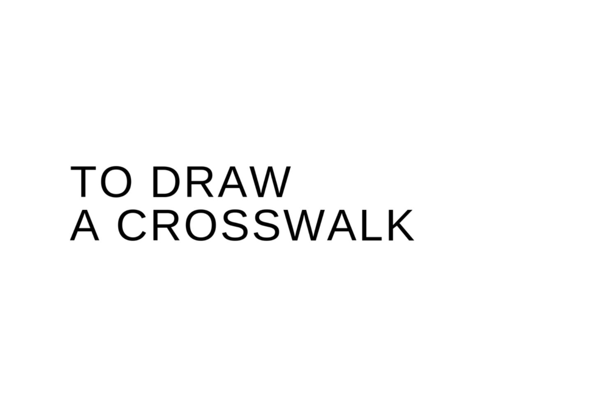

| TO DRAW A CROSSWALK (西瓜書房) | |
| 伊藤拓郎 | |
| (2019) | |
横断歩道を描くためのまえがき
この物語は、初めから終わりまで一息に書ききったものではありません。物語を構成するパーツはすでに手元にあり、そのことに気がついたのは、この読み物が刊行されるほんの一ヶ月前でした。それぞれ独立していた文章のまとまりが、とある重力によって徐々に接近し始めるのを、私は黙って観察していたに過ぎません。
私が住んでいる街は豊橋というところで、愛知県の南東部に位置している。中心市街地には新幹線の止まる駅があって、劇場があり、商店街がある。それから公園があり、一級河川の豊川が流れている。それは三河湾へ注がれている。真っ白な紙面に、南から北へ走る国道一号線と、東から西に流れる豊川の線を引けば、最低限の豊橋の地図が完成するはずです。現在、私の路上はそこにあります。
駆け抜けていった風来坊な女の子へ、この本を送ります。
二〇一八年の雪かき。その帰り道の約束は、これをもって果たせますか？
二〇一九年三月二十五日
筆者

第一章 牛川の小屋
第二章 〈横断歩道描き〉転進
第三章 そして消耗戦へ
わたくしたち豊橋市民は
１． 心をあわせ美しい町をつくりましょう
１． よく働き豊かな町をつくりましょう
１． 愛情をもちあたたかい町をつくりましょう
１． きまりを守り明るい町をつくりましょう
１． 教養をたかめ文化の町をつくりましょう
豊橋市民愛市憲章より
一九六二年 四月一日 制定
第一章 牛川の小屋
わたし
太平洋に面しており、一方で、二つの半島からなる湾にも接している。西北から強い風が吹く街。豊橋。わたしはここで生まれ育った。
柳生川という二級河川に近く、中央図書館のそばにある家は、およそ三〇年前にわたしの両親が建てた。その時、わたしは幼稚園の年長くらいだった。
わたしの両親が、住宅メーカーの担当者と人生設計について熱心に語っている間、わたしは小学二年生の兄と遊んでいた。兄は手先が器用だったので、幼児向けの積み木であっても、工夫しながら素早く積み上げた。わたしはそれを破壊するのが役目だった。怪獣だったのだ。積み木が床に散らかると、兄はまた違う方法で建築し、わたしもさっきと違うやり方でそれを破壊した。そういうゲームなのだ。両親の人生設計の話はかれこれ一時間半続き、それが終わった時、わたしは兄の建造物の三百十六棟目を破壊していた。
建設用の作業足場が組まれ、防音シートが風を受けてばたばたと音を立てている。わたしは父親に手をひかれて建設中の実家の様子を眺めに訪れた。日曜日だったので職人たちは誰一人そこにいなかった。何の変哲も無い、よく晴れた昼過ぎである。
当時の父親が、いずれ完成を迎える家に何を思い描いていたのか、わたしは今でもよくわからない。そんなことは考える必要もないか。あるいは、「夢のマイホーム」と多分に叫ばれていた頃の、世間の生み出した価値観をして、優越感に浸っていたのかもわからない。実のところ、わからない。そして、それが全てだ。当時のわたしが父親から学んだのはそういうことだった。
建設中のわたしの実家は、いずれ間接的にではあるが、一冊の小説を世に送り出すこととなる。その作中には、建設中のわたしの実家が登場しており、やはり日曜日の昼過ぎに、わたしは父親と一緒にいた。マトリョーシカ人形の様相を呈しており、その原因はわたしにある。わたしの中には、建設中のわたしの実家が存在し、そこにまたわたしも存在しているせいだ。この物語の構造はおそらくそういう風にできている。
際限なく乱立するわたしの実家は現在何軒目か。
そういう時、どうすればいいだろうね。わたしにはわかる。建設中のわたしの実家を破壊してやればいいのだ。こんな風に。
そうして出来上がったのが、わたしの実家だ。
とある住宅メーカーは、この街ですっかり根を張り巡らした企業であり、数年前に子会社化した。その親会社は、住宅とガスの企業を取り込んでいて、この街の住宅事情のほとんどはそこに集約される、というのが実態であるらしい。週末、夜の駅前を歩けば、広小路の通りと商店街の合流する書店前の往来の中に、一人くらいは某企業の反対派がいた。わたしの遠い親戚の男は、車道の交通を遮断し、某企業に反対する街頭演説を敢行して逮捕された。彼なりの問題意識から芽生えた訴えは、自動車のクラクションと運転手の怒号によってかき消されてしまったというわけだ。
小屋について
大学生の頃、毎年、夏になると、わたしは北陸から豊橋に帰ってきた。一級河川のそば、キャベツ畑の広がる土地に、わたしは小屋を借りていた。古びた木造二階建ての一軒家。わたしはそれを小屋と呼ぶ。その頃、知り合った女の子は、夕方になると、市街地の北の外れを流れる一級河川の際を歩いて帰るような人だった。豊橋公園の裏から、朝倉川に架かる木造の橋を越えて、街灯の全くない畑の中をゆくその道は、心細さという点で荒野だった。畑の中に建つ木造の古い納屋のとなりに、錆びたバスが巨大なブルーシートを被って押し黙っている。彼女は牛川の渡しのところまで、川沿いを歩くのだが、その間に魚が何度も跳ねた。
「ああやって跳ねるのはね。水面近くの餌を食べようとしているの」と彼女は言った。「わたしもたまに跳ねるわ」
「それは嘘だよ」とわたしは言った。
わたしたちが歩くほどに、背後の市街地は小さくなっていき、そして、河原の林の蝉はますます騒々しかった。
彼女は普段、駅前の旅行代理店で事務の仕事をしながら、夜は松葉通りのクラブで働いていた。旅行代理店の仕事が休みで、尚且つ夜まで暇な時には絵を描いて過ごした。
彼女はクラブで使う名前や、絵本を描くときの名前を日常生活にも持ち込んでいて、分割されたそれぞれの彼女の為に、たくさんの呼び方があった。わたしはそのどれも、しっくり合うものがないように思っていた。
そのせいで、わたしにとって彼女は名無しの羊だった。
彼女が眠るときには、必要なら、わたしはいつでも手を握ってあげようと思う。
例えばこんな夜があった。
「大丈夫。ここは牛川の小屋だよ」とわたしは言う。
「夜の砂漠みたいね」
そう言ってしまうと、彼女はもう、安心して眠っているように見えた。
わたしの手を握ったまま。
夜の砂漠へ続く引き込み線は、彼女の絵筆を持つ方の手だった。
ある時、わたしが小屋に帰ると、彼女は一階の部屋で絵を描いていた。わたしは静かに階段を上がって、自分の部屋の布団に横になった。その部屋のちょうど真下に、彼女の気配はあった。絵筆を水ですすぐ音が聞こえるからだ。わたしは降りて行って晩御飯は何がいいか、と彼女に尋ねた。彼女は、ありがとう、と言い、もう少ししたら帰るからいらない、と言った。
日も暮れかかる頃、小屋の戸口でわたしと彼女はキスをして別れた。
彼女の絵の具は、わたしのズボンやシャツに移り、それはなかなか落ちなかった。
右足、左足、右足
石巻山の麓、木苺が生えているような茂みの中で彼女は寝ころんでいた。そういう時には、決まって爪の間に乾いた土が挟まっているような人だった。彼女はほんの一〇分前に家を出て、ここにちょうどいい茂みを見つけたので地面に横になった。はなから昼寝をする場所を探していたのだ。
茂みの陰には一匹のマムシが進行中であり、うねる胴体が彼女の足先をかすめていった。彼女は死んだように眠っている。木漏れ日がプリズムのように色彩を湛えて降りてくる。風が止んで、着陸した枯葉の裏でダンゴムシが丸くなると、彼女も腰を曲げて丸くなった。その動きの軌跡は土に刻まれ、雑草の傾きぐあいに刷り込まれた。
彼女は極々見えづらいものに守られているらしい。わたしの方でそれを体感することはほとんど叶わない。彼女の同心円上には、不思議な遊星が浮かんでいるのが見える。その星々と彼女の間には、わたしたちにとって、ほとんど不可視の「つり合い」という情（あるいは錠）が発生しており、やっぱり彼女は守られているらしい、という結論に至る。
同日同時刻、わたしは自転車を漕ぎながら、石巻山の麓へ向かっていた。そうなった顛末を、ペダルを踏む片手間に語るには、端を折ったとして文章三つで事足りる。
右足 彼女は余暇に絵本を描いて過ごしている。
左足 絵本が出来上がると、携帯電話が鳴り、わたしは彼女の家に出かける。
右足 その帰り路。
自転車のペダルは基本的には片方ずつ踏む。だから文章の方も、右足、左足、右足......と続くわけで、最低でも文章が三つ。左足、右足、左足でも同じことだ。利き手や利き足があるように、文章にもそうした身体性はあるはずだ。わたしは一つの事柄をこんなふうに捉えて説明するのが癖だった。やろうと思えば一文で完結することも可能だろうけれども、それに意義を感じられるかどうかは別の話だ。
彼女の絵本は、街の小さな出版社で取り扱われていた。商店街の一角にある土俗的な書店の児童書の棚に、彼女の絵本が傾いているのを見ていると、わたしはなんだか、
この街で生きていけそうな気がしてくるのだった。それは、自分がいつまでも児童だということを思い出させてくれる装置でもあったから。
彼女の家に上がるとテーブルの上に絵本が置かれている。わたしは椅子に腰かけてそれを読む。彼女はわたしの向かいの椅子に座っていた。その時点での絵本が、全くの出来立てであるのか、すでに出版社を通っているのか、それはわからない。わたしは絵本を読み終わると、感想を言う。絵本に出てきたオムレツがおいしそうだった、とか。だから今晩はオムレツを作ろうと思うよ、とか。そういうことを言う。
絵本を描く彼女とは、「フォルム」という名前の喫茶店で出会った。店内の壁はコンクリートの打ちっぱなしで、ピクチャーレールや照明の機材がそろっているから、絵画の展示が頻繁に行われていた。ちょうど絵本の原画展を開催しているとき、その喫茶店でコーヒーを飲んでいたわたしの隣にいたのが作者であって、彼女だった。わたしたちは初めから気が合い、それはお互いに、ある一つのモノに引かれている衛星同士だと分かったからだ。それを確認するための一番手っ取り早い方法は、余暇の話ばかりするということ。
市電の走る駅前大通は人の往来が多い。昼の休憩から会社に戻るサラリーマンとテスト期間のために帰りの早い高校生がクロスオーバーする。わたしは駅前の駐輪場に自転車を停めた。駅に入っていって、蒲郡行きの切符を買うと、大垣行きの東海道本線の列車が来るのをホームの端で待った。時折、ホームを強い風が吹き抜けた。
以前、石巻山の麓の家に呼ばれた時、絵本を読み終えた後で、彼女に庭の草刈りを頼まれたことがあった。わたしはその手のことに不慣れだったが、不慣れなりに、彼女に丸型鎌を貸してもらって畳八枚分の庭の草を刈った。彼女に言わせれば、わたしの働きぶりを、素人にしては及第点という評価に留めた。今にして思えば、あの草刈りは傍目に見ても悲惨なものだったろうと思う。事実、その甲斐あって、一週間もしないうちに雑草達はむしろ張り切って成長し、彼女の庭は草刈り前の状態に戻った。
灰色の日
翌年の夏、わたしがこの街に帰ったとき、駅前の旅行代理店に彼女の姿はなかった。松葉通りのクラブでは、
「彼女はもういないよ」と男性従業員が当たり前のように言った。
石巻山の麓にあった彼女の庭付きの家には、不動産屋の入居者募集の張り紙があり、庭の雑草は心電図みたいに無愛想だった。わたしの牛川の小屋にしても、彼女の姿はなかったし、それからソニーの古いラジカセがなくなっていた。
机の上には一冊の絵本が置かれてあり、それはわたしの知らないものだ。絵本を開くと、しおりのような和紙が床に滑り落ちた。絵本に挟まっていたのだ。そこには「転がる石には苔むさず」と書かれていた。彼女の字だ。
わたしは椅子に落ち着いて、彼女の絵本を読んだ。
彼女の絵本には例の跳ねる川魚がかなりの頻度で登場し、物語の隙間を縫うように、気ままに泳いでいた。
牛川の渡しが無期限の運航休止を発表したのは、それから一週間後のことだ。
高津の帰還
石巻山の遠く、向こうから、薄ぼんやりとした日の光がやってくる。パレットに取り出した水彩絵の具が、絵筆の水によって滲むような、そんな広がり方をした。牛川の田畑やあぜ道を描き出す午前五時。カーテンの端から漏れる光は柔らかだった。今は別れてしまった女の子の掌みたいに。
こめかみをマッサージしながら、わたしは万年床から這い出した。こんな起床を、わたしは望んでいなかった。玄関の戸が、狂った置時計みたいに騒ぎ始めたからだ。どんなに人生を振り返っても、これが最悪の目覚めだった。
わたしの暮らしている牛川の外れ、そこに建つ小屋は「恐らく築百年ではないか」と街の不動産屋が言っていた。あんまり古いので、不動産屋もそこのところ曖昧に済ましているらしい。それは冗談。わたしにとっては、そのくらいの方が、都合が良かった。つまり、その小屋にはチャイムなんてありはしないし、家人を訪ねるには立てつけのあまり良くない引き戸を思いっきり叩くほかなかった。二階の寝室から一階に下りる階段は幅が狭く、よく軋む。木造の小屋は、冬にはひどく底冷えした。わたしは手近にあった毛布に身を包みながら、玄関までの短い廊下を飛び石の庭園のように行った。戸を開けると、ダウンジャケットで恰幅の良くなった高津が立っていた。思いがけない友人の帰省に、わたしは面食らった。てっきり彼は今頃、東京で一旗揚げるために奔走しているものだとばかり思っていたからだ。
「頼む。なんか食わしてくれないか」と高津は言った。
三日前、かつ丼屋の二階で集めた、わたしや友人たちのカンパはいったい何だったのか。
ふたたび、小屋について
わたしが大学一年生だった二〇一六年の夏、最も必要だったのは公共の広場ではなく、限りなく個人的な小屋だった。テレビやパソコンは無くて良く。大学の友人がエジプト旅行のお土産にくれたスカラベのペンダントトップだとか、父親が昔使っていたソニーのラジカセを置けるような小屋だ。幸いにも、中心市街地を外れれば、わたしたちの街には空き家はいくらでもあった。
高津は、そんな小屋を持つ友人の一人だった。彼の持った初めての小屋は西の外れ、三河港の方にあったが、大学二年生の時にその小屋を離れた。その経緯はいろいろと噂が立ったが、多くは女性関係で、その土地から追い出されたというものだ。実際、彼はたくさんの女の子に人気があったし、わたしよりも多くの時間を彼女らに捧げていたはずである。
高津が持っていた小屋の窓からは三河湾の港が見えた。数えられないほどの自動車が金網の柵の向こうに整列しており、夕方が一番綺麗な眺めだった。
三河湾に沈む夕日。わたしと高津は二人でそこにいた。すると、小屋の戸が叩かれ、一人の女の子が入ってきた。彼女は高津に断わりなど入れずに、勝手に冷蔵庫を開けて缶ビールを飲み始め、テレビも点けた。その間、わたしと高津は彼女にとって透明人間だった。地方局の情報番組が奥三河のお祭りを特集していた。高津は彼女の傍に寄り添い、落ち着いた。居た堪れなくなったわたしは、黙って小屋を出、三河湾からの潮風に身を縮めた。
全く別々の都市が、深い深い地下の水脈を共にするように、高津もやはり、限りなく個人的な小屋を必要としていたのだろうか。その数日後、高津は小屋を離れた。高津がそうした本当の理由は、牛川の小屋に住んでいたわたしの耳にはまったく届かなかった。東海道をなぞる鉄道の線路を越えるだけで、途絶える噂の煙はそんなものなのだろう。
松葉通りのクラブ
わたしの小屋は、わたしの愛すべき物によって構成されている。
わたしの実家は中央図書館の近くにあり、週に一度は実家に顔を見せている。実家と小屋は全く違うものであって、実家の自室とはまた用途も、意味合いも違っている。小屋とはいわば社会の中にあって宙吊りの自我である。その場所で、わたしは小説を書いていた。近くを流れる豊川のこと、街の歓楽街で働く女の子について。そして親友の高津と里美という女性についてだ。父親が言うには、昔は小説を書く人がもっとそこら中にいたらしい。この辺りでは、今はきっとわたしだけになっただろう。
週末、高津と二人で松葉通りのクラブに入ると、案内の男性がわたしに小説の進み具合を尋ねた。案内の男性は、自分が小説に登場するんじゃないかと気をもんでいるらしかった。
「だって、君の他に小説を書いている知り合いなんていないし、それに物語にクラブが出てくるんなら、席に案内する係が必要じゃないですか」と彼は言った。
わたしは、彼がスーツに合わせてくるペイズリー柄のネクタイが気に入らなかったし、ちょうどその日も、彼は同じネクタイを締めていた。
「席に案内するくらいならウサギにだってできるんだからね。その方が可愛いしさ」
なんて具合に、彼をからかってやれば良かったと、わたしは帰り道に思った。
松葉通りのクラブにいる一人の女の子を、高津とわたしは気に入っていた。それは高津が東京に行く三ヶ月ばかり前のことだ。
わたしたちは、豊川の土手の草刈りで得た二万円札を松葉通りの女の子の為に使おうと思った。わたしたちのテーブルには、二人の女の子がついたが、高津は、わたしに近い方の女の子とたくさん話をしたがった。高津の側の女の子は一〇分もしないうちにテーブルを離れて、戻ってこなかった。高津とその女の子は、いかにこの街を出ていって東京で成功するか、について話した。彼がかねてより推考してきた計画について。そういう話は楽しい。夢があるから。女の子は、その計画が成功した時には、東京で一緒に暮らすことを彼に約束させた。しばらくして高津がトイレに立ったので、わたしはようやく、きちんと彼女と話をすることができた。
彼女とクラブでする会話は、二人で牛川の小屋にいる時とは一風変わったことだった。場所によってできる会話も変わってくる、というのを、わたしはそこで理解した。
現に彼女は絵本のことをここではあまり話したがらなかった。代わりに話すのはこんなことだ。クラブで働くのは特別苦痛でもないこと。それでも数年前に、お客さんのことを本当に好きになってしまって大変だったこと。わたしの持っているソニーの古いラジカセのこと。
「この間、宝くじを買ったんだけどね」と彼女は言った。
しかし、わたしはアルコールにすっかり浸かっているような気分になっていた。高津はトイレから戻ってきたのか、どうなのか。頭が朦朧として、わたしは夜の牛川の星空を見ている気分だった。
「急に私がいなくなったら」と言う彼女の声だけが遠くに聞こえた。
三言目に至っては、本当に遠く、豊川の上流から投げられたみたいだった。
その三つの文章を、わたしは帰り道に紡ぐことができた。
右足 「この間、宝くじを買ったんだけどね。」
左足 「急に私がいなくなったら、」
右足 「それが当たったんだと思って。」
高津について
高津が東京から戻ってきたとき、わたしは親子丼を作ってやった。玉ねぎをたくさん入れると彼は喜んでいた。彼は以前住んでいた小屋を引き払っていたので、行く当てがなかった。実家には戻らないと強情だったのもあり、わたしはしばらくの間、彼に牛川の小屋を使わせてやることにした。物置に使っていた一室を掃除し、そこを彼の仮の小屋とした。とはいえ、彼にはリュックサックに収まるだけの持ち物しかなかったから、部屋はがらんとした。彼はそのうち、わたしの真似をして小説を書き始めたが、うまく続けられなかった。ペンを机に置き、うつ伏せにしている時間の方が長かった。しかしわたしは、彼のそういう様子も容赦なく書いている。現に、こうして。わたしは、前みたいに女の子とデートでも行ってきたらいいじゃないかと言ったが、彼は、ううんと頷くだけだった。風鈴の内側みたいな部屋で、彼は一ヶ月間そうやって過ごした。
☆
向山の図書館の窓ガラスを雨粒が静かに流れていた。大池や、そこに生える水生植物はわたしの知らない時代の映像のように見えた。明治時代の初め、向山の大池はもっと大きく、今の国道一号線の方まであったそうである。雨の平日の図書館を利用する人は少なかった。貸し出し受付の人々は、暇そうに窓の外を眺めている。わたしは手紙を書くためにここにいた。小屋で書くにも、高津の視線が気になって、どうにも素直に書ける気がしなかったのだ。
共同墓地
牛川の小屋に戻ると、高津が夕飯を作ってくれていた。高津は慣れた手つきでジャガイモの皮をナイフで剥いた。火にかかった鍋からは出汁のいい匂いがした。
「夕飯は何かな」
わたしは高津に言った。
「おでんだよ」と彼は答えた。
「いいね」とわたしは言って、階段を静かに上がった。
高津の作るおでんはとっても優しい味がするから、わたしは好きだ。
それから、高津はつい先日、共同墓地の守衛の仕事を始めた。守衛室の人々の内で、彼は一番の年下だそうである。
書店（あるいはラ・ヴィオレテーラ）
夏の間だけ、わたしは広小路の書店でアルバイトをした。早朝、書店に届いた新刊の書籍を棚に並べ、代わりに売れない書籍を問屋に返品する。売れないが、いい本というのは、ある。わたしはそういう本を棚から外す時には悲しい気持ちになった。なんというか、それがわたしだ。
一〇時に書店のシャッターが上がり、一番に高津が入ってきた。高津はわたしを見つけると真っ直ぐこちらに来た。地図はどこだい、と言うので、わたしは案内してやった。わたしは歩きながら、地図にもいろいろあって、範囲とか縮尺、飲食店をまとめたものだとか、もう少し詳しく教えてくれと言った。彼はおれたちの街の地図だ、と言う。「おれたちの」なんて大それたことを言う。わたしは彼が東京から戻って来た時のことを思い出していた。東京で何か事があって、浮かない顔をしているかと思えば、一転、清々しい感じだったのも腑に落ちなかった。
思い出してみよう。高津が帰ってきた朝。霜の降りた呂畑の雑草が、豊川の水面から立ち上る靄が、わたしに何か新しい変化を促しているような気がした。それがどういう種類のモノか、わたしにはわかっているつもりだ。わたしは、それまで演じてきたフレーズを、少しずつ違う形でリフレーンすることになるだろう。
地図を買っていった高津が、いったい何をその頭に思い描いていたのか、わたしはその時知る由もなかった。
「横断歩道を描くから一緒に来いよ」と彼に誘われるまでは。
ふたたび、松葉通りのクラブ
松葉通りのクラブへ、ふたたび訪れた。通りに幾人かいる客引きの面々をかき分けて、例の絵本の女の子のクラブへ。入店すると、やはり苦手に思っている男性店員がわたしを案内した。
「いらっしゃいませ。あの体躯の良い方は一緒じゃないんですね」
「今晩は彼、仕事が遅番なんです」とわたしは答えた。それは本当のことだった。
「あの子はいますか、ほら、東京に行きたいと言っていた。あの子」
「さあね。女の子は大体みんな東京に行きたがるでしょう。指名なら、別途料金いただきますよ」
わたしはあきらめて、彼の案内するテーブルに座った。すぐに女の子はやって来て席についた。何か飲みますか、と言うので、わたしはビールを注文した。女の子は、同じものを注文した。店内に、わたしの他には、一組だけで、羽振りの良さそうな初老の男性客たちがにぎやかに飲んでいた。地方都市の小さな歓楽街といったら、こんな感じなのだ。ビールが二杯、運ばれてきて、わたしたちはこぢんまりと乾杯した。
それは湿った火打石を連想させた。
「あなたのこと、なんて呼べばいいかしら」と女の子は言った。
「スズキ、かな」
「それってホントの苗字？」
「違うよ。友達の姓。すごく気が合った」
「今も、気が合うの？」
「どうだろう。今はわからないよ。どこにいるのかも知れない」
「わかった。スズキ君ね」
「うん」
「わたしの名前は聞かないの？」
「名前は？」
「シキミ」
やや間を持って、
「気の合う友達の名前」と彼女は言った。
わたしたちはくすくす笑いあった。
「シキミさん」
「そう」
「スズキです。よろしく」
「わたしはシキミ。よろしくね」
例によって、その夜のことをあまり覚えていない。ぐるぐる回転する視界の中で、わたしは例の男性店員によってタクシーに押し込まれていた。わたしは、その様子を彼の背後から見ることができた。視点だけが、そこに浮いているのだ。男性店員は気が立っていて、別れ際、わたしの脇腹に鋭いボディブローを食わせた。
激痛が、わたしの視点をあるべきところに返した。
「まったくこの人は、小説なんて妙なものを書いているから、後先考えずにこんなことになっちまうんだ」と、そう言いたげな彼の表情がうかがえた。
その裏で、シキミさんは一人で煙草を吸っていた。店先のパトランプの回転の度に、くっきりとした白い煙が漂った。それを吐き出す彼女の唇の形だとか、そんなことばかり、丁寧に触れるように想像した。
「あんた、家はどこだ？」とタクシーの運転手は言った。
わたしは脇腹の痛みにヒーヒー呻きながら得体の知れない笑いを噛み殺さなければいけなかった。そのうえ涙まで流れてきて、とてもそれどころじゃなかった。
「おい。にいちゃん。家はどこかって聞いてんだよ」
とにかく、タクシーの運転手はイライラしていて、助手席のヘッドレストを殴りつけた。わたしは後部座席に乗り上げながら蹲り、
「牛川へ」と発声した。
「新川の辺りかい」
「いいや、逆方向ですよ。まずその角を右へ入って」
「ああもう、いいよ。とにかくこんな通りは早く出ちまった方がいいんだ。にいちゃんなあ、見たところ若そうだけど、向いてないよ。いいか、向いてないんだよ。分かったら三分間停車したままにしてやるから、頭冷やしな」
「いったい何に向いてないって言うんです」
「家は？」
「牛川」
カドミウムイエローのガッシュ
年末、北陸から帰ったわたしは、牛川の小屋に、籠るようにじっとしているつもりだった。読まなければいけない書籍が何冊かあり、そうしないと彫刻論の講義のレポートが書けなかったからだ。丸二日、小屋で過ごして、しかし、寒さのために気持ちが折れた。わたしは実家に帰ることにした。高津もいよいよ折れて実家に帰るというので、牛川の小屋は無人になった。わたしは小屋の掃除をしてから出たが、高津は自分の部屋だけ掃除して、手伝いはしてくれなかった。わたしが、そのことについて腹を立てていると、彼はスーパーの袋にいっぱい入った三ケ日ミカンをくれた。
わたしは、松葉通りのクラブに一人で行ったことを高津に話した。例の女の子は、もういなかったということ。シキミさん、という女性については秘密にしておいた。彼は、そうか、とだけ言い、駅の西口を出てすぐ、停車場で港行きのバスが乗車待ちしているところに飛び乗った。それは三十一日の昼過ぎのバスだった。
高津を見送った後、わたしはすぐに実家へ向かわず、反対に広小路の通りを当てもなく歩いた。街灯にはイルミネーションの電飾が波打つように続いていた。アルバイト先の書店は営業していたが、入る気にはなれなかった。年末のシフトに入れるかどうかのメールがあったのを、すっかり無視していた手前、誰にだって合わせる顔がなかったのだ。
それから松葉通りを歩いた。ここはなんだか気分が落ち着くのだ。店先に市の指定のゴミ袋が三つほど重なって出ている。時折、スーツを着た男性が足早に通りを抜けていく。松葉通りを出るとコンビニが一軒あり、その向かいに三角形の公園がある。公園と言っても、三本の細い道路に囲われて出来た浮いた空間であり、みんなから「三角公園」と呼ばれているが、ほんとうにちょっとした花壇みたいな場所だった。古くからある書店と画材屋、それから三階建ての雑居ビルがそれぞれ三辺に面している三角公園。画材屋は昔、画廊もやっていたという話を「クローバー」という喫茶店のマスターが言っていた。
わたしは三角公園の真ん中に一本だけ生えている針葉樹の下に腰かけた。この街の冬の風は乾燥している。北陸にいる友達が、君の住んでいるところはどんなだ、と聞いてくることがある。そういうとき、わたしは空っ風が似合う街だよ、と言う。空っ風の良いところは何だい、と友達は言い、わたしは少し考えて、冬はみかん、夏は西瓜の美味しいことかな、と言う。それはやはり、わたしが生まれるよりも昔からそうなのだ。
画材屋の女将さんは、店の窓ガラスに「日展」の張り紙をしていた。わたしはそれが張り終わるのを待って、張り紙の方に歩いていった。女将さんは、わたしに気がついていろいろ話をしてくれた。昔の話だ。道路が舗装される前は、土煙の立つ地面がむき出しだったこととか、そこを像の群れが像使いに連れられて何十メートルも歩いたとか、にわかに信じられなかったけれども、女将さんの言うことは本当らしかった。
わたしは話のお礼にカドミウムイエローのガッシュを一つ買って、画材屋を後にした。
牟呂八幡宮
大晦日をどうやって過ごしたか、話そう。
わたしは父親と二人で熱い日本酒を飲み、ぐでんぐでんになっていた。わたしには東京のテレビ局で働いている兄が一人あるが、兄は帰って来なかった。母親は三年前に脳の病気で亡くなった。わたしと父親は、小さいコタツを押し入れから引っ張り出して、そこに入った。高津がくれた三ケ日みかんはカゴに移して、コタツの真ん中に置かれた。落ち着いてしまうと、なんだかそわそわして、テレビを点けた。年末の番組はどこも特番をやっていて、そのうちの一つは兄の関わっているものだとわかった。わたしたちはそれを見たが、特に兄が映っているということはなく、ただ一年の終わりをゆったりと過ごしただけになった。父親は三ケ日ミカンを二つ食べた。
「今年で何歳になるっけ」とわたしは父に言った。
「五十六」と父は答えた。
その数字から何か連想できるか考えてみたが、うまくいかなかった。わたしは今年で二十二になった。母親は四十四で亡くなったから、わたしはちょうどその半分生きたってことだ。遠くに除夜の鐘が鳴っている。わたしはコタツにちゃんと入って、三ケ日ミカンを食べた。粒が大きくて美味しいミカンだ。高津が実家でどう過ごしているのか、気になった。彼の実家は港の方、丘を越えた辺りの海辺にあった。その家を、わたしは中学生の頃に、一度だけ訪れたことがある。
テレビではゆく年くる年の放送が始まり、それはつまり、新年を迎えたことを意味していた。レポーターの人々が「明けましておめでとうございます」と次々に言う。
わたしは二十三の一年が始まってしまったことに憂鬱な気持ちだった。
「牟呂の八幡さまにお参りに行ってくるよ」とわたしは言った。
父親はコタツに入ったまま、
「いってらっしゃい」と言った。
☆
牟呂の八幡宮は初詣に行くと、鳥居の傍で里美と会った。
里美は中学校からの同級生で、その家は神野新田で花を育てて暮らしていた。わたしたちは新年の挨拶を交わし、それから花の様子はどうか尋ねた。
「上手くいっているわ」と里美は答えた。「大変だけどね」
彼女はかつて縁起みたいなものを大切に思っていて、弦を担ぐようなことは大抵知っていた。実家の花農家を手伝い始めて、彼女はまず天気にやきもきし始め、気温や湿度を歯がゆく思うようになった。彼女が中学一年生の時に考案した雨乞いの踊りは、雨雲は呼ばなかったけれども、そうした彼女の切実さはとても素晴らしいものだった。その話を、わたしは「クローバー」という喫茶店で里美の妹から聞いた。
けれど、いつごろからか、里美にはそれが自分にはどうしようもないことだと分かって、自然の成り行きに従うようになった。今日の彼女は、以前ほど縁起みたいなものにこだわらなくなった。
「妹は元気かい？」とわたしは里美に言った。
「あんまり他の人に言わないわよね」と彼女は釘を刺すように言い、辺りを気にして、「妹は名古屋にいるの」と囁いた。
「帰ってないんだ」
「なんでも向こうで彼氏ができて、大晦日は彼氏と二人で過ごすらしいわ」
「なんだ。そのこと、みんなに伏せているのかい」
「そう、今のところ、知っているのはうちの家族だけ。あなたに話しちゃったけどね。でも町内に知れたら、そりゃあ事なのよ。狭いんだから、うちの町内は。特に天狗連はいけないわよ。連中は、さあやれ結婚だとか、気が早いんだからさ」
「どこだってそうだよ。他人の人生の機微に薪をくべて、大きくするんだ。そうでもしないと暇だからさ、この街は。全体的にそういう風だからね」
わたしは里美と別れて、屋台の甘酒を買った。町の娘が巫女になって、お守りや厄除けの札なんかを売っている。初詣の行列は鳥居を越えて、八幡宮の外まで伸びている。里美はちょうど、あと三分もすればお参りできるようなところにいた。
里美の妹は、彼女と二つ違いで、わたしもよく知っている。神野新田のだだっ広く続く田園の中にあって、白鷺のように美しい娘だったからだ。街灯のない畦道を、月明かりを頼りに彼女と二人で歩いた夜は、きっと一〇年後も忘れないだろう。
彼女は絵を描くのが上手で、何度かわたしに空気遠近法の考え方を教えてくれた。遠くのものは朧げに、近くのものはくっきりと見えること。甘酒の味は、過度な感じがしなくて好きだ。彼女はちょうどそういった類の女の子だった。
賽銭箱までもうすぐ、というところで里美はわたしを呼んでいた。両手を振って、かなり間抜けな感じだった。わたしが駆け寄っていくと、
「五円玉貸してくれない」と彼女は言った。
わたしは財布からそれを取り出して、彼女に手渡した。
彼女はありがとうと言って、そのまま列を進んだ。
わたしは彼女が賽銭を奉納し、一年の祈願をする様子を遠目に見ていた。
クローバー
一月の暮、わたしは高津と駅で待ち合わせていた。プラットホームはＪＲ東海道本線とＪＲ飯田線、名鉄線が停車し、一番から八番までの乗り場がある。混雑時は、改札から雪崩れてくる人々の中に、一人の人物を見つけるのはそうそうできることじゃなかった。わたしは改札の向かいにある、馬鹿に大きいモニターの下にいた。モニターは地元企業のＰＲやイベントの告知を無限に提供し、わたしたちがそれらを反芻するように努めている。成功しているかどうかはこの際、関係がない。そうすることに意義が見いだせればそれでいいのだ。高津を待っている間、わたしは通り過ぎる人々を眺めていた。一度だけ通行人を勘定する仕事をしたことがあるが、そんな気分だった。その中に、里美の妹を見かけた気がした。彼女は改札を抜けると、駅の西口に向かって東西に延びる構内のコンコースを足早に行ってしまった。彼女は、名古屋の音楽大学へ進学するために受験勉強中だったと思う。上手くいっていれば、今年の四月に入学だった。普段無口な彼女だが、落語とジャズの話はいつまでもしてくれた。わたしは彼女と話すために、精一杯それについて知る努力をしたと思う。その努力の内、一番いい方法は、色々、たくさん聞く、ということだった。幸いにも、それはわたしにとってそれほど苦にならなかったし、お陰で中学生のちょっとした期間、わたしは里美の妹と親密な関係になれた。
「わたしのよく聞いたジャズの大部分は、神野新田の天狗連の人たちに教わったの」
市街地の喫茶店で彼女はそう言っていた。
「天狗って日本の妖怪だよね？」
そこは農業用水の上に建つビル群の一角にある「クローバー」という喫茶店だった。わたしはブレンドコーヒー、彼女はウインナーコーヒーを飲んでいた。それも、今日みたいな一月末の午後だった。
「天狗連の人たちの若い頃ってさ、ずいぶんアメリカに憧れたみたいよ。それこそ飛んでいくの。なにより彼らには翼があるから。でも、わたしはあんまり興味ないのよ。アメリカに行けるったって、別に、気分は乗らないかもしれないの。ペトルチアーニのライブがあるってんなら行くけども。知っている？ ミシェル・ペトルチアーニ。ピアノを弾くんだけど」
わたしは正直に知らないと答えた。
「もう死んじゃっているんだけどね」
「うん」
「これって、きっと良くないのよ。あの人たちにとっては、今が何年の何月か、なんてどうでもいいのよ。だから、マイケルジャクソンが亡くなっているとも思っていないし、そう言うと怒るし。そういう執着というか、留めておくエナジーは本当に凄いの」
「うーん、ごめん。よくわからないよ」
「ごめんね、そうかも。わたし、言いたいことがまとまらないのよ」
「じゃあ、落語の話。自分が高座に上がって、一席頂戴するとしよう。客席を見ると観客は自分一人なんだよ。そう思うと、客席の方から高座に上がっている自分が、これから話し始めるのが見える。そんなこと出来っこないって、話じゃなくてね。そういう場合、どんな噺をやりたいと思う？」
「うーん、噺はなんでもいいのよ。わたしはね。道端で人混みを作っているようなガマの油売りをやっていたいわ。幕末の頃ね、世の中がどう転がるのか、さっぱりわからないって時に、あの口上をやっていたい」
クローバーではジャズのスタンダードナンバーが流れていて、マスターはカウンターの奥で野菜を切っていた。わたしたちは時間の許す限り、クローバーで話をするのが好きだった。マスターは偶に話に参加してくれたし、彼は音楽の知識において、わたしたちよりも何倍も造形が深く、その話を聞くのもクローバーに来る理由の一つだった。店内のお客さんがわたしたちだけになると、マスターは煙草を喫み、一息入れた後で『アンクル・トムの小屋』という物語について話をした。時折、続きを思い出そうとして沈黙し、それでも物語は透明な糸を手繰り寄せるように先へ進んだ。足取りは重いけれど、大地を踏みしめて進む車だった。長編小説を誰かの口から語られたのは、後にも先にも、この時だけだった。わたしたちは数回に分けてクローバーを訪れ、アンクル・トムの生涯を想い描いた。
あらためて、中央図書館の閉架図書にあった『アンクル・トムの小屋』を読んだ時、わたしは一つのトンネルを抜けた気がした。その数年後、わたしは牛川に自分の小屋を持つことになったが、きっかけはこの周辺にあったのだろう。
☆
......ガマの油の効能は其ればかりかというと、そうではない。まだある。第一に刃物の切れ味を止める。用い出したるは鈍刀なりといえども、家に伝わる一刀。拵えこそ破れたれ、抜けば玉散る氷の刃。お目の前において、白紙をもって試してご覧に入れる。一枚の紙が二枚となる。二枚の紙が四枚、四枚の紙が八枚、八枚から十六枚、三十二枚、六十四枚、百二十八枚。春は三月落花の形、比良の暮雪は雪降りの形。と、このとおり切れる刀じゃが、差裏差表へガマの油を一つけつけるときにおいては白紙一枚が容易に切れない。このとおり刃が止まる。引いて切れない、叩いて切れない。このとおり刃が止まる。拭き取る時にはどうかと言うと、鉄の一寸板も真っ二つ。（二の腕に刃をあてて）ちょっと触ったばかりでこれくらい切れるぞ、お立会い。これしきの傷はなんでもない。血が出ればよく拭き取る、拭き取った後へガマの油をとって一つけつければ、痛みが去って血がピタリと止まる。どうじゃお立会い。はいはい、少々お待ちを。はい、そちらでご用と仰る......
花園商店街の天狗連の寄席にて
何もない。
高校を卒業して、わたしは北陸にある美術大学に進学した。小立野という兼六園の坂を上った先にある町に、アパートを借りて一人で住んでいた。夏になると、牛川の小屋で過ごすために豊橋に帰ってきていたことは以前にも書いたとおりである。そして、大学という研究機関でわたしが学んだことは恒常的に物を書くというほか、何もない。
何もない。
何もない。
何もない。
何もない。
牡蠣
大学四年生の終わり、つまり、人生で初めて牡蠣に当たった時のことだ。わたしは夜中に目が覚めて、そこから一晩中、トイレで吐いては布団に戻ることを繰り返した。もう吐き出すものもないのに、吐き気はしっかりやって来た。そういうところは律儀なのだ。
その翌日は、一日中部屋で寝ていて、りんごジュースから柑橘系の果物とゼリーを段階的に少しずつ食べる、というやり方で体調は良くなっていった。
この度の牡蠣は、個人的な自然災害みたいな在り方だった。胃の中のものを残らず吐き出しただけでなく、わたしの記憶や感情なんかを十分に混ぜっかえすだけの衝撃を持っていた。妙な言い方になるけども、これは個人的な「喪失」と「再生」について考える機会だと思ったのだ。
梱包用牛乳パック
誕生月の園児には鶏の卵がもらえるというのが、わたしの通っていた幼稚園のきまりだった。卵の生産者たちは、幼稚園の入り口から一番奥の「動物小屋」と呼ばれるところにいて、ほとんど毎日、朝っぱらから鳴きまくった。幼稚園児よりも、俺たちの方が声の出し方を知っているぞと威張る感じだ。
その幼稚園の立地は、市街地から離れた石巻山の麓にあった。大抵の生き物が遠慮など無しに生活している。幼稚園の近くの林にはキツツキがやってきて、根気よくコツコツやっていたし、イノシシが山から出たり入ったりする。わたしの何人かの友達は山で天狗を見たと言っていたし、いよいよそういうところなのだ。
十二月といえば、薪ストーブが幼稚園の教室をじんわり温めている中、わたしは絵本を眺めるか、クレヨンで絵を描いていたはずだ。教室にはいつも結構な種類の絵本と裏が白い広告の束が置いてあった。昼過ぎくらいになると、わたしは先生に呼ばれて職員室に行った。誕生日の月の園児はみんなそうだ。順番に呼ばれるのをそわそわしながら待っている。職員室の先生は私の右の手のひらに何色の絵の具を塗るか質問する。その時、わたしがなんと答えたかは家に帰ればわかる。そうやって、園児の手のひらを転写するわけだ。それも、わりあいステキなものなのだけれど、その後に貰えるのが鶏の卵だった。大抵の園児たちは、その卵に心惹かれたものだ。
一応、先生は注意してくれるのだけれど、わたしたちはみんな「卵が割れやすい」ことを知っていた。絵本やアニメやなんかで、そういうシーンを見たんじゃないかな。
その卵を、最悪なことにならず、安全に家まで持って帰れるよう、先生は特製の牛乳パックを作ってくれた。五〇〇ミリリットルの容器の側面に、内側で固定された紐が伸びていて、それによって首から下げることができる。幼稚園の帰りのバスに乗る前に、先生は卵の入った特製の牛乳パックを渡してくれた。わたしは先生にさよならを言って、バスに乗り込む。心配なことは何もなかった。バスに揺られながら、わたしはそれをしっかり抱えていればよかったのだ。
さあ、そのことはもう終わりよ
ひどい底冷えのする牛川の小屋で、わたしは目覚めた。窓の外は日の暮れかかった茜色の風景が広がっていた。まるでタイムスリップしたような心持ちがした。いつか雨の日に書いた手紙を封筒に入れ、封をし、厚手のコートのポケットに滑り込ませた。わたしは街に出ることにした。川沿いを下って公園の裏から市街地に入った。松葉通りに着く頃にはいい時間になっていた。例によって、声をかけられたクラブの関係者は、小説に出たがっていた彼だった。わたしは彼に君を登場させるから、シキミさんを呼んでくれないかとこっそり交渉した。彼は、そういうことなら、仕方ないですね、と言って条件を飲んでくれた。つまり指名代は彼が持ってくれた。
わたしはビールを頼んで、一人で席に着くと、シキミさんがわたしの隣についた。彼女はビールを注文して、それはすぐに運ばれてきた。わたしたちは乾杯をして、シキミさんは、いつもは仲良しの男友達と来るんでしょと口火を切った。わたしは、そんなに来ていたっけと言った。去年の夏頃はね、と彼女は言う。
「わたしは貴方たちのテーブルにはあんまりつかなかったけど、遠くから見ていて、知っているのよ。貴方のこととか。それから、高津さんて方でしょう。貴方の友達。あの体躯の良い人よね」
「ごめんなさい。今日はスズキという名前で来ているんです」
「あ、そうだったね。ごめんなさい」
「頼みごとがあるんです。シキミさんのお願いをなんでも一つ聞きますから、お願いを一つ聞いてもらえませんか」
「内容にもよるけど」
「以前、ここで働いていた女性に渡してほしい手紙があるんです。ここに、持っているんです」
「そういうのって、わたしに対してちょっと失礼なことだって、わかる？」
わたしは黙ってしまった。それはどうしようもなかった。
「良いわ。それをここに置きなさい。そしたらそれきり、そのことは忘れること。あとから、わたしがこれをどうしようと、貴方には、わからないの。いい？ 捨てちゃうかもしれないし。何らかの方法で、彼女に届くかもしれない。いずれにせよ、忘れなさいね。でも、わたしのお願いは一つ聞かなきゃダメよ」
「わかりました」
「貴方が小説を書き終えたら、わたしのところに持ってくること、その時は指名料をちゃんとつけてね」
「ありがとうございます」
「さあ、そのことはもう終わりよ」
さようなら、わたしの小屋
翌日、正午過ぎに市役所の職員が牛川の小屋を訪ねてきた。市役所の職員と一緒に小屋の持ち主であるおばさんもいた。そして、区画整理のために古家を取り壊す趣旨の説明を簡単に受けた。説明が終わると、二人はあっさり帰っていった。ホッチキスに留まった数枚の用紙は、机の上に置いた。昨晩、シキミさんと飲んだお酒の酔いがまだ残っていて、朦朧とした現実の中を彷徨いながら、
「もうここにはいられないんだ」という事実だけは、はっきり認識していた。
それは辛いことだ。
一週間後、そこにあった愛すべきモノはほとんど、実家に送り、さっぱりとした部屋で、小屋での最後の夜を過ごした。いつか彼女が置いていった絵本を傍らに置いて、眠りに落ちるまでの間、わたしは泣いた。
それだけのこと
とある月曜日の朝。わたしは、父親と二人で郊外の喫茶店にいた。市電の終点の町だ。父親はモーニングサービスのゆで卵に塩をかけすぎていて、そのことを塩の容器のせいにした。わたしは父親から塩の容器を受け取り、わたしのゆで卵にそれを振るった。事実、塩はかかりすぎた。
父親は東愛知新聞を軽く折りながら読んでいて、わたしは窓の外を眺めていた。春雨が切れ目なく降っているのだ。その喫茶店は、豊鉄市内線の井原−運動公園前の区間の脇にあった。いずれ雨音をかき分けて、市電の走行音が遠くから聴こえてくるはずだと、わたしは考えた。それを待っている間、わたしはまじめに座っていた。
二〇二〇年の三月の初頭。わたしは大学を卒業して、愛知県豊橋市に帰ってきた。引っ越しの諸々の手続きのために、市役所を訪れたときに見た、受付近くに掲示されている豊橋市の人口。わたしはその内の一の位に影響を与えているだけで、それだけのこと、と誰かに諭されている気持ちになった。そして、実際にその通りだった。
わたしの通っていた大学は北陸にあって、自転車をしばらく走らせれば日本海に出られるようなところに住んでいた。休日には、友人たちと連れ合って砂浜に出かけ、海に入ったり、凧揚げをしたりした。海からの風は強く、わたしは手にした凧糸をすこし放してやるだけで、凧は勝手にぐんぐん揚がっていった。実感したことはないが、わたしの五感には「日本海からの風」という情報が、その土地で新たに刷り込まれていることと思う。それが一重に、引っ越しから一ヶ月経とうとしている現在に、微細な歯車のずれを引き起こしている要因の一つじゃないかとみている。高校を卒業した時点で、「豊橋の街」について、わたしなりの翻訳がほとんど出来上がっていたわけだけれど、それが順応していない予感がしている。もちろん、わたしの考え方やモノの見方はここ数年でかなり変化したし、豊橋の街にしても何かは壊されて、何かは建設されたはずだ。ことの主題は変化の事実ではなく、内的な探訪にあってほしい。
第二章 〈横断歩道描き〉転進
横断歩道を描くことについてのメモ
○横断歩道
「道路標識又は道路標示により歩行者の横断の用に供するための場所であることが示されている道路の部分」（日本国道路交通法の定義）
・横断歩道を描くことは高津が最初に提案した。
・制作期間は、五月三一日から六月一日の夜中。車道に横断歩道を描き、朝になったら（午後五時頃）何事もなかったかのように描いたものを綺麗に洗い流すこと。
・画材は、石灰の粉（街の小学校を巡り、古くなった石灰を譲ってもらうこと）。
・具体的な制作方法は、テープでマスキングを施し、石灰の粉を車道に振りかける。
上手く振りかけるには、金網のザルを使うと上手くいった。ドーナツに粉砂糖を振りかける要領と同じだ。そうして、ムラなく、白線を一本ずつ描いてゆく。
・作業中は、作業着、ゴム手袋、安全メガネの着用が推奨される。
・主な制作者は、高津、里美、わたしの三名。
年・ナンバリング・描いた場所
二〇一九年 第一回 海沿いの凡庸なカーブ
二〇二〇年 第二回 『旗の店』のある通り
二〇二一年 雨のため中止
二〇二二年 第三回 牛川の田んぼの近くの狭い車道
二〇二三年 第四回 新幹線の高架下の車道
・備考１
第三回まで、前述の三名で制作。第四回には里美とわたしが不参加。
二〇二三年の第四回の夜、高津は一人で横断歩道を描きはじめた。
同日の深夜二時、とある物流業界大手の４ｔトラックが、高津を生物のたどり着ける限界を越えたところまで弾き飛ばした。
・備考２
わたしたちの横断歩道はとても美しかった。
☆
雑多に列挙された以上の事柄は、わたしがいずれ、小説に書こうとしているマテリアルの一部である。君が物語を読み進めてゆくそのときどきで、以上のメモを眺めていただけたら嬉しく思う。
天気
「君はもう、すべてを諦めてしまったのかい？」
とわたしはある女の子に言ったらしい。
ある女の子の夢の中に登場したわたしが、およそふさわしくない台詞を口にしたことを聞いた五月のある朝。その女の子は、大学の講義に向かうわたしを呼び止めて、昨夜見た夢の話をしてくれた。わたしはすぐにそのことを謝ったが、女の子はそれを不思議がって笑っていた。わたしは他人の夢の中で、ずいぶん失礼なことを言ったらしい。女の子は、それについて、「自分を見つめ直せました」とわたしに礼を言って去っていったが、わたしは反応に困ってしまっていた。夢の外のわたしなら、そういった無責任な発言はしないからだ。いや、しないようにできる限り努力しているからだ。夢でなくても、自分の発言の意図が、相手に正確に伝わることはないだろう。限りなく正確に近い推量と言い換えてもいい。そう思うのは、わたしが、これまでにその手の齟齬によって、少なくとも苦労してきたという経験に基づくわけで。そして、意識してはいても、やっぱり、その齟齬は埋められそうにない。
ある物質が物語性を帯びるとき、その強度によっては幾時代、あるいは、あらゆる人々の記憶に伝達され続ける可能性を持つ。ある芸術家は、その「物語」という形態の力や危うさを理解していた。わたしでさえ、そう言われれば想像できる。
わたしは批評家ではないし、ある分野における専門知識なんてものも全くと言っていいほど持っていない。ある現象において、ほかものと比較するとか、時代背景を鑑みるとか、そういう研究は専門家に任せることにして、わたしは、事実をありのままに書くだけだ。それは、根気さえあれば、誰にでもできることだ。
つまり、わたしが言いたいのは、他人の夢に出ている自分が、そこでどんな台詞を口にしたとしても、許すつもりでいる。わたしは無責任なことを言うかもしれない。それを君が聞いて、どうしても許せないと思うなら。この物語を焼いてくれていい。炎の中で、煤けて黒ずんでゆく様や、この一文字のサイズよりも小さくバラバラに舞い上がる物語を見届けた後、君がそれすら忘却した時、その消失は、あるいはパントマイムの完成形だと、わたしは思っている。それは輪郭を撫でたりなんかしないし、ものの質を表さないパントマイムだ。書き手であるわたしの、ささやかな希望は、それが行われる際の天気の具合くらいだろう。できるなら、太平洋側の、静かに波の打ち寄せる砂浜で、よく晴れた、乾いた潮風が吹く日に。
パチンコ屋
「Ｕ」「Ｓ」「Ａ」の文字を象った電光掲示板がパチンコ屋の上空で、霞んだ緑色をしている。こういう色合いは、豊橋駅前の周辺を散策してもなかなか見つからないだろう。そのパチンコ屋の屋上からは、明日にも飛び立とうとするスペースシャトルが、第二宇宙速度を上回るための燃料を積み込んでいる最中だった。わたしは、その様子を近くの喫茶店から眺めている。人を待っているのだけど、待ち人は一向に来ない。近くの席に座っている二人の女性は美容整形についての議論で盛り上がっていた。二人の女性は、話題という自動車を上手に乗りこなしている。鼻筋インターチェンジから始まり、それぞれのフリーウェイを並走して、目尻インターチェンジまで到達した。その二人は、腕時計を見ながらなんやかや話した後、喫茶店を出て行った。
パチンコ屋の屋上にあるスペースシャトルが飛び立ったという話は、一向に聞かない。打ち上げの日は来るが、天気が悪いだとか、システムに不備が生じたとか、乗組員が鬱になったとかで、準備をしては、決行中止のいたちごっこを演じているらしい。不備の全容ついては、列挙できないほど多く、果てしなく点検した上で、一番初めの不備のランプが赤く光ったという話を友人から聞いた。当事者のチェッカーは宇宙船から放り出された様な絶望の表情のまま、卒倒したらしい。わたしは色々な雑誌に掲載されている豊橋のスペースシャトルの写真を見るたびに、そうした「いたちごっこ」の象徴だと感じることが多々あった。
それが単に、わたしの思い過ごしだとすれば、いくらか安心もするが。
ああ、助かるよ！
「ここなんか、いいんじゃないかな」
高津は助手席の窓を開けて、夏の日差しに焼け付くアスファルトを指さした。
わたしはハンドルを握っていたから、対向車が中央線に寄っているのを気にしていた。わたしが、ぎこちなく彼に目を向ける頃には、高津の言う「ここ」はとうに過ぎ去っていた。大学卒業と同時に運転免許を取って一年経つが、わたしはまだ運転に慣れていなかった。
わたしたちは海辺を走っていた。白いガードレールが、楽譜の小節のように一定の間隔で流れてゆく。ここは渥美半島の沿岸である。
「こんなところに横断歩道があって、いったい誰が渡るんだよ」
わたしは冗談めかして言った。ハンドルを握る手の力が少し緩んだ。
「おれたちだけだよな」と高津が言った。
その頃、高津はいつも、横断歩道を描くべき道路を探していた。そして、大抵は、おおよそ横断歩道の必要ないような道路をキャンパスとして欲しがった。
「なあ。こういうのはどうかな。実は必要だったりするんだ。自分たちには分からないけどさ。一晩で、横断歩道を描いちゃった後で、土地の人たちが来て、『ああ、助かるよ！ ここに横断歩道があって欲しかったんだ！』って言う」
高津は少し考える仕草をした。顎を触るのがそれだ。しかし、髭を気にしているだけかもしれない。
「偶然の一致だ」
「そういうこともあるよ」
「そしたら、お礼に夕飯に招かれたりするかな。古木の天板の食卓にさ。この辺りの海で採れる魚の刺身とか海藻のサラダとか、並ぶんだよ」
その食卓に並ぶ人々こそ、わたしたちの横断歩道を利用するのだ。その人々は日に焼けた体格のいい漁師だったり、貝採りの海女たちだったりした。
運転席の窓を開けると、草と土の匂いが潮風に混じっていた。そうしたら、空想の食卓には山菜と茸の料理が新たに並び、ライフルを肩にかけた猟師が卓に着いた。
「右手の丘の雑木林の深いところにイノシシがいるらしいよ」
「おれイノシシなんて食ったことないよ」
わたしは年少の頃に、祖父からイノシシが出たときの対処法を教えてもらった話をした。話の途中で、それは熊の対処法だろと高津は言った。
わたしたちの自動車は緩やかなカーブにさしかかって、フロントガラスの向こうに、光芒とした大海原がひらけた。
「あの水平線の向こうまで、延々と白線を引きたいよな」と、高津は言った。
「なあ。そう思うだろ？」
カーブを曲がり切ったわたしたちの自動車は、長い直線を走る。わたしはアクセルをゆっくり踏み込んだ。青空に立つ白雲が光って眩しかった。わたしは、高津の言う果てしない横断歩道の白線のパースを想像した。わたしの視力の限界に達して、遥か白線は一つの点になり、ついには消失した。狭い車内で、わたしたちはそのイメージを共有できた気がする。
「その道路、いったい何車線あるんだろうねえ」と、わたしは呟いた。
チラシのラック
北陸に住んでいた頃、わたしは旅行代理店の前をよく通りかかった。主に夕暮れ時のことだ。その旅行代理店は雑居ビルの一階に入っていて、二階には、喫茶店があった。わたしは、その喫茶店を度々利用していた。そこから自分のアパートの部屋へ帰る途中。横断歩道に差し掛かって、信号の変わるのを待っている間、わたしは旅行代理店を眺めていた。完熟しつつあるバレンシアオレンジみたいな夕日が、ガラス張りの店内に差し込んでいて、従業員の動き方を見るに、その日の営業をそろそろ終わろうとするところだった。
旅行代理店の入り口のそばに、国名の大きく記されたチラシが、ずらりと並ぶラックが出ていた。そのうちの一枚のチラシも手に取らないのに、わたしは、その全体としてのチラシのラックが好きだった。旅行代理店の主な仕事、つまり、旅行計画を売ることの、「もの」として滲み出てきた部分が、このチラシのラックだと思うからだ。あるいは、そういう「もの」の立ち現れ方はマジックみたいだと思わないか。
いわゆる、そう、「形のない買い物」が世の中には結構溢れている。例えば、信用や安心なんかも売買できるらしい。廃棄物だって資源としての価値があるわけだから、「価値」というのは限りなく多様だなと思う。「価値の無いものを作れ」と、もし言われたとすれば、こういう返事をするしかない、
「価値がないという価値があるじゃないか」と。
豊橋駅を東口から出て、ペデストリアンデッキを浜松方面へ延びる線路に沿って歩くと、街の劇場にたどり着く。その一階の壁に、ジャンルごとに分かれて並んだチラシのラックがある。わたしは、そこのチラシを丁寧に見たり、流し見たりする。こういう見方は、新聞や、雑誌なんかと似ていると思う。曖昧に捉えた全体の印象が心地よいと思えるなら、それもまたいいんじゃないか。一つ一つ丁寧に目を通すには、世の中、価値で溢れていて、わたしたちには時間がないこと、それだけはわかる。
☆
大学を卒業したと同時に、わたしはとある企業に就職した。差し当たって、実家を出ることに決め、船町にちょうど良さそうな白い外壁のマンションを見つけた。その四階の北向きの部屋がそうだ。ベランダに出ると豊川がすぐそばを流れているのが見える。
松根油採取跡
マンションを出る前に、麦茶のパックを水出しで作って冷蔵庫に入れておく。帰ったら冷蔵庫に冷たい麦茶がある。その保証はわたしを安心させた。わたしは豊橋駅から渥美線の電車に乗り込んだ。一四〇円の切符はとてもちょうどいいスケールだと思う。渥美線が完成したのは一九二五年。アメリカ合衆国テネシー州で、進化論を教えた高校教師が告発され、裁判が行われたのと同じ年だ。
わたしは一〇分ほど電車に揺られ、歴史ある車線が坂を上っているのがわかる。車両の先頭が地上に顔を出し、順番に日の光が車内に差し込んできた。今日の日差しは強い。愛知大学前駅で、わたしは電車を降りた。
南栄の方向へ線路沿いを歩くと松の木が数本生えている。これは松根油採取跡と知られている。太平洋戦争末期、航空機燃料の不足を補うため、松の樹脂から代用燃料を作ろうとしたのだ。実用化に先立って、この松も人知れず終戦を迎えることになった。豊橋ユネスコ協会が発行している小さい冊子にもそう書かれている。わたしは近頃、そうやって不可思議な証人を尋ねて回っている気がする。そういうことが趣味であるのかもしれない。その証人たちが全て何らかの意味を持っているとは思っていないし、わたしのしていることに意味があるかは知らない。誰にも邪魔されそうにない、うす暗い路地の車道に、のびのびと絵を描いている子供みたいな気持ちだ。
中央図書館でウィリアム・モリスの図録を借りたので、いつまでも眺めている。
イチゴ泥棒のツグミが好きで、こういうものが生活の一部にあれば素敵だろうなと思う。モリスの住んでいたケルムスコットマナーの自然を感じられそうだし。
『ユートピアだより』を、同じく中央図書館で借りたことがあったが、それは全然読まずに返却することになった。今なら、もう少し真面目に読めるだろうと思う。今年の三月、豊橋美術博物館でウィリアム・モリスの企画展をやっていて、大学を卒業したわたしは、展示に足を運んだ。それがウィリアム・モリスを初めて知った機会だ。こういうものに、もっと早く出会っていたらと思うけれども、それはそれで、その良さがわかるかどうか知れない。
この街における松の油は、軍隊の航空機の燃料にされることはなかったけれども、
何かもっと素敵なものの源であることだってできるのだ。
旗の店
郵便受けを開けたら、同窓会の案内が届いている。これなら、なかなか丁寧な物語の始まり方じゃないか。あえて言うと、わたしは二五歳の、仕事帰りの、もはやごく一般的なサラリーマンで、何か事が起こるにしても、同窓会の案内くらいが関の山だろうと思っていた。身の丈にあっているだろう。きっとその手の男は、参加希望の返事を出すにも逡巡し、同窓会の日取りが近づくにつれ、当時のことを反芻するだろう。消化しづらい草を食む牛みたいに。
つまり、同窓会の案内など、どこにもないのだ。わたしの郵便受けは、公共料金の払い込みを催促するハガキと間違って取ってしまった新聞ばかり重なっていた。わたしに新聞を契約させた新聞屋のあの副店長（とにかく話の長い男だった）は、先週、麻薬所持の容疑で逮捕された。その記事が新聞に小さく乗っていたのを、午前七時の通勤電車の中で見つけた。三センチ×四センチの彼の顔写真が無言でこちらを見つめていた。
玄関先で対面した新聞屋の副店長は身長一八〇センチくらいあって、学生時代、ずっと野球をやっていたそうである。事実、体格はかなり良かった。新聞屋の格好をしていたにも関わらず、わたしは初めしりごんだ。確かその時、わたしは一度、新聞を断ったのだが、
「まあ、ちょっと聞いてくださいよ」と言って彼は自分の話をした。
「大学生の時、プロ野球のスカウトを受けたんですがね。少しして、膝を怪我したんです。それがなかったら、私は今頃、東京ドームでホームベースを踏んでいたんですよ」
そう言って彼は笑っていた。話の内にこのセリフを彼は何度か反復していて、しかし、彼はそれに気がついていない様子だった。わたしは律儀に相槌だけ打って、そのうち新聞を契約していた。意気揚々と去っていく彼の背中を見るのは、同情とも哀れみともつかない、妙な心地がした。
翌日、マンションの下で隣人と会って、新聞屋の話をすると、そっちでは「プロ野球の二軍に在籍していたが、膝を怪我してダメになった」という話になっていた。それから、隣人も新聞を契約していた。少なくとも、その新聞屋のやり手の副店長がこのマンションに目をつけて三日と経たないうちに、各部屋の郵便受けには毎朝新聞が突っ込まれることになった。
わたしはその逮捕の記事を切り抜いて、クリアファイルに挟んで持ち歩いていた。それはいつでも、例えばこれから会いに行く里美に聞いてもらうには、いい話題だと思ったからだ。
さて、わたしの郵便受けにはやっぱり同窓会の案内なんか入っていなかった。いよいよ、ハガキの届かないような遠いところに、わたしは来てしまったらしい。マンションを出て、道路に立った。アスファルトは夕方の雨に湿っていた。夜空には月が登っているところだった。しっとりと昼間の熱の残る夏の夜は、冷えたビールが飲みたくなる。わたしは歩き出す。月の光の滑らんとするままに、その影はひっそりと伸びていた。
駅前の大通りから寂れた商店街を抜けた先に、バーがあった。いよいよこのバーについて書けることを嬉しく思う。店先に旗が出ていることが営業している合図だ。その旗は、星条旗が縮小されて重なったようなもので、つまりジャスパー・ジョーンズの『Three Flags』だった。高津はそのバーを「旗の店」と呼び、わたしに教えてくれた。
今日も旗は通りの風に吹かれていた。扉を開くと、目の前で自動ピアノが演奏中だった。うす暗い店内に、間接照明の光が壁面に沿ってころころ転がり、放射状に展開していた。影のかかっているカウンター席に、蛍のような生の明かりが呼吸しているのが見えた。わたしが寄っていけば、その幻は徐々に輪郭を持ち始め、そこに里美がいた。カウンターに置かれた灰皿には煙草が三本くすぶっていた。
「ごめん。遅れたよ」とわたしは言った。
「いいよ。わたしはというと、張り切って仕事を早く上がり過ぎたから」
わたしは簡単な相槌を打って、カウンター越しのマスターに生ビールを注文した。
「実は二軒目なの」と彼女は言った。
「じゃあもう、結構酔っているんじゃないか？」
その時、マスターが冷蔵庫からしっかり冷えた中ジョッキを取り出したものだから、わたしはなんだか踊りたくなった。
「そうなの。だから追いついてきて」
里美の顔はうす暗い店内にあって、だいぶ赤いし、振る舞いは普段より大胆な気がした。
わたしの前によく冷えたビールが置かれると、つい一口飲んでしまった。おかげで彼女との乾杯を忘れたけれど、彼女はそういう形式みたいなことは好まないので、むしろ、それが正解だった。
横断歩道を消すこと
少なくとも里美は仕事を二つ持っているようだった。一つは踊り教室の講師。もう一つの仕事は教えてくれなかった。彼女と踊りの関係は、わたしや高津との付き合いよりも、ずっと深いところで彼女に影響を及ぼしているらしい。気がつくと、わたしは彼女が踊ることを知っていたし、それは当たり前のことだと思うようになっていた。高津が深夜に横断歩道を描くことを、わたしが受け入れていることと同じように。彼女が躍りについてする、初期の話の時制は、ともすると中学時代に遡ることもあった。
踊り教室の講師をしていると、彼女がわたしに言ったのは、二〇二〇年六月初めの気持ちのいい夜明けだった。ずっと広がっている田園の中を、わたしと里美は二人で歩いていた。数時間前、その年の横断歩道を、誰からも忘れ去られた納屋の傍の車道に描いたところだった。わたしと里美は、それぞれ出張に向かわなければならないことに辟易していて、描いた横断歩道を消す作業を高津一人に任せた。高津は「しょうがないか」と言って納得し、近くの農作業用の蛇口にホースをつないで、水をまいた。わたしたちの横断歩道がほろほろと崩れ去り、側溝に流れていくのを見て、「描く」という行為よりも、「消す」という行為の方が、その時のわたしにとって、価値を持っているのだと分かった。
誰からも忘れ去られた納屋で、わたしと里美はスーツに着替えた。それぞれの石灰の粉つき作業着は、納屋の隅に捨てていくことにした。一晩中、作業していた疲れと眠気ばかり身体を巡り、田園の中にひっそりと佇む街行きのバス停のある方角も怪しいまま、わたしたちは歩いていた。里美は両目に隈をこしらえていて、出張先の人に尋ねられるだろうなとわたしは思った。わたしたちのスーツの裾は、納屋の周りに自生している雑草の朝露に濡れていた。おそらくもう何年も、草刈りなんてされていないのだ。
「踊りを教えるための資格があるの」と彼女は言った。
「取るのかい？」
「もう取ったわ」
「おめでとう」
「ありがとう。それで、今日から踊り教室の講師をやることになったの。先週、その教室に見学に行ったんだけど、生徒さんは少ない感じで、そう、高校生くらいの、女の子たちで......」
近くの草陰から虫が鳴いていた。しかも、どこかに蛙でもいるらしかった。
「ああ。もう。そういうことが言いたかったんじゃないわ。あなたね。受け答えが変よ。わかる？」
彼女は右耳のイヤリングを触りながら、すごくイライラした様子だった。彼女の右耳にはイヤリングは無く、落ち窪んだ皮膚の虚空を撫でていた。
どこか水辺の蛙は、群れが目覚め始めたのか一斉に鳴き出した。
「もう、勘弁してくれよ。今、ものすごく疲れているし、眠いんだ。君もそうだろう。一晩中、車道に白い粉を撒いてさ。君がどういうことを言いたかったのかは知らないけどね。今、気にしているのは、受け答えの正しさじゃなくて、通勤バスと電車の中で、どれだけ疲れが取れるだろうかってことなんだ。それだけなんだよ」
わたしはもうどうにでもなれという気分で、精一杯の伸びをした。両腕を天高くつき上げ、空を見上げると、石巻山の向こうから太陽が昇ってきている最中だった。
いやに透明度の高い青空は、滑るように牛川の平野を広がっていった。
アロエ
わたしの祖母の家は街の東にあった。わたしが生まれるずっと昔、クリーニング屋を営んでいたその家は、裏庭に大きな物干し竿を持っていて、今では祖母と叔父の、二人分の洗濯物がかかっていた。
祖母の家の二階から、その裏庭を眺めるのはとても気持ちのいいことだ。白いシャツが列をなして風に揺れ、角に立つ柿の木の葉は濃い緑色をしている。周りを住宅に囲まれているから、道行く人々はその存在さえ知らないだろう。秘密の裏庭。素敵な響きだ。
数年前に祖母が腰を痛めた。祖母は以前のように自転車には乗れなくなったし、家の中を移動するにも、何かに手をかける必要があった。裏庭の柿の木のそばに生えていたアロエは、ここぞとばかりに勢力を拡大しようとし、わたしたち家族は、そうしたアロエの思惑を黙認したのだった。それぞれに、みんな何かに追われていた。久しぶりに祖母の家を訪れると、裏庭のアロエは、荒れ狂う大河のようにわたしを寄せ付けまいとした。その斥力は、ほとんど悲しいエナジーだった。
わたしは近頃、暇のある時には祖母の家に出かけて家事の手伝いをするようになった。主に、洗濯物を裏庭の物干し竿にかけたり、取り込んだりする。その折りに、わたしが裏庭のアロエを少しずつ刈っているのを知るのは、家族以外では近所の猫たちだけだった。近所の猫たちは、夕方近くなると決まって塀伝いにやってきた。いつも二匹で一緒にいて、くすぐり合ったのち塀伝いに去ってゆく。
アロエの果肉は、とても植物と思えないような弾力のある柔らかさと、みずみずしさを備えている。大きく育ったアロエを刈り取ることは、残酷な空想を呼び起こして、わたしは常々嫌な気持ちになる。それを刈り取ってから、袋に入れる間も気を抜けない。アロエは飼い猫の爪みたいな棘で、わたしに一矢報いる機会をうかがっているからだ。
家事の手伝いが終わると、祖母はゆったりとした動作でお茶を入れてくれた。わたしは、その時間をいつまでも待つことができた。祖母は台所の椅子に座って、一緒に休憩した。祖母はそこが落ち着くのだ。祖母はよくおしゃべりをし、それに生きがいを感じるような性格だったので、いつだって頭が冴えていた。
祖母は太平洋戦争の終わった年に小学六年生であって、空襲から逃れた話をよくしてくれた。それは深夜のことで、祖母は家族と一緒に港の方に走って逃げた。市街地の方は煌々と延焼しており、そこだけ昼間のようだったと言う。牟呂の八幡宮の方に逃げた人々は、みんなＢ２９の機銃にやられてしまった、と。祖母はその夜、港の方の人気のない林でじっとして過ごしたらしい。一晩の空襲によって六百二十四人の人間が死んだ。市街地の約七割の家屋が全焼、あるいは全壊し、祖母はその景色を、焼け野原だったと、いつも話してくれた。
藤沢町のイトーヨーカドー小史
二〇二二年の秋は、東海道新幹線のこだまが豊橋駅のホームに入り、発車のベルが鳴るとともに過ぎ去った。扉が閉まり、エアーを吹いた新幹線は、滑るように進み始め、東京へ旅立った。豊橋駅の西口で、その一部始終に聞き耳を立てていたわたしは、ちょっとした手続きの不備のおかげで、北陸に向かうところだった。カバンの中の茶封筒には、手続きの完了した奨学金の書類が入っていた。所用のための一時的な旅行だったわけだが、その折のちょっとした所感は、わたしの頭の中の、とくに分類不明な抽斗にしまい込まれることになった。
豊橋市藤沢町に、ＭＥＧＡドン・キホーテが開業したのが、今からちょうど五年前、その一〇月のことだった。前身はイトーヨーカドーであり、わたしが生まれる一〇年以上前から豊橋に根ざしていた商業施設が、その年のはじめに閉店した時は、少なからぬ衝撃を受けた。最後にわたしがイトーヨーカドーを訪れたのは、隣接するユナイテッドシネマで上映される映画の、開演までの待ち時間を潰すためだったと思う。イトーヨーカドーの入り口に近いベンチに座ると、そこから壁に埋め込まれた沢山のテレビが見られた。それぞれが別の番組を放送していて、わたしはそのうちのカートューンネットワークみたいな放送をしているテレビを見ていた記憶がある。
二〇〇五年には、イトーヨーカドーのロゴマークがハトから「セブン＆アイ・ホールディングス」のものに変更され、そういう世の中の動向に疎かったわたしは、ハトが飛び去っていった物憂さくらいしか感じなかった。近年では、ハトのロゴマークが徐々に戻ってきているらしいけれど、藤沢町のイトーヨーカドーはそれを待たずに閉店した。現在では、サンタ帽子を被ったペンギンが、建物の高いところにいて、「驚安の殿堂」というコピーと一緒にある。
イトーヨーカドーのフードコートにはミスタードーナツが入っていた。その店先からフードコートに向けてオールドファッションの香ばしい香りとチョコレートの甘い匂いを漂わしていた。いつの間にかミスタードーナツの店にシャッターが下りるようになったとき、わたしは初めて、そのドーナツの仕事ぶりに気付かされたのだった。周りの店舗が相変わらず営業している中、わたしはイトーヨーカドーのフードコートにおいて、ミスタードーナツを失った。
「ある年の夏はそれぞれに一度しか訪れない」
そんな、諸行無常の感をもって、わたしは冷静にミスタードーナツの閉店を納得した。それから、ＭＥＧＡドン・キホーテの噂が立つにはそう時間がかからなかった。
イトーヨーカドーのフードコートにあったミスタードーナツは、霊感の強い猫みたいに勝手に出ていった。少なくともわたしにはそう見えた。
フードコートの店舗はほとんど一新された。以前と変わらないのは、マクドナルドだけである。その内、たこ焼き屋とクレープ屋は共同経営で店舗を持ち、別の場所で営業している。ちょうどわたしの実家の近くだ。なかなか儲かっているようで、豊橋信用金庫の営業マンがたびたび出入りしている。
通夜
牛川の田園。その内の、細い車道に横断歩道を描いた翌年の四月、わたしは、高津と一緒に横断歩道を描くのはもう終わりにしようと思っていた。それはもっぱら、仕事の関係で参加が難しくなったことと、前回のことで、里美とは折り合いが悪かったから。なんでもない日にも、わたしは特に里美とは顔を合わせないようにして生きていた。しかし、わたしたちは、高津の通夜で再び顔を合わせることになる。里美の踊り教室の講師の仕事は週に一度、火曜日がそうで、その通夜の日は火曜日だった。通夜の参列者はとても多く、ひとたび焼香のために席を立つと、右も左もわからなくなった。わたしが列の最後尾を探していると、里美がすでに列の中腹にいた。わたしは彼女を見つけ、彼女もわたしを見つけた。
「今日は踊ってきたの」
礼服に身を包んだ彼女は、そう言って焼香に向かったのをわたしは覚えている。
踊りについて
彼女がカウンターにカクテルグラスを置くと、店内の数少ない照明がうまく滑り込んで、プリズムのように色が弾けた。それは一瞬の出来事だった。
「踊った後はそりゃあお酒が飲みたくなるの」
「うん」
こういう類の話を、わたしは毎度聞いていた。彼女にとっては、おそらく通過儀礼みたいなもので、この話をしてからでないと別の話題に移れないのだとわたしは思っている。
「今日は、そう、やかんの踊りをしたの」
「やかん？ あのお湯を沸かす道具？」
「そう、そのやかん」
わたしはビールを一口飲んだ。
「最初はものすごく空虚なのね。身体の芯に無の空間があって、そこを室外機の吹くような風が通り抜ける」
「うん」
「ちょっとしたら、誰かが水を注いでくれて、わたしはすごく楽になるの。精神的にも、身体的にもね。あーよかったと、わたしは思って」
「良かった」
「またちょっとしたら、底の方をぼうっと火にかけられる。誰かにね。あくまで外的な事象として。これ、すごく熱いのよ。バカじゃないのって感じ。で、わたしに満ちている水がだんだん沸騰し始める。その時のわたしはもう、虎よ。虎もかくやって感じ」
「虎ね」
「すごい遠吠えもするの。『山月記』の李徴とはまた違う種類の哀愁に嘆くの。さんざん暴れて、走り回るわ、街も丘も林も。最後には海辺に出ちゃうのね。少なくとも、わたしは海辺に来ちゃっていたの。砂浜が持っている熱は、さっきまでの火の熱と交換されていって、もう熱さが何だったのか忘れてしまった。そうして、気がついたときには全部終わっているのよ」
「終わり」
「うん。で、また空虚なの」
「空虚ね」
「これだけは言わせて、話の始まりの空虚と終わりの空虚は限りなく同じもので、決定的に違うものなのよ」そう言って、里美は潤んだ瞳をわたしに向けた。
「だから、お酒が欲しくなるのよ」
わたしは生ビールをまた飲んで、それは半分に減った。
このジョッキのいいのは、柄までちゃんと冷えているところだ。入り口の自動演奏のピアノは『サマータイム』を弾き始めた。
「この間は、間接の所為だって言っていた」
「そう？ 忘れたわ。この間なんて。いつの話？」
「たしか半年前に会ったときに、ここで」
「記憶にないわ。とにかく、やかんの為に私はお酒が欲しいわけ。ね、もっと飲んでよ。あなたまだ全然素面じゃない。それだから半年前のことなんて話に出すのよ」
そう言われて、わたしは目の前のビールを飲み干した。わたしの次のお酒は里美が勝手にテキーラを注文した。
「そう。で、明日はどういう予定？」
「午後一時に、車で、君のマンションに行くよ」
「ありがとう。じゃあ、シキミは途中の農協で買いましょう。いつもの通りね」
里美は四本目の煙草に火を点けた。煙を吸うたびに明かりを増す先端の火は、さながら小さな灯台の明かりだった。わたしにとってそれは、帰るべき港でもなければ、孤独な夜の海に差す一縷の望みでもないことを知っている。大海の真ん中にぽつんと突き出た岩場に立っている灯台の明かりが、信号としての意味を持たず、誰も導かないように。
「彼の家には行かないわけ？ やっぱり」
「行かないよ。毎年行ってないじゃないか」
里美は腑に落ちないというような顔をして、ビールを注文した。
「じゃあ、小説は書けた？」
わたしは具合が悪そうにかぶりを振った。
「まだだよ」
「ほら。横断歩道の小説」
「うん」
「わたし思うんだけれど、やっぱり、彼の家に行った方がいいんじゃないかってね。彼の部屋とか、読んでいた本とか。そう、両親の感じとかさ。あなたの前で見せる彼の印象をいくらこねくり回したって、彼の人間性や『横断歩道を描く』ことについて書けないのよ。だって、それって、たった一面のことじゃない。もっと多面的なものでしょう、人間って」
「うん」
「うんじゃなくって」
「行かないよ。本当にいいんだ。そういうのは。ただ、時間をかけたいんだよ。待っているんだから」
「いいアイデアが天から降ってくるみたいなこと？ 天啓を待っているってことなの？」
「違う。いいかい。そういうことじゃないんだ。外的な作用じゃない。むしろ内的な、もっと個人的なところの問題なんだよ」
里美は分かったような、分からないような曖昧な相槌をし、携帯電話が鳴ったのを機に洗面所に立った。
わたしは彼女が戻ってくる間、店内を見回していた。壁にはところどころ星条旗が掛かっていて、ペナントがいくつか打ち付けられている。お酒の瓶がずらりと並ぶカウンターの奥の棚には、一段全てキャンベルのトマトスープ缶が詰まっていた。カウンターの奥のマスターはうつむきながらグラスを拭いていた。もしかして寝ているのかも。間接照明に照らされるマスターの年齢は曖昧模糊として、見当がつかない。老けた青年か、あるいは若い老人か、そういった具合に。
わたしは目の前のテキーラを一息で飲んだ。それがわたしの喉をするすると通り抜けてゆく間、さっきのビールが恋しくてたまらなかった。そして、わたしはライムを咥えた。腹の底がじんわり暖かくなるのを感じた。
洗面所から戻ってきた里美は、化粧を直していた（アイラインとチークを丁寧に重ねていた）。
「ごめん。ちょっと用事が出来ちゃったから、わたしもう行くね」
「大丈夫？ ずいぶん酔っているじゃないか」
「大丈夫。ここから近いし。それより明日はお願いね。午後一時に」
「うん。二日酔いで動けないなんてのはよしてくれよ」
「わかってるわ。明日は一年のうちで、大事な日だもの。しくじらない」
そう言って、里美はカウンターの上に五千円おいて店を出ていった。扉が閉まり、その勢いで据え付けてある鈴が小気味よく鳴った。そのすぐ近くで、自動ピアノはお構いなしに鍵盤を凹ませている。よく見ると、奏者用の椅子が出ていた。わたしはそこに幽霊を見るような心地がしたけれど、ああ、これはパントマイムなんだなと思った。ほら、例えばそこにはビル・エヴァンスが形作られている。俯き加減が彼のそれだ。
マスターがよく冷えたビールをわたしの前に置いてくれた。
「マスター。ここの店って何ていう名前ですか？ みんなは『旗の店』って呼んでいるのだけれど」
わたしがそう言うと、マスターは考え込むようなしぐさをした。
「どうでしょう。前のマスターが出ていくときに、お店の権利をわたしが丸ごと譲り受けたので。その時のごたごたで、それ以前の名前は忘れてしまったのです。わたしがマスターになってからは『バー・ハングズ』と呼んでいます。まあ、あくまでわたしの呼び方ですがね」
「Bar Hinges?」
「蝶番ですよ。ほら、見えるでしょうか。扉の一番上の蝶番が外れていますね。と言っても、それだけですが」
「本当だ」
「あるいは、そう、ジンクスみたいなものでして。そうしておくと、蝶番の外れた扉みたいなお客様が来店される気がするのです。そして、そういう人たちは話し相手として魅力的なのですよ。少なくともわたしにとっては、ですが」
「蝶番の外れた扉」
わたしは冷えたジョッキを口元に運びながら、里美が例の「やかんの踊り」を踊っているところを想像していた。なぜか、彼女は全く動かなかった。棒立ち。ただ、そう、踊りが終わって、わたしが拍手を送ると、彼女は棒立ちのまま、涙を流した。
ダミアン・ハーストの魚
ある雨の日、わたしは祖母の家のアロエを刈れないことを惜しみながら、中央図書館までの道のりを歩いていた。中央図書館へは、本を返しに行くだけだ。肩にかけた手提げ袋に、それは七冊入っていて、そのうちの四冊は表紙のタイトル以外、全然読めなかった。
中央図書館の近くに、うなぎの養殖場があった。わたしは中央図書館を出てから、そこに向かうことにした。傘をさしながら車道の脇を歩き、通りかかる自動車が水溜りを跳ね上げるのに気をつけた。
フェンスの向こう、人工的な四角い水溜りに、うなぎがぬるぬる泳いでいた。中央図書館の近くに住んでいるうなぎは、博識だった。わたしがそばで眺めていても驚かない。一番博識なうなぎは、わたしのことを遠くから眺めていた。一番博識なうなぎが気にしているのは、豊橋公園の脇を流れる一級河川、豊川のことだった。雨によって増水していないか、ということ。うなぎがうねうね泳ぐのは、常に自分の最後尾を確認したいからで、そうしていないと、うなぎは先に進めないらしい。わたしはうなぎに代わって豊川の様子を見に行くことした。
豊川は雨のために増水していた。しかし、氾濫するほどではない。放水路が上手く機能しているからだ。
豊橋公園の本丸の広場で、アロエのうまい刈り方について考えていると、豊川の流れに逆らうように大きめの魚が一匹跳ねた。その水音はひどい放屁のような感じだった。大きめの魚は、なおも数回跳ねまわり、そのうちに、その魚が片身なのがわかった。ダミアン・ハーストのホルマリン漬けから、まんまと逃げ出してきたような活きのいい魚だった。雨が強めに降りはじめたので、わたしは豊橋公園を出た。
養殖場の一番博識なうなぎは、どうやらわたしに、あの片身の魚を見せたかったらしい。土色に濁る豊川を、飛び跳ねる魚の冴えた薄桃色の身体は、やけに美しかった。
横断歩道を描くこと
道路脇につけた自動車の運転席から、駅前の大通りを歩く疎らな人影を目で追っていた。カーラジオから流れる最近の日本のヒットチャートを、わたしは随分飽き飽きしながら聞いていた。あらゆるメディアで消費されるそれらは、結構簡単にすり減ってしまい、いわゆる賞味期限が切れている状態に違いなかった。消費と拡散の速度は、わたしたちが健全さを保っていられるギリギリのところで停滞していて、彼らのクリエイティビティは悲鳴を上げ始めていた。そして、そういった創造力の悲痛な叫びも、エンターテインメントと大きく枠ぐまれたごった煮の渦中に放り込まれるのだった。
わたしはラジオのボリュームを下げた。街の駅と繋がっているファッションビル（その上階はホテルにもなっている）が日の光をぎらぎらとこちらに向けて反射し始めた。
青空には、かたまり感のない白雲が小さく浮いていた。向かいの歩道には工事用の白い仮設壁が建てられ、ビルの建設工事の最中だった。落下物防止のネットが日傘になって、通りには影が落ちている。そこを、人々は誘われるように通過していく。赤と白のクレーンが赤茶けたＨ形鋼を吊り下げる。まだ鉄骨が組んであるだけの足場に立った作業員が、鉄骨を受け取ろうとしている（だいたい四階くらいの高さだろうか）。不意に訪れた既視感は、その光景が何に起因するのか反芻しているうち、わたしはその高所作業員がＨ形鋼を、微妙に位置を調整しながら、自らの立つ足場と連結する一部始終を眺めていた。ああ、まただなと思いながら。
「君がビルの建設現場を眺めるとき。高所作業員がクレーンで吊った鉄骨を受け取っている。これはさ。一定のサイクルで確実に起こっていることなんだよ」
いつか高津が『旗の店』でそんなことを言っていた。彼は着慣れたＴシャツ姿で、わたしの、入社して間もない頃によくありがちな社会的体裁と自己の欲求との折り合いの悪さについての話をしていた。この頃の高津は、アルバイトで食いつなぎながら、横断歩道を描く道路を探す、という暮らしをしていた。
「言っている意味がよく分からないよ」
その時のわたしは、スーツ姿だったと思う。そして、精神的にだいぶ参っていた。
「つまりさ。作業員が鉄骨を受け取っている。そして、君がビルの建設現場を眺める」
「うん」
「お前が見ているときに、それが起こっているんじゃなく。それが起こっているときに、お前は見ているんだ」
「ペテン師みたいなことを言うね」
「まあね」
「それって、捉え方によっては、あらゆる物事の主体性は自分にあるってことを言っているの？」
わたしがそう言うと、高津は両腕を組んで考え込んだ。自分から言っておいて、わたしが聞き返せば、彼はよくそういうことになった。
「なあ、横断歩道を描くことは高津にとって主体的なことなのかい？」
それに、わたしはこう付け加えた。
「何かによって描かされているのかい？」
高津は目の前のお酒を飲むと、グラスの底でカウンターを打ち鳴らした。しかして怒っているわけではないようだった。
「さっき、おれが言いたかったのは、お前の言う社会的な体裁も自己の欲求もおおよそ見当違いだってことさ。本当は何にもわかってないんだよ。適当なことを言って、惑わせてやろうとした。それだけだよ。まったく」
「そうか。ごめん」
「お前、どうしておれが横断歩道を描くのか気になるか」
「うん。毎回、思うんだよ。ああ。つまり、こういうことかもしれないってね。それは反社会的な意味を持ったり、あるいはただの暇つぶしだったり。もう少し具体的に言えば、公園に何人か子供たちが集まって、さあ、これから何をして遊ぼうかってなった時に、鬼ごっこ、かくれんぼ、横断歩道を描く、が選択肢として持ち上がるくらいには全くオーソドックスな遊びの一環として思うこともあるんだ。そう。ある意味、健全な発想なんだってね」
「もちろん。そうだよな」
「でもね。それを考えることは雲をつかむような、非効率的なことなんだろうけれど、そう、同時にとても大事なことなんじゃないかと思うんだよ」
そう言ったときの、わたしの脳裏には、今まで積もっていた意見やアイデアで弾けそうになっていた。しかし、案外、冷静だったなと、わたしはその晩に振り返った。感情的な考えをあらかた掬い取って、お酒と一緒にわたしは飲み込んだ。
「事実だけ言えば、僕や里美は横断歩道を描くことで、何かしら影響を受けている」
わたしがそう言うと高津は膝を叩いて笑った。彼の笑いの意図が、わたしにははっきり掴めなかった。おかげで、わたしの心の憂さみたいなものは、余計に陰りをみせた。
「お前、物書きになれそうだな」
高津はそう言ってわたしの肩を叩いた。
思えば、高津のその言葉は「しつこいな」という意味の変形だろうとわかるのだが、数年先も彼のその言葉を真に受け続けたわたしは、おそらく本当にしつこいのだろう。
シキミ
朝起きると、マンションの郵便受けに、淡い白色の手紙が入っていた。宛名は確かにわたしであり、送り主は「シキミ」という名前だけ。それは手書きだった。
これはほとんど直感的なことだから、そのまま書くほかないだろう。里美と二人で高津の墓参りに行った時、農協でシキミを二束買った。高津家の墓は、なんとも無個性な感じで、わたしたちを歓迎し、わたしたちは花立にシキミをお供えした。水鉢に井戸水を満たしたところ、わたしは、あの絵本を描いていた彼女が「シキミ」という名前なのだとわかった。いつかの松葉通りのクラブで、手紙を渡してほしいとお願いをした女性（もう一人のシキミさん）は、気の合う友達の名前として、絵本の彼女の本名を語ったのだ。
わたしは墓参りの後、豊橋駅西口のロータリーで里美を見送った。カバンの中には、例の手紙が入っており、わたしはこれを、ただ一人の受取手だと考えていいのかと思っていた。松葉通りのクラブへは、もう三年も顔を出していなかった。
わたしは、豊川沿いのマンションへ戻り、一人で夕飯の支度をした。お中元に貰ったハムを適当な厚さに切り、フライパンでじゅうじゅう焼く。それだけだ。ブロック状のハムをそうして半分焼いてしまった後で、わたしはビールを買いにコンビニに行くことにした。マンションの向かいの通りは、旧東海道であり、豊川には豊橋（とよばし）が架かっている。わたしは中心市街に向かって歩いた。車の交通量は多いが、歩いている人は滅多にいなかった。中心市街地から立ち上る人々の熱気や光の靄がぼんやりと見えると、わたしはとんでもない大都市に足を踏み入れたような気分になった。自動車のヘッドライトの色の様々や、街灯の暖色と中央分離帯の緑が、互いに交信し合い、あらゆるレイヤーが劇場のように前に出ては、引っ込んだりした。
そんな視覚情報の上に、わたしはイヤフォンをして、音楽プレイヤーがランダムに選曲するに任せていた。その内で、スティーリー・ダンは、とても自然だった。六作目のアルバムから『Home At Last』。一作目のアルバムから『Turn That Heartbeat Over Again』。そう続いた。タワーマンションの影が夜の暗闇を一層深いものにし、その中で輪郭を失った街は、広大な土地に伸びる一本の車道であった。
そのときの旧東海道は、さながらハイウェイ６１のようだった。
中心市街地のコンビニでは、入り口の自動扉のそばで、二〇代くらいの女性三人組が立ち話をしていた。少しすると、そのうちの一人は、激しく泣きだした。二人の女性は彼女が泣くのを見て笑ったり、背中をさすったりした。
「いやよ。もう。私。先行きなんて真っ暗なんだもの」
彼女は声を震わして、涙を止めようとする気はないようだった。それから、周囲に対する体裁なんてものも、気にしていないらしい。
「もう、やめなってあんた。ここでそんなじゃ、明日には絶対知り合いに知れるよ」
しかし、彼女はもう言語能力を投げ出してしまっていた。
それは犬が吠えるのに似ていた。
わたしは缶ビールを二本と牛乳を買ってコンビニを後にした。豊川沿いのマンションに着いたが、わたしは通り過ぎて、豊橋の真ん中に立った。三河湾の工業的な明かりを遠くに見ながら、橋の街灯の下でシキミさんからの手紙の封を切った。
二〇二四年 八月十三日
とある都市のヴォイドから
前略スズキくん、
お手紙ありがとう。お返事が遅くなってごめんなさい。以前のようにゆったりと時間を過ごすことは、このところ久しくなってしまいました。私が今、どこで何をしているのか、あなたは知りたいと思っているでしょうね。そうだとしたら、ごめんなさい。私は都市のヴォイドのような場所にいます。もうずっとそうです。そして、おそらく表層的なことは何も言葉にできそうもありません。そう書いてみて、しかし精一杯の努力はします。そんな手紙をもらっても、あなたは困るだろうから。
今、日を跨ぎました。あなたは寝ているでしょうか。それとも、まだあの松葉町のクラブに通っているのでしょうか。数日前、ちょっとした要件で豊橋に戻ったとき、私が以前働いていた旅行代理店は飲食店に変わっていました。それから、あなたが小屋と呼んでいた牛川の古家も、見当たらず、新しい宅地になるのですね。だとすれば、あなたも変わってしまったんじゃないかと思うと、私は不安です。
私は、このとおり私のままでいて、今、布団に入って横になっています。この状態から出来ることは少ないけれど、言葉にするには多すぎる。それでもやってみることには意義があると思います。
知育玩具の寄せ集めで出来た都市というのがあって、それはどういうことかと言うと、都市自体が自ら知育して、成長するということです。私はそこに住んでいる三〇万人の内の一人だったのです。
私が何をしているかと言えば、毎朝メールで送られてくるマップの通りに横断歩道を描いたり消したりすることです。数日に一度の割合で、街の商店街が延びたり、公園が月極め駐車場になったりします。その都度、私は人々の動きを想像しながら、適当な道路に一本目の白線を引く。その辺りは気が楽です。なかなか一本目が引けないのは、駅前の横断歩道でした。そういう場所は知育の余波を食らいやすいのです。横断歩道描きは、私を含めて都市に三人います。三人で充分だと都市が算出した結果なのです。少なくとも今のところは。
あと数時間で、空が白んできます。私はバーカウンターに身体を預けて、顔を伏せています。都市に二十一あるバーの内の一つ。カウンターの奥でリンゴをむいているバーテンダーは七十三人中の一人。そうすると各店舗に平均三人のバーテンダーがいることになるけれど、このお店にはこの人しかいません。それから彼が、私の友達の、二人の内の一人でもあるのです。カウンターの向こうでシェイカーが振られています。混ざり合っているのは、夜と朝の境目なのです。だって、そういう音がするもの。
あと数時間で、知育玩具の寄せ集めで出来た都市は動き出すでしょう。たまに投げ出すこともあるけれど、それは公算による正常な働きであって、基本的にはせっせと知育に勤しんでいます。都市は健気ですね。夜明けは近い。バーの店内に掛け時計や窓なんてなくとも、私の体内時計は電波時計よりもマシな作りになっているのです。つまり、イかれているってことなの。
草々
シキミ
追伸
またいずれ手紙を書くかもしれません。私が、あなたの住所をどうして知っているのか。そのカラクリは言えませんが、怖がらないでください。私は決してそれを悪用したりしませんから。それから、私がシキミさんに感謝していること、それを知っていて欲しいのです。これがあなたの元に届く頃には、彼女もやはり、もうあのお店にはいないだろうと思います。いずれにせよ、宝くじに当たったのだと思ってください。
それでは、お元気で。
☆
人を待っている時間というのは、その目的がゆえに、あらゆる他のことから解放されていると、わたしは思う。それを人に話したところ、キリスト教的だと、言われたことがある。なるほど、とわたしは思う。一種の救いの形式として、この感覚はあらまし間違っていないはずだ。
ふたたび、高津について
わたしと里美が高津と出会ったのは、中学三年生の時だ。二〇一二年の五月に入って、高津は教室に来なくなった。それは、わたしたちが新学期の始業式を終えた翌月のことだ。わたしの左手、前から二番目の机と椅子は、しばらくして、クラスの生徒共同のモノのように色々な生徒が入れ替わり使っていた。里美は、クラスの内でも勢いのある女友達と一緒にいることが多かったが、いつでもつまらなさそうにしているのをわたしは知っている。この頃、金環日食が話題になっていて、休日には、『宇宙兄弟』を観に映画館へ行くのが、トレンドだった。わたしたちはそれぞれで、その流行にのったし、ホームセンターで金環日食の観察用メガネを買った。前年の東北の震災を受けて、日本全体にどんよりとした暗い雰囲気が漂っていた。わたしの友人の一人は東北に訪ねていき、復興のためのボランティアに参加したりしていた。
その年の初め、オノ・ヨーコ展「灯 あかり」を見に、東京のギャラリーへ行った。それはわたしにとって、とても刺激的な経験だった。それがあって、わたしはトンネルのようなところにいるな、と自覚できたのである。その最中、高津という男が、わたしの前に忽然と登場したこと。偶然として片付けるには抒情性に欠けているだろうか。
高津の家は海の近くにあった。わたしと里美は放課後に自転車で高津の家に向かっていた。わたしたちは、ある程度型の決まった多くの家々を通り過ぎ、丘を一つ越えたあたりの高台から、高津の家を探した。丘の下りの勾配は、到着まで、もうペダルをこぐ必要がないだろうと思わせた。ひりひりする肌の感覚は、風を切るわたしたちの身体に、空気中に舞う極小の砂がいくらか当たっているからだろう。それほど、当時のわたしたちの感覚は研ぎ澄まされていた。自転車の車輪はいっそう回転し、わたしたちは、疑わずに、そういった外からの働きかけに身を預けていればよかった。すこし先を走る里美は、制服に潮の匂いがつくのを素敵だと言って、さらに自転車をこいだ。
高津の家について、これから書いていこうと思う。わたしは彼の家に一度しか行ったことがないけれど、その記憶のまま、文字に起こす。時間が経っているから、思い出のうちに妙な脚色がされているかもしれない。それはなるべく個人的な実感として、客観的に書くくように努めることで回避できると思う。
その前に、例のバーで高津が自分の家について話したことがあったので、まずはそれから。もし、今、君は「またあのバーか」と退屈に思ったとすれば、それは、わたしの物語を書く上での配慮の欠如かもしれない。しかし、事実ある時点から、わたしと高津は、ほとんどの会話を『旗の店』でした。松葉通りのクラブでは記憶を失くしてばかりいるので、自然と足が向かなくなった。ジャスパー・ジョーンズの三つの星条旗がはためく、あの人通りの少ない道に面した例のバーは、わたしにとって第二の海馬みたいなものだと思ってほしい。
ふたたび、横断歩道を描くこと
「お金はあるんだよ」
高津の顔に嫌気がさした。それを薄めるように彼はチェイサーを飲んだ。
「お金持ちってこと？」
「お金持ちではないよ。一週間に一度、ささやかな贅沢をするのに困らないだけの、安定した収入が両親にはあるってことさ。『お金持ち』という総称には、お金以外に省略された所持品目がたくさんあるよね」
「お金かつ、高級車かつ、邸宅かつ、（以下略）持ちってことだね」
「そう。だから、つまり。自分の場合で言えば、お金はあるんだ」
わたしはウイスキーを飲んで、ピスタチオの殻を割っていた。これがなかなか頑固なやつだった。
「不満なのかい？」とわたしは高津に聞いてみた。
なんとなくそういう返答を彼が求めている気がしたのだ。
「不満はないね。ないけども言いたいことはある。一九八〇年後半からバブル期が始まっただろう。両親はそのころ中学生くらいだったが、教訓を得ているんだね。いつかまた、経済がひっくりかえって不況の波がやってくるんじゃないかと。それに備えているんだ。海辺に堤防を高く築いて、しかし、海が見えなくなってきている」
「それは不満じゃないのかい？」
「違うよ。これは呟きさ。本当に不満を持てるのは芸術家くらいじゃないかな。その中でも、革命家的側面を持った奴だ。おれは現状を受け入れているし、それが不幸だなんて思ったことはないよ」
わたしはピスタチオを口に放り込んで、凡庸な高津の横顔を眺めていた。
「市議会議員をやっているんだよ。父親はね」と高津が口を割った。
「知っているよ。ポスターを見たことがある。港の方でね」
「今年で三期目なんだ。港の堤防に賛同する旨を表明して、それがすごく上手くいっているからだよ。おれにとってはどうでもいいことなんだぜ。本当は。でもな、家で以前言っていたんだ。『それがどう転んだにせよ、大きい物事を仕掛けないと票にならない』ってさ。あいつにとって大事なのは、結局、選挙であって、自分のことなんだ。一体何がいけないと思う。おれはわかったんだよ。本当に必要とされている働きは、票なんて生まないんだ。票にならないことをやるんだったら、そもそも政治家である必要はないだろ？ 人間的に三流だとおれは思うね。少なくとも、自分が世の中を変えられるなんて心中で政治家になろうとする人々はさ」
「横断歩道を描く理由はそういうことなのかい？」
「理由の一つではあるね。おそらく」
「劇場の近くに、古い商店街があるよね。例えば、あそこの電柱を地中化した議員は、良かったのさ。でも多くの市民は、そうして街の景観が変わったことに気がついてすらいないんだ。ファインプレーを出さない外野手みたいな感じさ。つまり、ボールが飛んできたところに、既に推測して待機しているんだよ。スライディングして取る必要は全然ないわけさ。で、取れないボールは、本当にどう走ったって取れないことを知っているんだよ。だから、傍目には、何にもしていないように見える」
「自分を安売りするな」
高津は自分に言い聞かせるようにそう言った。
じっとしていること
二〇一二年の五月。玄関先でわたしと里美を迎えてくれた高津は、思ったより普通だった。くたびれた部屋着というよりは、外行きのシャツを着ていて、わたしたちは高校の書類を届けに来たはずなのに、招待されたような心地がした。
高津はわたしたちを家に上げた。両親は旅行中でいないということらしい。高校の書類を渡せば、それきり帰ればいいのだろうけれど、彼が高校に来なくなったわけを、わたしは知りたいと思っていた。里美がどういうつもりだったかは知らない。とにかくわたしたちは彼の部屋に案内された。隅までよく掃除された階段を上って。
「なにか飲み物を持ってくるから、適当に座っていてくれ。つまらなかったら、帰ってもいいけど」
そう言って、高津は階段を降りていった。わたしたちはお互いの荷物を一つにまとめて部屋の角に置いた。それから、しばらく一言も発さず、それぞれで彼の部屋を観察ししていた。窓は西側に一つ、床は畳で六畳あった。本棚には年代順に整理された書籍がぴっちり詰まっていた。足の短いテーブルには、スケッチブックが一つと、大阪万博記念公園にある国立民族学博物館のアフリカの彫刻のポストカードが置かれていた。簡素な部屋だなとわたしは思った。窓からは、夕日が差し込み、海が見えた。里美はというと、わたしより熱心に本棚を眺めていた。あんまり熱心に眺めるものだから、徐々に彼女の知的な色気が見え隠れした。顔の半分が西日で橙に染まって、その眼には涙で潤むような湿っぽい様相を帯びていた。そうだ、本棚を覗くということは、人の頭の中を覗いているようなものなのだ。全く取り繕う余地のない、いわば裸のパーソナリティをあんまり真剣に見つめないでくれ。わたしはそんな里美を視界の外に追いやるために、窓から海を眺めることにした。
戻ってきた高津は、わたしたちのためにコカ・コーラを開けてくれた。あえて言うなら、わたしたちはお抹茶みたく改まって飲んだ。なんとも味のしないコーラだった。
「二人はさ。金環日食のメガネは買ったかい？」
静寂を終わらせる口火を切ったのは高津だった。
「まだね。ちょうど、これからホームセンターに買いに行くの」
「そうか」
高津の返答がやけに淡白だったことは、当時のわたしにとって衝撃だった。彼は、なにか得体の知れない、余裕があるなと思った。
「これ、あげるよ。ちょうど二つ。両親のものだけど、しばらく旅行先から帰ってきそうにないから、二人にあげるよ」
わたしはありがたく頂戴しようとしたが、里美はそれを断った。
「だって、金環日食を見るときになって『あ、このメガネはあなたから貰ったんだっけ』って思い出すの、嫌だもの」
高津は一瞬ぎょっとしたようだけれど、
「それもそうだね」と言った。
わたしはなんとなく阻害されたような心地になって、やはり、窓から外を眺めていた。その態度も含めて、わたしは自分が子供っぽいなと薄々勘付いていた。それはあくまで、相対的に。
「この窓からは、いつもこんな感じに見えているの？ 家の窓より、よっぽど見ていられるよ」
「そう。いつも通り。君の部屋の窓はどんな感じ？」
「そうだな。洗濯物が干してあったら、ほとんど服で、画面がいっぱいになるんだ。そうでなけりゃ、高圧鉄塔と、電線。あと空かな」
「素敵じゃない」
「うん。いい窓だよ」
「窓を褒められるなんて、なんか可笑しいよ」
「あたしんとこは、田んぼと、向こうに竹林。それから蛙の鳴き声が聞こえるの」
「聞こえるっていいね」
「でも蛙の鳴き声はダメよ。本当に。鰐でも放ってやりたいくらい」
「ねえ、じっとしてみないかい？ ちょっとの間さ」
「もしかして、じっとしていれば、ここからでも波の音が聞こえるんじゃないかしら」
「そう。聞こえるよ。じっとしていたらね」
わたしたちはしばらくじっとしていた、波の音を聞こうとして。お互いに顔を見回して表情をうかがった。いつまでじっとしていたかは覚えていないけれど、自動車が二台通り過ぎる音が聞こえるだけで、波の音は聞こえなかった。だけど、里美は聞こえているような顔をしていた。なんというか、その静かな呼吸が、寄せ返す波と共鳴するような不確かな間隔と落ち着きを持っていたからだ。そして無音......
「あたしたち、もう行くわね」
里美がそう切り出して、この場はお開きになった。再び自転車を漕ぎ出す頃には、すっかり日が落ちていた。街灯が道路に落とす明かりの中を、出たり入ったりしながら、わたしたちは家路を急いだ。丘の勾配を自転車で上るのは大変な作業だったが、半ば意地になってペダルを踏みこんだ。この丘を毎日、乗り越えなきゃならないとすれば、高校に通うのも億劫になってしかるべきだ。二つの自転車のライトは車道の外側の白い沿線を捉えている。それは、境界線という意味以上に、制度やモラルといった要素を得て、概念としては三次元的にわたしたちを守っていた。そして、いくらかの自動車がわたしたちを簡単に追い越していった。
丘の上に登って、わたしと里美は休憩した。道路脇の雑木林の前にぽつねんとあって、発光している自動販売機で里美は炭酸飲料を買っていた。それが受け取り口に落ちると、その発光に集まっていた虫たちが騒いでいた。わたしは高津の家の方を振り返って見たが、すでに拡張された暗黒の海の中に消えてしまっていた。わたしたちは再び自転車をこぎ始める。眼下に広がる、あの街の雑多な明かりの群れが、わたしを誘っているようだった。それは過去や未来といった、時間を対象化したあらゆるものを惑わすだろう。いったいどこに向かえばいいのか。息の上がったわたしの耳には、血液の流れるどくどくという音が響いていて、その遠くの方で、夜の渚が聞こえた気がした。
待つこと
わたしは自動車の中で里美を待っていた。運転席をいっぱいまで倒し、携帯電話のメモ機能に高津との記憶を思い返しては書き出しながら。といって、それにも、だいぶ煮詰まってしまっていた。携帯電話を助手席に放って、わたしはカーラジオのボリュームを上げた。昼過ぎの報道番組が、交通情報を知らせていた。どこかの高速道路の下り線で交通事故。その影響で、ある区間が現在通行止め。別段、必要のない情報だったが、聞き過ぎたヒットチャートよりはましだった。むしろ、その機械的な口調に音楽性を見出す方が面白いかもしれない。
運転席から、窓の外を見ると、マンションの入口から若い男女が肩を並べて出てくるところだった。期待が外れて、拍子抜けしたわたしは、運転席の傾きに身を預けた。すぐそばの一八階建ての高層マンションが、まるで車内を覗き込むようなパースペクティヴを持っていた。わたしの自動車は、そのマンションの敷地内にある簡単なロータリーの脇につけていた。そこから見える各部屋のベランダには洗濯物が出ているところもあって、あらゆる色が風に揺れていた。遠目に見ればそれは旗のようでもあった。その旗の遠景には翡翠のような空が広がっていて、絵筆で引いたような飛行機雲が一本走っていた。
昨日の夜、里美と『旗の店』で別れてから、その帰りしな、わたしは一軒の居酒屋に入った。駅前の大通りに面して店を構える、まったく一般的な店だった。わたしが入店して以降も、客足は途絶えることがない。悪い意味で凡庸な客だなとわたしは思った。つまり、わたしも凡庸なのだった。その居酒屋では、特に話し相手もいなくて、一人で静かにお酒を飲んだ。そして、「今頃、里美は誰と会っているんだろう」とか、「一向に教えてくれる気配のない、彼女の仕事とは何だろう」とか、そういうことを考えていた。
里美に電話をした。もう三度目のコールも反応のないまま時間だけが過ぎていった。約束の午後一時から、もうすぐ二時間経とうとしていた。
彼女はしばしば約束を反故にすることがあった。それはつまり、わたしに対する優先順位の低さからくる。例えば、わたしと会食中でも、彼女が気にかけている相手から誘いの電話があると、もうそちらに気がなびいている。彼女の携帯電話には、ほとんど毎日、わたしの知らない実に様々な人から電話がかかってくる。もし電話交換手という職業が現代にあれば、彼女専門の電話交換手をシステムの混乱を避けるために設けるのが適切だと思われるくらいだ。少し比喩的に言えば、「おおかたの場合、彼女はわたしを待っていてくれるが、最後まで付き合ってくれるということはない」ということだ。
ところで、最後まで、あるいはお別れまで付き合ってくれるというのはどういうことだろう。あくまで、世間一般の共通認識として。例えば会食の後、何の気もなく、彼女を帰りのタクシーに乗せるまでがお別れか。また、夜道を二人で歩いて帰り、
「じゃあ。わたしはこっちだから」と彼女の言う小路までたどり着くことがお別れか。
それは単に即物的な距離の違いじゃないか。この際、それはあんまり関係がないかもしれない。わたしの主観を尊重するなら、わたしはいつだって物足りなかった。
しかし、彼女は満足していた。そういう話だ。
わたしは自動車のエンジンを切って、歩道に出た。このまま待っていても、埒が明かないと思ったからだ。昨日の夜、『旗の店』で別れてから里美に何が起こったのか、わたしは知る由もない。わたしの事実は、「これから高津の墓参りに出かける予定があって、里美はわたしと一緒に行きたがった」ということだけだ。
黄色いＴシャツ
彼女の住むマンションは、駅の近くにのっぺり建っていた。駅の、新幹線の改札口から歩いて一五分くらいの距離だ。一八階建てのマンションの一〇階のフロアの一部屋。そのベランダには、いつかの彼女の誕生日に僕がプレゼントした黄色いＴシャツがハンガーを通され、物干し竿にかかっている。そのＴシャツは彼女の部屋の中に取り込まれる気配はなく、四六時中日の光を浴び、雨風に晒されていた。二〇二三年のある夏の日、わたしはその洗濯物について彼女に質問した。
「あのＴシャツはいつもベランダに出ているけれど、つまり洗濯なのかい？」
彼女は床の塵を掃除機でかき集めていた。空気が吸引されるときの摩擦の音か、排気のそれか、どちらにしてもすごい音が部屋中に反響していた。
「なに？ なにか言った？」と彼女は答えた。
わたしは話すのを諦めて、ベランダの黄色いＴシャツを指さした。彼女はそれに答えたけれど、掃除機の耳に刺さるような運転音に遮られて、ほとんど聞き取れなかった。そのとき、彼女の部屋の窓から、例の丘の向こうにうっすらと水平線が見えた。
その彫刻は全長約七〇メートル
それから程なくして、二度目の大阪万博がたいした反響もなく静かに世間を渡っていった。この街は中心市街地の開発に伴い、その火付け役として背の高い妙な彫刻が駅前大通りの真ん中に置かれた。この背の高い妙な彫刻は、全てにおいて絶妙に気持ち悪いという繊細なバランスの上に成り立っているように思う。とにかく、こいつの完成とともに、彼女の部屋の窓からは水平線が見えなくなった。正確に言えば、丘の向こうの水平線は、視覚的に遠くに引っ込んでしまった。空気遠近法にしても、色彩遠近法にしても。その彫刻からピントを外すことに難儀な、わたしたちのカメラ。その彫刻は全長約七〇メートル。制作資金は国からの補助がずいぶんあったらしい。
部屋の家賃は月二〇万円だと、以前里美が言っていた。大学を卒業したばかりの彼女が、初めての一人暮らしで、どうやってそんなお金を工面できるのか、わたしにはわからなかった。それが要は、踊り教室の講師じゃない方の仕事の都合なのだろう。
マンションの入口で、わたしの顔をコンピューターが認識した。一度訪ねてきた人物の顔をコンピューターは忘れない。わたしはエントランスに入り、厚いガラスの自動扉を抜けて、エレベーターの前に立った。エレベーターは上の階でとどまっていて、九階から降りてきているところだった。
わたしは階段を登ることにした。
マンションの外付けの階段は一五段ごとに折り返していて、ステップは現代人の昇降時足上げ運動平均値の高さを保っている。階段からは、駅前大通りに立つ妙な彫刻が見えた。それが、階段を登るたびに、徐々に先端（あれを頭と呼ぶ人もいる）をこちらにもたげるような心地をわたしに与えた。一〇階のフロアにたどり着いたところで、その彫刻の立つ、大通りを見下ろしてみた。等間隔に植えられたプラナタスが、ちょうど一斉に、緑の集合体として騒めいていた。その彫刻の足元は、その全体を支えるには幾分心細いものだけれど、コンクリートの歩道の地下にはもっと大きな、しっかりした構造が埋まっているはずだった。地面から突き出ている彫刻の全長、その少なくとも半分が地中に埋まり、地球の自転と公転の凄まじい遠心力に振り落とされまいとしがみついている。そういう怪物のように、わたしには見えた。
わたしは里美の部屋のベルを鳴らした。ジリリという呼び出し音が扉の隙間から漏れた。わたしは背中で扉に寄りかかって、部屋の中の物音が聞こえないか注意していた。どうやら、反応なし。再び、ベルを鳴らした。ジリリ。しばらくそうしていても、やっぱり反応はなかった。どうにも困ったなと思っていると、携帯電話の着信が鳴った。画面には彼女の名前が表示されてある。
「今、起きたわ。ごめんなさい。鍵は開けたから、とりあえず上がってもらえる？」
「いいよ。だけど、下のロータリーに車をつけたままだから、ちゃんとしたところに停めさせてくれないか」
「駐車場ね。ちょっと待っていて。あ、ていうか、まず入ってきて」
言われるままに、わたしは彼女の部屋に入った。下着姿の彼女が部屋から部屋へ行ったり来たりしている最中だった。
「おはよう」とわたしは言った。
「おはよう。のんきね、まったく。私、大遅刻しているのよ。ううん、まあ、とりあえず上がって、楽にしていて」
「そうしたいけど、下に車が。部屋に上がったらさ。また靴を履かなくちゃいけない」
「うう、そうね。じゃあ、２８の駐車場が空いているから、そこに停めて。２８ね」
「わかった。２８」
わたしは彼女の部屋を出た。
今度は、エレベーターを使ってエントランスまで一気に降りた。階段を使うより圧倒的に簡単で、楽だった。
文字さえ読めれば、わたしたちはその手の技術の恩恵にあずかることができるらしい。どうして階段なんて使おうと思ったのだろう。わたしは車に乗り込んでエンジンをかけた。カーラジオが中途半端なところから喋り始める。いったいなんの話をしていたのだ。わたしはゆっくりとアクセルを踏み、マンションの駐車場へ入ってゆく。わたしが２８の番号を割り当てられた一区画を探している間、彼女はきっとトイレで吐いていた。喉の奥に人差し指を突っ込んで。そういう風に、みっともなく物を吐き出すという点で、わたしたちは似た者同士だった。おそらく君とも似ているだろうね。そうやって彼女は、昨夜、過剰摂取したアルコールを叩き出しているのだ。思う存分。
やはり、待つこと
結局、里美は真っ青な顔をファンデーションで巧妙に隠しながら、幾度もトイレに立てこもった。
わたしはリビングで映画を見たり、晩御飯の支度をしておいたり、洗濯物を取り込んだりした。ベランダの物干し竿には、相変わらず黄色いＴシャツが掛かっていた。わたしがプレゼントした時と比べると、ずいぶん傷み、あのレモンに似たみずみずしい黄色は、今や芥子のようだった。５５インチテレビの脇にブルーレイディスクの棚があり、わたしはそこから『コマンドー』を抜きだして、見ることにした。わたしはソファに座った。ちょうど、シュワルツネッガーが敵の組織の工場に潜入し、隠れながら会議室に向かっているところで、里美は明らかに作られた平穏な顔をしてリビングに入ってきた。
「もう大丈夫。出かけられると思う」と彼女は言い。
わたしが玄関で靴を履き始める頃には、
「やっぱりダメみたい。待って」と、口を押さえながら言うのだった。
こういうようなやり取りをだいたい三回は繰り返したところで、わたしは彼女にベッドで寝ているように促した。リビングではテレビ画面の中で、シュワルツネッガーが敵の本拠地の島を縦横無尽に駆け回り、制圧している真っ最中だった。ベッドで横になった彼女は、「本当にごめんなさい」と申し訳なさそうに小さく呟いた。
「こういう日もあるよ」とわたしは言った。
慰みというよりは、憐みの方がわたしの感情の大半を占めていたように思う。
わたしは床に散らばっている彼女のキャミソールとかＹシャツを拾って、洗濯カゴに放り込んだ。
リビングにあるガラスの天板のローテーブルには、口の空いた缶ビールが十四本と底から数センチ残ったワインのボトルが一本、湿気たクラッカーが皿の上に並び、傍らの小皿には緑色の何かのソースが乾燥していた。中身の残っていた缶のビールは流しに捨てた。あとはゴミ袋に分類別に捨てて、そのついでに湿気たクラッカーを一枚だけ食べた。気が遠くなるくらいの彼方に、かすかに塩味を感じるようなクラッカーだった。何か飲み物が欲しくなった。わたしは喉が渇いていたのだと、唐突に思い出すような感じがした。
わたしは浄水器の水をコップに注いで、それを飲んだ。そのあと、またコップに水を注ぎなおして、彼女の寝ている部屋へ持って行った。
「しばらく食べられないだろうから、水は飲まなきゃだめだよ」
そう言って、わたしはコップをベッドのそばに置いた。
その日の夕焼けは、彼女の部屋の窓から入って、ソファにそっと身を預けるがごとく、ゆったり流れていた。わたしはベランダに出ていた。駅前の大通りや街並み、高層ビルの隙間から向こうの丘が見えた。それからやっぱり、背の高い妙な彫刻も当たり前のようにそこにあった。何においても、「当たり前になる」という作用は働くようだし、一度そういうことになってしまうと、その認識は覆しがたいみたいだ。
わたしが幼かった頃は、妙な彫刻も、また駅前の高層ビル群もなかった。あの妙な彫刻は、少なくともわたしたちが大学四年生の時に制作が開始され、その五年後に完成した。それがこの街の都市開発のシンボルとなり、また足掛かりとなり、観光客の増加とともに街の人口も年々増加していった。簡単に書いたがその通りだ。郊外では町や農村が収縮の一路をたどり、合併することが、地図上の土地の名前を減らすことにしかメリットがなくなってきている。そんな中、わたしたちの街は、十四歳の子供のような可能性と、グローアップの確かな数値にあふれていた。専門家はバブル景気を前例として引き合いに出していたが、大抵は、そこに教訓だとか、もっとひどい場合、ノスタルジーをまとわせていて、まともなモノではなかった。とはいえ、街の書店ではそういう物語がよく売れたし、反比例するように人文書の棚が小さく、手薄くなっていった。
あの石巻山のふもとには、まだわたしの少年時代にあったような田んぼや竹林が残っている。二〇二二年に横断歩道を描いた牛川の小径も、区画整理のために工事車両が行き交っていた。わたしと里美が作業着を捨ててきた、あの誰からも忘れ去られた納屋は、とっくに取り壊されているだろう。そうでなくても、自然の風化に耐えられるだけの強度は、あの時点で風前の灯だったのだし。石巻山の裾野、その周辺の田んぼと竹林の一部を削りとるかたちで、市営の共同墓地ができた。規格サイズの中で個性を出そうと模索しているような、それでも似通った墓石の乱立のうちに、高津家の墓はあった。それを彼はどう思うだろう。
「墓石にこそ、個性を認めてもらえなきゃ甲斐がないよ」と言ったのは高津じゃないか。彼は、映画で見たニューオリンズの墓地が良かったとよく言っていた。
むしろそれと似た雰囲気を感じるのは、駅前の背の高い妙な彫刻だ。それは都市開発のシンボルであり、観光の名所であり、あるいは、わたしたちの墓石のようなものだ。生きているわたしたちのためのメタファー。そして、それは時折、はた迷惑にも感じるのだ。誰が、誰に断って、街中にこんな馬鹿でかい彫刻を立てるものか。
わたしは、その彫刻を視界の端に追いやって、あの丘の向こうにあるはずの水平線を見ようとして目を細めた。けれども、それはずっと昔に、消失点の向こう側にまで後退してしまっているのだった。
塗装会社の営業
住宅の壁を再塗装するべく、塗装会社の営業マンが市街地のはずれを周遊している。築二〇年も経てば、壁の塗装やシーリングにヒビが起こる。そこから雨水や湿気が入ると、内部の柱自体を腐らせたり、壁に苔を生やしたりする。内部の柱がやられると、塗装だけの作業では済まなくなるので、住宅の壁の塗装状態を常に良く保っておくのは、家のために大事なことなのだ。塗装会社の営業マンは、そういうめぼしい住宅を探しながら、再塗装の必要性を住人に説明している。
第３期豊橋中心市街地活性化基本計画
「第２期豊橋市中心市街地活性化基本計画」という計画があった。それは平成二十六年四月から五年間を計画期間とするものだ。それについて、わたしは計画書をぼんやり眺めた程度だった。計画に際し、豊橋の中心市街地と指定されている区域は、豊橋駅の東側、幹線道路を枠線として、その内側だった。おかげで駅前には図書館の機能を持った高層ビルが二棟できた。件の計画は、あらゆる分野において対外的な評価を得たし、市民からの反応も良好に収束した。結局、それは呼び水となって目新しい試みが民間の団体からも声高に施行された。単純なテレビ番組でさえ、「住みたい街ランキング」という提示のやり方で、幾度となく取材に訪れた。
そして「第３期豊橋市中心市街地活性化基本計画」という計画もやはり五年の期間を得て、進行中である。市民を対象にした、計画の説明会が劇場で行われ、わたしは気まぐれにそこにいた。
質疑応答の時間になり、わたしの隣に座っていた高校生くらいの青年が挙手した。市役所の職員がマイクを渡してくれというので、わたしは青年にマイクを手渡した。
「この街は、戦時中に軍都としてすごく栄えたんですよね。でも終戦を迎えて、街としての象徴みたいなものを失った豊橋は、今日もすごく流動的な土台の上にあると思うのです」
「流動的な土台です」という言葉は、わたしの胸に響いた。
象徴について、表面的には登壇者の誰も触れず、総じて「まあまあ」と諭すような間が続いた。最後の登壇者は愛知大学の地理学の教授であり、マイクが回ってきた。地理学の教授は、青年の質問に応えようとして、豊川の話をした。中国の灌漑とか、そういう話も。青年は憤慨して劇場を出て行った。
秘密
二〇二五年の夏はそうして過ぎていった。わたしの仕事にしても、なかなか取れない有給休暇は、しばしば予定した通りにはことが進まないけれど、よっぽど、その日の終わりには満足していた。いや、どうだろうか。わたしはまったく、自分を納得させるのが得意なのだ。里美は二日酔いに倒れ、横断歩道の小説はいっこうに書けそうになく、明日からまた仕事に向かう。もし、いつか横断歩道の小説を書けるなら（彼女がそうしているように）、わたしも職業を隠してみようと思う。
室外機
中央図書館で本を返すと、手動のドアを出たあたりで、豊橋駅の方に足を運ぼうかなと思いついた。こういうことは結構ある。わたしは、一度の貸し出しで四、五冊の本を選ぶから（必ずしもそれらが読まれるとは限らない）、返却時は背負っているカバンが随分軽くなった。両肩にかかっていた書籍の重量から解放され、それが足取りの軽さに作用し、天気の陽気と相まって、ちょっとだけ遠くのことに心浮かれるというわけだ。
豊橋駅前は、市内でも随一の通行量を誇る。見ていればわかる。わたしは豊橋駅の西口から入って、東口に出た。東口はわかりやすく華やかな感じがする。例えば、ペデストリアンデッキのちょっとした広場の脇に人工的な水溜まりがあったり、雑居ビルの屋上に沢山の広告が出ていたりする。わたしはだいぶ軽快に歩いて豊橋駅を通り過ぎた。駅構内で、立ち止まっているのは、待ち合わせの人かホームレスくらいだ。
ペデストリアンデッキを広小路の方に降りて、ときわ通りのアーケードを抜ける。途中、スマートボウル専門店の前で、カメラを構えている旅行者がいた。おそらく、旅行者だ。記念として撮影するのはいいが、それをネット上に掲載されるのは、なんとなく嫌、そういう種類のお店は各々あると思う。
ときわ通りを出たあと、札木（市電の駅名）を目指して往来の少ない商店街を歩き、なんでもないところで踵を返した。数十メートル先にはヤマサのちくわの本店が見えていた。
ときわ通りに戻る途中で、フォルムという喫茶店に入り、文庫本をパラパラ読みながらアイスコーヒーを飲んだ。しばらくそうしていると、お年寄りの団体客がぞろぞろと入店されるのを見て、注文が混み合う前にわたしは勘定を済ました。
例の旅行者はスマートボウル専門店の店先からいなくなっていた。
わたしは、その旅行者がいたところに立って、お店を撮影するときの背後の写真を撮った。
おびただしい数の室外機がそこにある。ビジネスホテルの背面だからだ。
旅行者はこういうものを見たがらない。
落下傘部隊
自宅でペン習字の教室を開いている先生が、わたしの実家の近所に住んでいる。わたしたち家族が、今のところに引っ越してくる前から、住んでいた。別段、近所づきあいを意識しなくても、花壇で隣り合っている花みたいに、同じ陽の光を浴びていれば悪いことにはならない。
昨夜、先生の書の作品をまとめた冊子が出来上がった。冊子は全部で二〇ページ。サイズはＢ４である。これから、あと四十九部の冊子を製作し、納品することになっている。以前から頼まれていたことで、わたしのちょっとした労働でもある。
今、自室のプリンターは両面印刷のマット紙を一枚ずつ吸い込み、カラーインクを正確に打ち出している。パソコンに表示されたインク残量のアイコンが少しずつ減ってゆく。しかし、これは演出であって、実際はプリンターが振動し、音を立てるのが分かるばかりだ。想像の余地を与えず、実感できることだけを事実と捉える場合は。少なくとも、ここでは、誰にも迷惑はかからないし。今、この瞬間にもデータ上のオリジナルを紙面に再現中、あるいは複製中である。
駅前のミスタードーナツに、わたしはいた。テーブルの向かいには、画家夫婦が座っている。話らしい話はあんまりしていなかった。夫の方はどこかの画壇に所属しており、その関係の展示で、時折、関東と東海を往復するのだそうだ。奥さんの方は、時々やや謙遜気味に話をするが、以前作品を拝見した時には、すてきな絵を描く人だと思った。奥さんはインドの仏教に興味があるそうだ。
家に帰ると、プリンターが止まっていて、パソコンにはエラー表示が出ていた。どうもマット紙が詰まったらしい。わたしはプリンターの隙間に指を差し入れて、件の紙を引き抜いた。
何事もなかったかのようにプリンターはまた複製を始めた。
エラーの原因の紙で、わたしは紙飛行機を折った。
その紙飛行の放物線の終わりは、着陸と言うよりは墜落に近かった。
操縦士であるわたしは緊急脱出に成功した。
現在、パラシュートで降下中であります。オーバー。
今日はよく晴れています。アウト。
くだらないことだったかもしれない
高津の墓参りに行きそびれたあの日から、一年経った。わたしの生活は相変わらずで、平坦で、代わり映えがしない。小説は未だに書けずにいる。しかし、仕事の役職は一つ上がった。これは昨年のわたしの仕事が上司に認められたからだ。それ以来、任される仕事の量も多くなり、仕事上の部下が数人ついて、事実上の、昇進ということになった。とはいえ、わたしのやることは変わらない。淡々と与えられた仕事をこなすのみだ。近頃、わたしたちの街は、名古屋に次ぐ県下第二の都市と呼ばれるまでになっていた。しかもその差は徐々に縮まってきている。まったく、たった数年で、よく成長しているなと思う。それも実は、駅前の背の高い彫刻の副産物によるところが大きい。そして、その主たる産物は大きくて邪魔という他ない。
先月、里美が結婚した。相手は、大手化粧品会社の役員らしい。結婚式の披露宴で、わたしは彼と顔を合わせた。そこで何か言葉を交わしたことは覚えているが、話の内容は忘れてしまった。彼は、わたしや里美と同い年くらいで、日本人とロシア人のハーフらしいのだが、初見では東洋人の要素はほとんど見つけられなかった。
結婚しても、里美は相変わらず例のマンションに住んでいた。駅前の一八階建の一〇階の一部屋。一年前のあの日以降は、結婚式を除いて、わたしは里美と会うことはなかった。よって、それまで毎年のことだった高津の墓参りは、行けずにいた。一人ででも行けばいいのだけど、一人では、わたしは市営の墓地の周辺にだって近づかなかった。のちに聞いた話によると、それは里美も同じだった。
休日に入った駅前の書店で、ファッション雑誌の棚の、とある雑誌の表紙に小さく掲載されている女性。モデルとしての里美が化粧品の宣伝をしていた。これには、内状を知っているわたしが見ると、なんとも言えない気持ちになったりする。
やはり駅前の人々の往来は激しい。その人々の隙間を冷たい風が複雑に吹く。それは駅前の高層ビル群に当たって拡散した風だ。ほとんど自業自得と言っていい。人々はそれぞれ厚手のコートに身を包む。大通りのプラナタスの並木道は落ち葉で埋まり、枝と幹が剥き出しになっているプラナタスの木々はいっそう寒さを助長していた。背の高い妙な彫刻は、クリスマスを目前にして専用のライトアップが施されている。いつもより、心なしかカラフルなライトを使っているように、わたしには見えるぞ。
さて、仕事終わりのわたしは、自身と同じく変化に乏しい豊川沿いのマンションに帰ってきた。郵便受けを覗くと、一枚のハガキが入っていた。マンションに備えられている郵便受けも、それとして機能しているのはわたしのところだけだろう。
このハガキの差出人は里美であって、クリスマスパーティーの招待状だった。そうなのだ、彼女の結婚式にわたしが行ったときも、彼女の関係の人間は、彼女の親族を除けば、わたししかいないじゃないか。だからこそ、その結婚式の間、わたしは肩身の狭い思いをし、かといって彼女が夫の関係者と談笑を交わしているところに、興味本位で首を突っ込むような積極性もなかった。だから、わたしはホテルの披露宴会場の隅っこの方で他愛もない短編小説を読んでいたのだ。それは、彼女に対するわたしなりの反旗の翻し方だった。
里美が誰と結婚して幸せになろうと、わたしにはそれに関して何も言うことはないし、その必要もない。けれども、彼女は結婚前まで（少なからずわたしが見た印象では）熱心に取り組んでいた「踊り」という表現をぱたりと辞めてしまった。その時、彼女から貰ったメールの文脈は忘れてしまったけれど、その中の「くだらないことだったかもしれない」という言葉に、わたしはひどく悲しんだ。
二〇二六年のクリスマスパーティー
クリスマスパーティーは、里美の部屋にて開催された。わたしが彼女の部屋に着いたのは午後十時過ぎだった。一〇階のエレベーターを降りたところから、夜明けすぐのニワトリ小屋のような喧騒が聞こえた。近隣住民からの苦情はないのだろうか。部屋の扉の鍵は空いていて、わたしは勝手に上がらせてもらった。リビングでは十数人の客が蠢いているのが見えた。なるほど立食会の形式らしい。
「ひさしぶり、結婚式以来ね」
リビングへの扉を開けると里美が寄ってきて握手を求めてきた。わたしはなるべく自然にそれを受けた。ソファに腰掛けて談笑している欧米人らしい男女、ベランダに出て冷たい夜風に当たっている男女のグループは、わたしのことを気にしているようだった。
「そうだ、紹介しなくちゃね。彼らは夫の友達や仕事仲間。で、彼女たちはその奥さんだったりステディだったり」
ソファの男性が立ち上がり、わたしに握手を求めた。
わたしが手を握り返すと、その男性は一生懸命に
「よ、ろ、し、く、おねがい、します」と言った。それはとても美しかった。それを皮切りに、その場にいる全員と握手することになった。わたしはその度に、「僕は昔からの彼女の友達だ」と説明した。それが終わるとパーティーの参加者は元いた場所に戻って、談笑を続けた。
「君の話は彼女からよく聞いているよ」
里美の傍に立っているのが、彼女の夫だった。
「何の変哲も無い日本人だよ」
わたしはそう言った。
「小説を書いているんだって？」
「そうですけれど、小説家ではないです。職業は、全くそれと関係がない」
「なら、僕とおんなじだよ」
「おんなじ」
「そう。ずっと君と話をしてみたかったんだ。結婚式の時、君は会場で一人、本を読んでいたよね。それを見て、僕はなんだか無性に嬉しかったんだ。本当だよ」
「嬉しい？」
「ぜひ、その小説のタイトルを伺いたい」
「うーん、すいません。僕は、その、小説を読み終えると、タイトルを忘れてしまうたちで。どう言えばいいのかな。大抵、内容の印象的な部分しか覚えていないんです。タイトル、作者名、登場人物の名前を覚えるのが苦手なんです」
「印象に残っていること？」
「あれはたしか短編集で、読んでいたのは竹藪に襲われる若い男の話だった」
「竹藪？ というと、それは我々みたいな意志を持っていて、悪意を相手に向けるやり方を知っているということですか？」
「そうかもしれない。坂道と一緒になった広い竹藪の中に、一区画だけバンブーが茂っているんです」
「それは、なんだろう。マイノリティーの比喩でしょうか」
「わかりません。読み方によってはそうも取れそうですが。いかんせん、タイトルを忘れてしまって」
「いや、いいさ。どうも、ありがとう。この話はいつかまた場所を変えてしよう。とりあえず、君の手に持つグラスを空けてくれ。どうやら、彼女も君に話があるようなんだ」
そう言って、彼はベランダの連中に混じった。里美は白ワインのボトルを持って立っていた。彼に言われた通り、わたしはグラスを空けた。
里美が新しくワインを注ごうとするのをわたしは断った。
「ごめんね。ビールあるかい？」
「冷蔵庫に缶があるけど」
「それがいい」
「待っていて。取ってくるから」
里美がキッチンに入っている間、わたしは辺りを観察していた。ガラスの天板のローテーブルやテレビは消え去り、もっといいものが置いてあった。ソファは以前と同じものを新しく買ったように見える。テーブルの上には、オードブルとして相応しいあらゆるものが取り揃っていた。バケットを薄く切ったのはそのまま食べても美味しい。ソファで語らう男女はもう少しでキスしそうな感じだ。そうしていると里美が缶ビールを抱えて戻ってきた。
「ありがとう」
「いいえ」
「なんというか、ごめん。まだ馴染めないよ。だって、僕の生活はあんまり変化する余地がないから」
「それがいいよ。わたしの方は、最近ちょっと疲れ気味なの」
「そうかい」
かちり。缶ビールのガスが抜ける。
「小説はどう？書けているの？」
「君ら夫婦揃って似たような質問だね。まだ書けてないよ」
「一行も？」
「一行は書いてあるんだ」
「どんなの？」
「『僕らは横断歩道を描く。』」
そう言うと彼女は、少女時代特有の、まるで屈託のない顔で笑った。
「いいじゃない！ 素敵！ やっぱりわたし、その小説好き」
「まだ、全く書けてないのに？」
「そう、書けてないけどいいの。でも、いつかちゃんと書いてね」
「うん」
「よかった。じゃあ乾杯しましょう」
そういって立ち上がった彼女は部屋中のみんなに促すように手を叩いた。
「みなさん、窓の外を見て。ヘンテコな彫刻が見えるでしょ。あれの作者を知っている人はいる？」
「会田誠？」
「違うわ」
「ヘンリー・ムーア？」
「その人も違う」
「建築会社の認知症の親方の図面を鵜呑みにしたんだ」
「最悪」
みんな知らないといったジェスチャーをした。
「あれの作者はこの街と、そこに住む私たちだわ。そして、あなたたちがこれからこの街でビジネスを興そうとするなら、このヘンテコな彫刻を見くびらないで」
肩に力の入った里美の傍にわたしは座っていた。みんなの軽快な拍手が部屋に反響した。わたしには、その拍手の意味がよく分からなかった。
「ありがとう。じゃあ、わたし踊るわ。だれか言葉を頂戴。その踊りをするから」
「This City」と誰かが言った。
それから彼女は部屋の真ん中で踊った。毎朝、人々が駅前を行ったり来たりしていて、サラリーマンはバスを待っていた。高層ビルの向こうから日は登るし、そして沈んでいく。高層ビルの落とす影は雪の日にはいっそう寒かった。そういう時、わたしは片手に缶ビールを持っていることを嬉しく思った。アルコールは体を温めてくれる。
駅前のパトランプが回っている居酒屋や、自動ピアノが鳴っているバーがあれば、夜も怖くない。
豊川は上流の野山から豊富な栄養を三河湾に流し込んでおり、街や郊外のいたるところに、太平洋戦争の傷跡が残っているが、それはお墓みたいにじっと黙っている。人々は花をたくさん育てていて、豊橋駅の構内にそれを飾ってくれる。それから、みんな花火が大好きで、祇園祭の日には、豊橋公園の芝生いっぱいに腰を下ろした人たちが、夏の夜空を見上げている。今まさに、黄金島の向こうから、最初の花火が打ち上がるところだった。
里美が結婚するずっと以前、「踊りってなんなの」とわたしは訊ねたことがある。彼女は、ずいぶん酔っぱらっている様子だった。カウンターに突っ伏していた。
「知らない。あんまり堅苦しく考えないで、わたしがここに存在しているってこと。踊るのに必要なのはそれくらいだと思うわ」
そう言う彼女の黒髪は艶やかだったし、デルフィニウムの香りがした。
彼女は結局、一時間踊り続けた。わたしはビールを飲みながら、それを見ていた。
踊りが終わると、みんな拍手をして、彼女のために賛辞が部屋中を飛び交った。
その渦中で、床に膝をついている里美は、腹の中のものを盛大に吐いた。
彼女の夫とわたしとで、彼女を奥の寝室に運び、吐瀉物を片付けた。思えば、彼女は結局アルコールに弱く、しょっちゅう吐いているように思う。
洗面所で彼女の夫と二人きりになった時、
「大変でしょう」とわたしは言った。同情というよりは共感したつもりだった。
「ええ」と彼は言った。しかし嫌な言い方ではない。
「私の母もそうでした。晴れの舞台では咳を切ったように感情的になってしまって、いつもよりたくさんお酒を飲むのです。仕舞いには全て吐いてしまって、父親は呆れているだけなので、いつも私が片付けました。こんな風に」
「似ていますか。彼女は、母親と」
「外見は、全く。私の母はロシア人で子供を五人産みました。私は下から二番目です。上の兄たちはみんな私よりも屈強で、あ、下は妹です。似ているといえば、妹には似ているかもしれません。父は上の兄たちを連れて、海外に出ていたので、めったには帰りませんでした。私は母親と妹の三人で日本に暮らしていたのです。山梨県の都留という街です。父が生まれた街です。母は街の小さな劇団に所属していて、あらゆるおばさんの役を演じていました。いじわるおばさんから、近所の子供の世話を焼きたがる気のいいおばさん、美味いクリームシチューを作るおばさんだとか、肥えている感じがとてもちょうど良かったのです」
わたしは黄色くなったタオルに水を流しながら、力強くこすり合わせた。
「つかぬ事を聞くけども、君は吐いたりするのかい」と彼はわたしにそう言った。
「いや。僕はもう、二〇一九年の終わりに一生分吐き尽くしたんだ。大学四年生の時だよ。一粒の牡蠣の所為でね。ひどい夜だったけれど、おかげで太宰治を読んでも変に共感することもなくなったよ」
「『人は人に影響与えることはできず、また、人から影響受けることもできない』」
彼はそんなことを呟いた。わたしはタオルを絞って、広げ、空中でシワを伸ばした。そして彼はこう続けた。
「そんなことは、わかっているんだ。わざわざ言うべきことでもないが、言わずにはいられない。母は三年前に亡くなりましたが、葬式に当たって、父も兄たちもどうにもよそよそしく、私はその態度がたまらなかったのです。妹は結局、家のあらゆるアドバンテージから縁を切って、東京で平凡に働いています。本当は私も、そうするべきだったのです。ご覧の通り。私は、その両方の中間にいる」
「どうして、今、そんな話を僕にするんです」
「私と同じように君もまた何某かの中庸に立っている人物な気がしているからですよ」
「さあ、どうでしょうか」
「失礼なことを申し上げていることはわかっているのです。すみません。私の粗末なわがままだと思ってください。今後、このような話をすることはないでしょうから」
そして、「忘れてください」と彼は言った。
ホットケーキをひっくり返すように、彼は顔色を変えた。そういうことができる人間というのは、わたしは尊敬に値すると思う。自分本位で嫌味な感じは、不思議とかけらも感じないのだ。
それから、わたしと里美の夫は何事もなかったかのようにパーティー会場に戻った。里美が奥に引っ込んでしまったので、わたしには話し相手が本当にいなくなった。窓際のソファが空いているのを見つけて、そこに落ち着いた。上着のポケットに入れていたシキミさんからの手紙を持って。缶ビールを飲みながらそれを読むことにした。
二〇二六年十二月二〇日
とある都市のヴォイドから
前略スズキくん、
こんにちは、私は、しかし苦しい状況にあります。あなたは健康でしょうか。そうであることを、願っています。
初めのうち、潮が満ちるように広域に展開していった街が、このところ収縮しつつあります。結果的に、街の外に位置する地域は過疎状態になりました。そういう地域には太陽の光がたっぷりと当たると、地面に塩の様なものが転がっていることがあります。その塩の様なものは、街を形成する環境の、最も重要な要素の一つであり、かつ私たちが生きるうえでも必要なものなのです。だからもし、過疎地域で白っぽい純潔なものを発見したら、ズボンのポケットにしまっておくのが懸命ですね。そういうものまで街の人々に持っていかれたら堪らないから。
街の拡大と縮小は、大元を辿れば月の引力に関係することがわかっていて、潮の満ち引きよりももっと大きなスパンで起きているのですね。街には漁師がたくさんいて、仕事の為に、夜明け前の、東の空の暗いうちから家を出ていくのです。
街は呼吸している。いつの間にか生物になったのです。こちらからは全く判然としない間に。初めは、ただの機械に過ぎなかったのにね。精神があるのかどうかも全く不明なのです。アメーバの様な増殖の仕方をするから、私たちはまずアメーバに精神があるのかどうかを調べた方がいいかもしれない。私という存在が、そもそも内包された地点にいて、しかし視点は、その外側から観察するなんてことが出来るのでしょうか。
口を開けば、街が身体にどんどん侵入してきます。私は息が詰まってしまって、これはつまり、溺れているということなのだけれど、実際に死んでしまうには何十年と時間がかかります。夢中になって、もがいた末に、なんとか流木の様なものにしがみついて、私は街を漂っています。このまま波に乗って漂っているか、陸を目指して進むかは選択の自由があります。私の正面に、海底から浮き上がってきたのは一本の酒瓶でした。そのラベルにはこう書かれています。
"the congestion of cities"
さて、入れ子構造よろしく、私の存在が果てしなく並び立ってゆきますね。合わせ鏡の境目にある私が首を傾げば、同時にあらゆる私が首を傾ぐのです。全ての私は交換可能であり、合わせ鏡の私は、一本の白線を抱えています。果てしなく続くわたしの白線は、光の速度で伸びる横断歩道になるでしょう。そして、現在も進行中なのです。
"the congestion of cities"
街は眠っていて、善意も悪意もおそらく持ち合わせていません。収縮しつつある街は、その夜明けも収縮中かと思えば、意外とそうでもなさそうです。
草々
シキミ
☆
窓の外から見えるイルミネーションはまだ灯っている。クリスマスパーティーの参加者たちは、里美がベッドに運ばれてからもしばらく談笑を楽しんだが、みんな最後に彼女の夫に挨拶し、まばらに帰っていった。わたしはその様子をソファに座って見ていた。深夜一時を過ぎて、部屋にはわたしと彼女の夫が残った。
「やあ、今日はありがとう。ここは僕が片付けるから。君は満足するまでゆっくりしていってくれ。この部屋に来るのも随分ひさしぶりだろうし」
「こちらこそ。誘っていただいて、どうもありがとう。僕には、彼女以外に親しい友達も少ないので、クリスマスはあってないようなものですから。そうだ。彼女の踊りもいつ振りかわからないな」
「あれは、僕にとってもそうです。彼女と結婚することに決めて、それが固まってくるにつれて、反発でしょうか、ああいうことに対してどうも消極的でしたから」
「うん。関係はあるでしょうけど、それとそれが全くの対極にあると考えるのは止しましょう。もっとたくさんの対象がお互いに響き合っている。そんな感じがするんです」
「うん。響き合っている。そうだ、君は、まだ帰らないでしょうね。ちょっと妻の様子を見てきますから、まだいてください。聞きたいこともありますし。ああ、片付けはしなくて大丈夫ですよ。そのままで。ソファに座っていて」
彼は親指と人差し指でオーケーのジェスチャーをしたあと、ソファを指差した。わたしはその通りにした。そして、彼はリビングを出ていった。わたしは再びソファに深く座った。テーブルの、オードブルの皿の上には、サニーレタスの葉が乾燥していた。わたしはテレビをつけた。どのチャンネルも、クリスマススペシャル企画が目白押しで、いかにも一人で見るには適していた。特別お笑い番組に、特別ドラマ、特別ニュース、特別音楽番組。ぱちぱちとチャンネルを変えていると彼が戻ってきた。
「どうだった？」
「頭が痛むらしい」
「飲みすぎだね。昔からそう。吐くまで飲むもの」
「悪い癖だよ。本当に」
画面の向こう側で、漫才を披露した芸人たちが、大御所先輩芸人から採点されている。九〇点。八五点。八七点。八八点。合計三五〇点。現在トップのお笑いコンビには届かず、暫定二位だった。
「彼女と出会ったばかりの頃、なんでもないドライブの帰り道に言ったことが、僕の中でずっと引っかかっているのです」
「どんな？」
「『わたしは横断歩道が描きたいだけなのに』、そう言って静かに泣いているのです。君ならわかるんじゃないかな。『横断歩道を描く』というのは、何かの比喩でしょうか？」
「わからない。本当に描けばすっきりするんじゃないかな」
「どこにです？ 車道にですか？ 道路交通法がある。個人が勝手に横断歩道を描いていいわけがない。子供にだってわかる」
わたしは部屋の天井を仰いでからビールを飲んだ。天井の白い塗装はムラがなく綺麗だった。
「話が逸れている気がしますね。それは一般的な規則じゃないですか。わかりやすく言うことはできそうにないですが、つまり彼女は『横断歩道を描きたがっている』ってことでしょう」
「それじゃあ、話が振り出しに戻っているよ！ 」
彼はその大きい両手で頭を抱えた。わたしは手に持った缶ビールを飲み干した。
そして、新しい一缶に手を伸ばした。
鮎釣りの竿
例のクリスマスパーティーの後日談。わたしは川沿いのマンションの一室で一人、新しい年を迎えた。マンションの郵便受けには、家族からの年賀状だけが届いた。他の住民の郵便受けは、相変わらず前時代の旧体制のように教訓ばかり物語っていた。台所でお雑煮を作って、テレビで箱根駅伝を見ている折、里美から呼び出しを食らった。
正月の朝、厚いコートを着たわたしは、里美のマンションに歩いて向かった。昨晩降った雪が道路脇に残っていた。駅前の大通りに出ると、いくつかの人だかりが目に付いた。そのほとんどが初詣の人だかりだった。みんな石巻山の麓にある神社にお参りに行くのだ。車やバスはほとんど走っていない。スーツのサラリーマンの一人も、そこには見つけられない。コンビニも閉まっている。今日仕事をしているのは、箱根駅伝の中継のカメラマンと、その運営委員の人たちくらいだ。そういう人たちも、その仕事が終われば、ずれ込んだ正月休みをちゃんととる。そうして、お正月とは静かに過ぎ去る。
大通り公園の背の高い妙な彫刻の先端と本体から突き出た突起の上に雪が積もっている。ときおり、日の光で溶けた雪の塊が、三〇メートル上空から落ちてきて、公園の歩道の上で弾けた。厚手のコートを着て、首にマフラーを巻いた子供たちは、それを「爆撃だ！」と叫んで遊んでいる。
わたしは里美のマンションのエントランスを抜けてエレベーターのボタンを押した。しばし待つ。
ちん
わたしは乗り込む。
ちん
一〇階で降りて、わたしは里美の部屋に向かった。部屋の扉からまたも喧騒が漏れているが、これが以前のクリスマスパーティーのそれとは違った。またも鍵はかかっていなかったので、わたしは勝手に扉を開けた。
「あなたには関係がないでしょ」
「待って、落ち着いて。まずは話し合おうよ」
里美は下着姿で部屋から部屋へ行ったり来たりしていた。その彼女の轍を追いかけて、なだめているのが彼女の夫だった。その手には鮎釣りの竿が握られていた。
わたしは玄関で立ち尽くしていて、彼女はそれに気がついた。
「明けましておめでとう」とわたしは言った。
「明けましておめでとう」と彼女は答える。
夫の方はなにやら焦った様子で、
「やあ、君か。うん。第三者の意見を聞けば、冷静になれるかもしれない。悪いけど、ちょっと事の発端を聞いてくれないかい？」と言った。
「いいよ」とわたしは言う。
「待って、待って、違うの。そのために来てもらったんじゃないわ。とりあえずこうなると落ち着いて話せないから。これ持って、今は帰ってくれる？」
そう言って、彼女は小さい紙切れをわたしに渡した。わたしはそれをコートのポケットにしまった。彼女はまた部屋の方に戻って行って、そうすると夫の方もそれについて部屋に入った。彼の持っている鮎釣りの竿が、手を振るようにゆったりとしなっている。部屋の廊下には、彼女の下着類やこまごました化粧品散らかっていた。わたしは、言われるままに部屋から出た。
一〇階のロビーで降りのエレベーターを待っている間、彼女からもらった紙切れを開いた。
（旗の店 今夜 一〇時）
ちん
わたしは乗り込む。
ちん
マンションのエントランスを出て、日はまだ空高く上っていた。息を吐けば白い靄が立ち現れて、風に吹かれた。
永遠の高校生
駅前ですれ違う無数の高校生の中に、同級生とよく似ている顔が見えると、首の裏がひやりとした。
同級生とよく似ている顔の高校生は、地引き網のやり方でわたしを二〇一三年の四月の中頃へと絡めとった。わたしは広大な海から突如、盤石な陸に上げられ、二〇一三年の空気の感じだとか、心の具合をありありと浴びることが出来た。
一学年に一人くらい、永遠に高校生を生きているような人物がいたっていい。高校を卒業した年の四月に、高校に入学するのがその人物だ。教師たちや、他の学年の生徒たちは、その人物が永遠に高校生を生きていることに気がつかない。そんなことは起こるはずがないと思っているからだ。永遠の高校生は、「すでに去ったとある人物とよく似た人物」として、別人に変装する名人なのだ。
いつか、駅前ですれ違うであろう本物の永遠の高校生は、わたしが振り返るのをみこして、顔をこちらに向けている。そして、その張りのある唇の間から舌をちらりと出す。そのときわたしは、首の裏に電気が通ったような衝撃を覚えるのだ。
永遠の高校生は、悲しみにくれるばっかりだと、
「どうして永遠の中学生になれなかったのか」と、いつも思っていた。
気がつくと、わたしは広大な海に再び戻されていて、今日の駅前の往来が、暖かい潮を運んでいた。盤石な陸なんて、どこにもないことをわたしは知っている。釣られた男とはわたしのことで、永遠の高校生は、もうどこにも見当たらなかった。
さよなら、里美。元気で。
駅前の大通りから一本脇道に入ったところに例のバーはある。お正月だったが、通りに旗が出ていた。わたしが入店すると目の前に自動ピアノがあって、やはりジャズを弾いていた。バーのマスターがカウンターの奥に立っていて、わたしに会釈した。
わたしはカウンターの奥、影のかかっている席に座った。二年前、里美が座っていた席だ。
「休日営業ですか？」とわたしはマスター言った。
「彼女の頼みなので」
「知り合いだったんですか」
「あなたのことも知っていますよ」
「はあ」
「去年のクリスマスパーティーで」
「あ、ずっと女性とソファに座っていた」
「そう、あなたはその後、ソファに落ち着いて、ずっと手紙を眺めていました」
「前のマスターはどうしました？」
「前のマスターはこの街よりもっと都会に出て行きましたよ。ああ、つまり、わたしはこのお店の権利を買ったのです」
「へえ」
「看板や内装なんかも、わたしの自由なんですけど、気に入っているので前のままに」
わたしは店内をぐるりと見回してみた。ウイスキーのボトルの並ぶ棚にある、ウォーホル的なキャンベルのトマトスープ缶も以前のままだった。わたしはビールを注文した。
「彼女と一〇時にここで待ち合わせなのだけれど」
「もうすぐ来られますよ」
「まったく、約束の時間ぴったりに来たことがないんです」
「クリスマスパーティーの時、彼女もそう言っていましたよ」
わたしの前に冷えたジョッキが置かれた。一口飲んで、彼女を待つことにした。
三〇分遅れで、里美はバーに入って来た。なにやら大きなキャリーケースを引いて。
「ごめんなさい。彼を撒くのに時間がかかっちゃった」
そう言って彼女はカウンターの席に着いた。
「それじゃあ、まるで逃げて来たみたいな言い方だよ」
「そう。逃げて来たの。悪い？」
「別に悪くない」
彼女はウイスキーのストレートを注文した。
マスターはゆったりとその準備をした。
「これからどこに行くの？」とわたしは聞いた。
「あなた、彼に言わないわよね」
「たぶん」
「信頼するわ。しばらく実家に帰って、お正月が開けたらもっと遠くに行くわ」
里美は目の前のウイスキーを一息に飲んで、またもストレートで注文した。
「この街から出て行くの？」
「そう言ったの」
「なんで？」
「なんだろう。嫌になったからね。とにかく、嫌になっちゃったの」
「この街の全て？」
「うん。そうね。あなたと駅前のヘンテコな彫刻だけかな、好きなのは」
「そうか」
「あとは残らず嫌。夫も、向こうの丘も、その向こうの海も、踊りも、仕事も」
「お酒も？」
「そうね。お酒も」
彼女はそう言って、また一息にウイスキーを飲んだ。続けてウイスキーを注文する。彼女の髪の毛に、石灰のようなものがかかっていた。わたしが店に入ってあとで、雪が降り出したらしかった。それからしばらく、わたしたちは黙って目の前のアルコールを片付けた。自動ピアノはレイチャールズのジョージアへの望郷の思いを乗せた旋律を奏でている。五杯目のウイスキーを彼女が飲み終えると、彼女は席を立った。勘定をカウンターに置いた。
「もう行くわ。十分暖まったし」
カウンター越しのマスターは静かに「お気をつけて」と言った。
「一つ心残りがあるとすれば」と彼女は言った。
「あなたの小説が読めなかったことね」
彼女は店を出てゆき、わたしはビールを一口飲んだ。
この時、例の小説はまだあの一行目で止まっていた。
「僕らは横断歩道を描く。」
そこから先の物語はやっぱり、頭には全然浮かんでいないままだった。彼女が最後に飲んでいたウイスキーの空のグラスが、わたしの傍に残っている。微かなアルコールの匂いが鼻につくたび、それは別れを訴えているようだった。
☆
正月が開けて、里美はこの街からいなくなった。
最後に会ったあのバーでのウイスキーの残り香も、
わたしはそのうち忘れてしまった。
夢の話
今朝の夢のことを書こう。内容は、里美の結婚披露宴の時に読んだ小説のままだが、主人公がわたしであり、そこに違和感がないように、舞台設定が変更されている。
１
キャンパスの裏手には、つづら折りの坂があった。
そして、わたしはその坂道に人一倍強い思い入れがあったのだ。どうも今度のことで、その概要を他人に語る必要が出てきたから、その時の為に自分の思考をまとめようと思う。
一つに、わたしはある発見をした。七月の冴えた青空の中、嘘をつくことに後ろめたさのない子供のような太陽が、永遠と日差しを垂れ流している正午、坂道の脇の急勾配には竹藪が広がっているのだけれど、ある一区画においては竹ではなくバンブーが茂っているのを、自転車を押しているわたしは見た。竹の葉が風にざわめいており、幾つか重なった竹の葉の隙間を縫って、やはり舗装された坂道に陽の光が落ちた。わたしは一時、自転車のブレーキをかけたまま立ち止まった。竹藪の中のバンブーの一区画は、わたしの目に留まるようにあらかじめ潜んでいたように思えたからだ。わたしの実感を尊重するのなら、その一区画の方から握手を求めてきたような心地でいた。「出会い」と言えば、的確な表現だろうと思う。
その頃のわたしは、夏期休業の目前に迫ったキャンパスの空気に馴染めずにいて、しょっちゅう自転車を走らせていた。丘の上に、それも勾配にならうように建てられたキャンパスのアールは、平地にあるキャンパスに比べて、余計に上下の移動を強いられた。ある二階の教室から、別の棟の一階の教室に向かうのに、四階分下らなきゃいけないと言った具合に。
ああ、それから、教授たちがわたしを見る目にも辟易していたところだった。わたしが普段使っている共同のアトリエに、およそ領域の違うような教授が立ち代わり入ってきては、デスクの上に散っている原稿用紙をつまみ上げて目を通し、ニヤリと笑う。その様子を、わたしは顔だけそちらに向けて見ている。教授連もまたわたしに顔だけよこして、
「きみの思うようにやるといいよ」と一様に言うから、その顔には常々ぼんやりとした霧がかかっている。わたしがいつも識別しているのは、原稿用紙をつまみ上げる手であって、きっと人差し指の第二関節あたりが喋っている。あるいは中指の爪の隙間とか。
わたしは向き直り、木炭紙大のエスキース帳を一枚めくって、灰色のコンテで人体を描いているのだった。
太陽が真上に昇る直前の感覚をわたしの身体は知っている。その時が来たら、エスキース帳を閉じ、アトリエを出る。棟の入り口の扉は、立て付けが悪い所為で閉じる際に地面を擦り、きりきりという金切り声をあげるが、これは我慢して、最後までちゃんと閉めることが重要だった。これを忘れると、半開きになった扉から野良猫が入り込むからだ。駐輪場に止めた自転車のチェーンを外して、わたしがキャンパスを出る頃には、昼休みのチャイムが鳴り、学生たちがぞろぞろと姿をあらわす。
２
そこまで要約して、わたしは一旦、ペンを置いた。目の前には、白紙の原稿用紙が束になっていて、緑色の枠線が竹林のように見えた。書いた分を読み返すと、どうも、また教授連がニヤリと笑う気がした。顔の表情というよりは、全身から滲み出る雰囲気的ニヤリである。
深夜のアトリエでは、テレピンの気化した匂いが質量を持って、空気をぽってり重くしていた。天窓から、時折さす月明かりがイーゼルに乗った下絵を青白く照らしている。絵によっては、そういう光に照らされた方がよく見えるものも、ある気がした。デスクに据えられたスタンドライトの光に誘われた蛾を手で払って、わたしは続きを書くことにした。
３
二つに、竹藪にはムササビと熊が住んでいる。これは、初めのうち噂のカタチでわたしの耳に入った。その印象は、想像するにだいぶ間抜けだなと思っていた。竹藪に生きている動物として、リアリティを求めるならジャイアントパンダだし、絵として求めるなら虎なんか様になるだろう。
ムササビがいる理由として、一番信じられている説は、今よりずっと昔の学生がこっそり飼っていたムササビをつがいで竹藪に放し、それが自然繁殖したというものだった。そもそも、坂でムササビを見たという証言もなく、証人もおらず、また証拠もない。いわゆる七不思議の一つのような扱いであって、学生たちの空想の竹藪の中を、ムササビが自在に滑空しているという、エンターテイメントみたいなものだったのだが、残念ながらわたしは見てしまったのだ。
バンブーの一区画を見つけてのち、つづら折れの坂を、自転車を押して上っているとき、わたしの視界の端には、その一区画がチラつくようになっていた。「あるパターンの連続だと思っていた画面に、一箇所だけ違いがあるのを見つけてしまうと、もう、そこだけが途轍もない存在感を持つ」みたいなことが、この竹藪で起こっていた。
相変わらず、遠方に陽炎が揺れているような午後にも、バンブーの一区画はしっかりと輪郭を持ち、そのうちの一本は淡い緑色の幹をゆーらゆーらとしならせ、しならせ、わたしに催眠術でも仕掛けたいようであった。その時のわたしは足を止める気もなく、自転車を押しながら、目だけバンブーの一区画を見ていた。額に浮いた汗が眉に引っかかり、その端からつーっと頬を伝った。坂道に落ちる竹の葉の影に、風も吹かないのにやけにざわざわ動いているところがあった。不思議に思って上空を見やると、逆光によってほとんど黒い影に見える六角形のナニガシが宙に飛び出たかと思うと、突然、びゅうと風が吹いた。六角形のナニガシは、その風をつかむと凧のようにグーンと高度をとった。不意に風が止んだなと思えば、六角形のナニガシは坂の下の町に向かって滑空していった。その一瞬の出来事を、わたしは立ち尽くして見ていた。顎にまとまった汗が、その容積の限界に達して、ぽつりと坂に落ちるまでのあいだ。
熊に出会ったのは、それから三日後の夕方だった。
４
そこでわたしはまたペンを置いた。首の裏に手を当てて筋肉を伸ばした。アトリエの天窓から望む空はだいぶ薄明のようだった。熊のことを書こうとするには、未だに記憶の中の物事の順序が曖昧になっていた。こういう作用も、きっとあのバンブーの一区画の所為だろうとわたしは踏んでいた。わたしは手を組んで大きく伸びをした。一晩中デスクに向かっていたから、身体の疲労がよくわかった。おかげでだんだん目が覚めてきて、思い切ってデスクから離れた。アトリエをぐるりと歩き回り、全員の下絵を流し見てから、廊下に出た。
早朝のキャンパスの廊下はひんやりとして気持ちがよく、初夏ということを忘却させた。人の気配の無いキャンパスは雪の日の夜みたいに静かだった。わたしはそのままキャンパスを散歩することにした。学食の前の自販機で冷たい缶コーヒーを買い、別の棟の石膏室をうろうろした。石膏室に置いてある石膏像は、どれも年季の入った白さを持ち、触れるとしっとりとした涼を感じた。その理想的な人体の稜線の起伏は、さながら完璧な丘であり、つまり全てが、坂なのである。わたしは、その坂の一つ一つを指先でするすると上り下りし、また行きつ戻りつした。さて、そうした放浪を経て、今度の事件の輪郭も明瞭になってきたから、続きを書こうか。
５
三つに、わたしが大学裏のつづら折りの坂を愛しているということ。だからこそ、バンブーの一区画はわたしの前に出現し、わたしを襲ったのだろうね。
ムササビのようなものが飛び去っていくのを目撃した三日後のこと、坂の下の町で夕飯の買い物を終えて、キャンパスの裏手にあるつづら折りの坂を上るところだった。西の空に夕日が水彩絵の具のように空に滲んでいた。その茜色の下に、ずんぐりと存在感を放つのは深緑に染まる向山であった。向山というのは、単にわたしがそう呼んでいるだけで、正式名称は知らなかった。大学の建つこの丘に対して、町を挟んで向かい側にあるから、向山なのだ。このところ巷では、向山の山道付近で熊の目撃情報が騒がれているらしかった。大学でも、わたしのゼミの教授が気をつけるように学生に注意を促していた。ただ、熊の出没はなにも特別なことじゃない。向山に昔から熊が生息しているのは周辺の町の人にとっては周知の事実であって、熊が時折、ちょっとした気まぐれで山の低いところまでおりてくることは、年に数回あった。わたしは坂を上っている。その日は自転車に乗ってこなかった。今朝、下宿先を出て、駐輪場に停めていた自転車を引っ張り出した時、前輪がすっかりパンクしていることに気がついたからだ。おかげで少し不貞腐れていた。自転車に乗れないってことは、わたしの人生の楽しみの一つが無くなってしまったことに等しい。
バンブーの一区画は相変わらずだった。周囲の竹藪と比べると、一回り細く、葉も弱々しく垂れて見える。しかし、その若い緑の色合いだけは、鮮やかで、時折輝いてさえいる。バンブーの一区画はわたしの眼球の虹彩に捕らえられてこそ、かねてより述べている面妖な個性を発揮しているのではないか。そう考えてわたしは、きっと近いうち、あのバンブーの一区画を絵に描くだろうと確信した。それは自画像になるだろう。わたしという魂の表層として被っている人の外殻には、坂道の魅力以上の意味はなく、あのバンブーの一区画こそ、わたしなのだから。竹藪の葉が衣ずれの音のように静かに鳴いていた。
坂の上から、なにやら茶色い毛玉のようなものがコロコロ転がってきた。サッカーボールより少し大きいくらいのそれを、わたしは拾おうとして身構えた。足元まで来たところを、両手で持ち上げた。存外、ずっしりとした重量があった。転がって来た道筋を辿るように見ると、赤色の斑点が残っている。どうも血痕らしい。抱えた毛玉をよく見るとそれは生き物の背中であった。腕の中でそれを仰向けにすると、小さくても鋭い牙が口からちょこんと出ていた。毛玉だと思っていたのは子どもの熊だった。両目とも半分開いていて、わたしの腕の中から夕焼けの空を仰いでいる。なにか不幸なことが起こって、弱っている子熊を前にして、わたしは助けてやれないかと、辺りを見回した。
そのとき、その子熊はもぞもぞ動き出して、その頭をわたしの胸の方に傾けた。わたしはその様子を、顎を引いて見ていた。子熊は、タンの絡む咳をするような息を数回吐くと、喉の奥から血の塊をわたしの胸に向かって吐いた。おかげでわたしのシャツはべっとりとした子熊の血で濡れ、嫌な臭気が漂った。その臭気に、わたしは吐瀉物が喉まで出かかったが、吐かずに我慢した。その代わり、涙が両目から溢れてきて、わたしは坂の途中で膝をついた。
わたしの腕の中から離れた子熊はひゅーひゅーという苦しそうな呼吸をしていた。その子熊の顔には、あの教授連のようなニヤリの笑い顔が張り付いていた。すぐさまそれは、子熊の身体中を巡り、いまや子熊はニヤリの化身であった。また別方向から、獣の荒い息遣いが聞こえるぞと思い、そちらを見れば、わたしの身体なんかより何倍も大きい熊が竹藪の中にいて、こっちを睨んでいた。
「やられた」とわたしは思った。
すでに変わり果てた子熊を見やり、そしてバンブーの一区画を見た。やつはいつものように、坂の下から吹き上げる風を受けてゆらゆらしていた。
気がつくと、わたしはアトリエのデスクの前にいた。アトリエは真っ暗で、深夜なのか誰もいなかった。さっき熊と出くわしたのは夢の中でのことだったのかと思ったが、自分のシャツを見ると赤黒いシミが胸のあたりに花火よろしく放射状に展開していた。デスクの上には、書きかけの原稿用紙とペンが転がっていた。その角には月下美人の生けてある花瓶があって、白い花がやけに恭しく咲いているのを見て、どうやらわたしは幽霊らしいと思い至った。しばらくぼんやりしていたけど、多少は物に触れられるのを発見したから、こうしてまとめているのです。
６
午前九時過ぎ、アトリエには続々と学生たちが登校してきた。そのうちに裸婦のモデルの方が到着し、学生たちはモデルを囲んでスケッチし始めた。その間も、わたしは同じアトリエのデスクの前で椅子に座っていたのだけど、みんなにわたしの姿は見えないようだった。デスクの角の月下美人は花を閉じて蕾をうつむかせている。そのとき、わたしは何も触れられなくなっていた。どうも、そういうものらしい。学生たちは、せっせと各々の筆を進めて、モデルの形を追っていた。
人生の中で、わりと張り合いのある坂道を上ったり下りたりしながら、果てしない旅路に終着点を見出そうとしている学生たちに告ぐ、得体の知れないバンブーの一区画が、つづら折れの坂道に見えたら、用心すること。やつらはあらゆる手段を使って、わたしたちを惑わせる。放置するのが一番いけない。きっと逃げるべきだったと思う。自分には大丈夫だと過信しちゃいけない。なぜなら、わたしたちは獣の牙や爪に対して、簡単に死んでしまうような弱い存在だからである。
午前十時半過ぎ、アトリエの扉がノックされ、教授が入ってきた。教授は、スケッチしている学生たちの背後を、ときに小言を呟きながら、アトリエを一周し、最後にわたしのデスクの前に立った。わたしの右肩が十センチほど教授の脇腹に埋まった。わたしがここにいるのを教授は知らないからね。教授は、わたしが一夜で書き上げた原稿用紙をつまみ上げて読み始めた。わたしはその様子を静かに見ていた。読み終えないうちから、教授の表情には、かのニヤリ顔が張り付いているように感じた。ああ、次に口を開けばこう言うのだろうね。
「きみの思うようにやるといいよ」と。
ふたたび、共同墓地
その年の夏の終わり、わたしは一人で高津の墓参りに行った。お盆が過ぎたあとだったので、高津のお墓にはまだ樒の緑も濃く、菊の花が比較的綺麗に咲いていた。石巻山の麓に近づいたのは随分久しぶりだった。市営の共同墓地は、墓石の規格も決まっているし、また規則正しく整列しているから、わたしは高津の墓を探すのに時間がかかった。なんだか、死者のマンションの部屋を忘れてしまったかのような気持ちになった。そうだ、マンションといえば。里美が住んでいた例のマンションの一〇階の部屋は、彼女が出て行ってすぐ、警察の家宅捜索が入って、さっぱり綺麗になった。わたしが彼女の友達だと警察が気づいて、わたしのマンションにも彼らは事情聴取に訪れた。彼らは、里美の行き先に思い当たるところはないかとわたしに尋ねたが、わたしには全く思い浮かばなかった。とにかく、彼女は遠くに行ってしまった。
わたしは高津のお墓に線香を立ててライターで火を付けた。
「なあ。僕らは揃って、不義理な連中だと思わないか？」
砂漠の夜
およそ一〇年ぶりに松葉町の通りを歩いていた。もはやわたしは全くの一人だったのだ。貯金だけはわりかしあって、クラブに入るのになんの躊躇もいらなかった。草刈りのアルバイトをしていた頃は、どうにも遠くのことだった。気に入らなかった男性店員はもういない。いつかのボディブローは、ありがたかった。
「僕を物語に登場させるときは、あと三センチ身長を誤魔化してくださいよ。そうしたら一八〇センチになるんですからね」と言いったきり砂漠の夜みたいに消えてしまった。
「砂漠の夜みたいに」
よくそう言っていたシキミさんは、わたしの小説を読まないうちに、やはり松葉町から姿を消した。もう一人のシキミさんはおそらくシキミさんの足取りを掴むのに、相当の時間を掛けたに違いない。そして彼女は、間違いなくわたしのお願いを果たしてくれたのだが。
松葉通りの例のクラブでお酒を飲んでいると、ちょっとしたトラブルに巻き込まれた。深く酔ってしまった男性客が、連れ合いの仕事仲間と口論になっていたのだ。お店の男性店員が素早く彼らを外に連れ出したのだが、そのうちの一人が投げたアルファロメオのキーが、ちょうどわたしのグラスに命中して、ひどく割れた。グラスの破片が辺りに飛び散り、テーブルには氷山のようなグラスの底だけが残った。女の子は幸い無傷で済んだ。わたしは右の眉の上を切り、流血した。わたしは自分のハンカチで傷口を押さえたが、お酒を飲んでいたせいか、血はなかなか止まらなかった。男性店員が救急箱を持ってきて、ガーゼと包帯で応急処置をした。男性店員は治療費でしたらうちで立て替えますので、と言ってくれたが、わたしはこれくらいなら大丈夫だから、と言って丁寧に断り、応急処置のお礼を言って店を出た。
わたしは川沿いのマンションに向かって夜道を歩いていた。途中で「旗の店」を通るような帰り方をした。ちょっと覗いていこうと思ったのだ。通りに旗は出ておらず、戸口には臨時休業の張り紙が出ていた。わたしが立ち去ろうとすると、また誰かが「旗の店」の張り紙を読んだ。その人にわたしは見覚えがあり、声をかけると、彼女の方がすぐにわかった。里美の妹だったのだ。ワケを話せば、彼女はわたしの最新の傷を笑った。彼女は「旅は道連れだから」と言って、わたしのマンションへ着いてきた。ベランダから見下ろす一級河川や市営の共同墓地を眺め、夜風に当たる彼女はいつになく素敵だった。彼女はミシェル・ペトルチアーニの『POWER OF THREE』のＬＰを持っていた。たまたま持っていたのよ、と彼女は言った。わたしたちは本当の深夜に『POWER OF THREE』を聞くことになったが、それはかなり良かった。なかでも『Beautiful Love』は格別だった。わたしと里美の妹はお互いの背中をぴたりと合わせたまま、膝を抱えてベッドの上にいた。
「話を聞いてくれる？」と彼女は言った。わたしは、
「いいよ」と言い、彼女が喋り始めるのを待った。
体感時間では、この街を出発して火星に着きそうなほどの間があったが、それは川の流れる音のせいだった。開け放した窓から入ってくる、冷たい風は砂漠の夜みたいだった。
里美の妹の話
近所の池で小学生くらいの子供がザリガニ釣りをしていたの。その様子を窓から眺めながら、私は右手に芥子のチューブを持って、焼いた棒付きフランクフルトにそれをひっかけているところだった。
木の枝で作った簡素な竿からは、細い糸が水面に伸びているはずで、糸自体は距離があって見えないけれど、多分テグスのような釣り糸で、太陽の光を透したり反射したりしているから、時折キラキラ光るのよ。いつからそこにいたのか、私が彼に気がついたときには、小学生は一人でザリガニ釣りをしていたわ。もう、かれこれ二時間はそこにいるのだと思う。私は、その小学生について、思いを巡らしていたの。どうして一人なのかとか。なぜザリガニ釣りなのかとか。友達はいないのかとか。それから、今日、学校は休みなのかとか。ツンとした、鼻に刺さるような匂いで、とりあえず我に返った私は、その間、芥子のチューブを握り過ぎていたと気がつくの。
社会人の彼は、帰りが遅いの。小学校の先生をやっているから。子供のことはそれほど好きでもなさそうだし、それだから、帰って来ても他の先生に対する愚痴なんか漏らすのよ。そうやって働いているわけ。
高師緑地のマンションも今月の頭に一部屋買って、越してきて、そのローンのために働きに出ているという具合。ちなみに、さっきの黄色いフランクフルトは、テーブルの皿に置いたまま。
私はソファに横になる。リビングの白い壁には日めくりカレンダーが掛かっている。その日は六月二〇日、火曜日。マンションの向かいの道路はいつも自動車が行き交っている。ソファに寝転んでいると自動車の走行音がよく聞こえる。その自動車、一台一台の運転手や乗り合いの人達には、それぞれ何かしらの目的を持っているということが私には信じられないのよ。私には、やるべきことなんて、ないし。あるとすれば大学に行くことなのだけれど。もう半年ちかく、大学には行っていない。ただなんとなく大学に行かなくなって、考えられる理由みたいなものが欲しくて、小学校の先生をやっている彼にそのことを話したことがあったのだけど。その日はちょっと本格的なカレーに挑戦しようと思って、遠い方のスーパーまで自転車で出かけて、どこかアジアの国の香辛料を買った日だったの。遅い時間に帰って来た彼は、その、ちょっと本格的なカレーを美味しいと言ってくれたのだけど、私は美味しいとは思わなかった。私が大学に行かない理由は、彼にとってはなんでもないみたいに、
「不登校は珍しいことじゃないし、行きたくないのなら、行かなくていい」と言った。
だんだん日が落ちてきて辺りが暗くなる。私は、ベランダに出ている洗濯物を取り込むついでに、公園にいたザリガニ釣りをする少年を探したの。私は「あ」という声ともつかないため息を一つこぼした。一塊の白い吐息が私の顔を横切って飛び去って行った。ザリガニ釣りの少年はまだ公園の池の前にいたから。私はベランダ用のサンダルを履いたまま部屋に入り、廊下を飛びぬけて部屋を出た。とっさに皿の上にあった、黄色く乾いたフランクフルトを掴んでいた。マンションの階段を一足飛びに駆け下りて、横断歩道のない道路を横切り、公園に入ったわ。後方から鋭いクラクションが鳴ったが、私にはそれが勇敢な人間に送るファンファーレのように聞こえた。向かい風を受けた黄色いフランクフルトは、乾燥したからしが剝がれていって、中から肉の赤黒い色が見えている。私が少年の傍に立つと、彼は驚いたように私を見上げて、おびえているみたいだった。何とか彼にリラックスしてもらいたいと思った私は、走ってきて息が切れているのを、なるべく抑えて話しかけようとするの。
「ザリガニ。釣れた？」
少年は何も言わずに首を横に振った。釣り糸の、テグスの先をよく見ると、エサがついていなかったの。それじゃ、さすがにしょうがないじゃない。日の落ちた池の水面は真っ黒で底が見えなかった。
「これ。使ってよ」って、私は強引にぼそぼそした黄色いフランクフルトを少年の前に差し出したわ。少年は警戒している様子で、私を見上げたまま全然動こうとしない。仕方がないから、私は少年の傍らに座るの。フランクフルトをひとかみして、口の中で小さくかみ砕いて、手の平の上に吐き出す。何が嫌って、口の中で、唾液を吸った乾燥したからしがもとに戻っていくのが分かるのよ。
「釣り糸の先。貸して」って私は言って、少年は黙ったままテグスを私に差し出した。手の平の上の肉のかけらにテグスを何重にも結び付けて、少年に返した。小さい頃、天狗連のおじさんたちと投げ釣りに連れて行ってもらったことがあって、そこで覚えたの。
それからその時、本当はこんなことを言うべきじゃなかったのよ。
「もしね。君が学校に行ってなかったとしたら、お姉さんと約束してくれない。私もずっと学校に行ってないの。だけどね、明日、学校に行こうと思う。お姉さんも学校に行くから、君も学校に行く。君が行くから、私も行く。こういうのってどうかな」って。
それはひどいわよね。少なくとも私は、自分から学ぶためにそこにいるのに。全く関わりのない子供に、背負ってもらおうとしたのよ。
鼻の奥から芥子の匂いとか痛みが押し寄せてきているのよ。少年は池に釣り糸を垂らして水面を見つめてばっかりだし。これは、気のせいかもしれないけれど、その時、釣り竿の木の枝の先が上下に揺れているのが見えたの。少年の方には手ごたえがあったみたいで、一気に釣り竿を引っ張り上げた。
小さなザリガニがハサミで挟んでいたの。信じられる？ テグスの先の濡れてふやけた肉を、よ。ほとんど黒いシルエットにしか見えないザリガニは、ぎこちなく動きながら、ときどき、その闇の中に、ほのかな赤みがあるのを私には分かったわ。しばらく宙吊りになっていたザリガニは、重力に負けて、池に落ちた。ドボンとね。エサのフランクフルトはというと、砕けてバラバラになり、水面に浮いていた。
それから少年は、不意に立ち上がると、走ってどこかに行ってしまった。私は、その場にしゃがみ込んだまま、残った黄色いフランクフルトをかじっては、かみ砕いて池に吐いたわ。なんだか目じりが熱くて、鼻孔がヒリヒリするのだもの。わかるでしょう、吐ききれなかった肉のかけらを飲み込んでしまうと、涙が止まらないのよ。
ねえ、わかるでしょう......
☆
川の音を聞きながら、わたしは里美の妹を抱いて眠った。
それから、かわいそうな牛川の小屋のことを思い出していた。
書いてしまった言葉、焼かれなかった本。
その年の誕生日を迎えて、わたしは生後三〇年という領域に足を踏み入れた。
わたしは仕事の傍、例の横断歩道の小説を書くために、小さい習作をいくつも書いた。結果的にそれらのいくつかは全く別の小説に形を変え初め、二一世紀も四分の一ほど終わったところで、わたしの小説の一作目が世に放たれることになった。『サインポールの終わり』（二〇二七年）というのがそれで、その書評は文壇の一角で真っ二つに割れた。その内容の詳しいところはここでは省くけれども、わたしは正直、おおかたの書評に対して不服だった。以上のことは察してくれ。わたしは街の本屋で、自分の文庫本が平積みされているのを見た。その光景はさほど感動的ともいえず、なんだか滑稽な気さえしていた。それと同時に、わたしはやっぱり横断歩道の物語を書かなきゃならないと思えた。気休めに、女性の化粧品雑誌を手に取ると、いつかの里美の夫の商品が紹介されていた。彼も元気にやっているようだった。わたしは、その画像のどこかに里美が写ってやしないかと探してみたけど、それはずっと以前の話だ。
それからは、わたしはいっそう小説を書くことに時間を割いた。例えば、出勤のバスの中でも、携帯電話のメモ機能に思いつくだけ書きつけた。雑誌のインタビューを受けるたびに、いくつか古典文学を読んで、作者や作品の名前を覚えた。時系列順に書き出したりして、随分骨を折った。苦手なことは、本当に嫌になる。里美が最後に言っていた「嫌になっちゃったから」とは、こういうことだったのかもしれない。彼女は人より苦手なことが多かったのだろう。
翌年、わたしは二作目『夕暮れがいくつあっても足りない／鉛の家』（二〇二八年）を発表した。これは絶妙に話題にならないくらいのささやかな文学賞を受けた。なんとなく書評に認めてもらえたような文言が散見できたことに、わたしはすこし安心した。それというのも、その頃のわたしの生活は、とある女の子と一緒にあったからだ。仕事以外の時間に、わたしがこういうものを書くのにはいい口実になった。
その女の子とは、「旗の店」で知り合った。というより、再会したというのが正しい。彼女はわたしが大学生の時に、わたしが登場する夢を見て、あらぬ礼を言ってきた女の子だった。彼女は大学を卒業した後、アメリカの化粧品会社に入社し、この街に支店が設けられることが決定して、日本に戻ってきた。この街の夜を一人でさまよって、そこに三つ重なった星条旗の出ているバーを見つけたから入店したという経緯だった。そして、偶然わたしが居合わせた。
彼女は、わたしとは知らずにわたしの小説を支持してくれている人達の一人だった。それを知って、彼女はわたしに礼を言ったが、やっぱり困ってしまった。彼女はそんなわたしを見て笑っていた。すでにわたしは、人々の認識のうちに、心配することもままならないほどに、多くのことを語ってしまったらしい。きっと、いくらかのわたしの文庫本は、以前にも述べたように焼かれただろうし、またいくらかの文庫本は未だその形をとどめている。
風鈴は永遠に持てないと思います。
その頃、街の人々は何か物を忘れているみたいに生活していた。そう思うのは、だんだんと街に近づいて行く電車の車窓から、覚えのある場所や建物がちらほら見えるからだ。ある物事を思い出すたびに、わたしたちは何事かを忘れているのだと実感できた。
休日には子供達が野球の試合をやっている広場。一級河川の下流。
田畑の中を走る清々しい走行音から、一転して轟音。トラス構造の陸橋を渡る。車内に交錯する鉄筋の影が、座席やまばらにいる乗客に沿ってうねる。スカスカに空いている座席にはあえて座らず、車両の扉のそばで、手すりに背中を預けて外の風景をぼんやり眺めている女性に気を取られた。その表情の複雑な起伏が何度も影の中に入って、光の下に順番に現れる。持ち合わせの顔の作りの精密さに加えて、自身の人生に対するナニガシを物語っている。というのは単にわたしの思い過ごしで、もしかしたら女性は、窓ガラスに映る自分を見て、酔っているだけだったりする。事実、三割くらいそうだとしても、やけに完成度の高い自己陶酔だった。
元の走行音に戻ったところで、化学工場の貯蓄タンクが二機見えて、そうか、あんな緑色だったっけ。そういえば、駅に着くのは何時だったかな。腕時計を見ると午後五時になったばかりだった。車内の冷房の音がうるさい。夏至はもうとっくに過ぎたけれど、夏はこれからで、太陽は粘り強く、沈まないくせに、あったかいようなやさしい色をしている。
一時間半前に電車を乗り換え、同駅始発の新快速特急を待った。ホームには乗降口の列が出来ていて、一番端の列まで歩いてゆき、二人のサラリーマンの後ろに並んだ。半袖のカッターシャツを着ていて、二人の背中には汗でシミが出来ていた。片方は見たところわたしの父親くらいの年齢だろうと思うから五十歳後半くらい、その隣は部下だろうと思う、三〇歳くらい。よく話すのは若いサラリーマンの方で、夏休みは彼女と海に行こうと思いますとか、毎年この季節になると風鈴が欲しくなるとか、それについては未だに解決策がないらしく、気がつくと夏が終わっていて、涼しい音が欲しかった気分もすっかり消えていくから、風鈴は永遠に持てないと思いますと言う。
その間、中年のサラリーマンはほとんど聞き手に回っていて、これはわたしの偏見かもしれないけれど、そのくらい年齢の人特有の、若者を教え諭すような言葉を持っていないように思われた。自分はそんな言葉を口にするほど、出来のいい人間じゃないと、半ば諦めに近い謙遜をその人の後ろ姿から感じていた。
「うん」とか。
「そうだね」とか。
たまに笑ってみたりするが、意識の方は、このホームのどこかで騒々しく鳴いているクマゼミを発見したいというような（これはわたしの場合）、なにか他のことに気を取られているみたいだった。
ジャガイモの薄切り
ここに、その女の子と里美との比較を挙げるのは、彼女たちに対して失礼極まるので書くつもりはない。が、一つだけ許してもらいたい。今、生活を共にしている女の子の一番気に入っているところは、わたしと彼女の飲酒の具合が最高にちょうどいいというところだった。
彼女の名前は、真冬という。わたしが彼女を通して向こう側に見えるのは、夜の空に舞う粉雪である。粉雪は地面に落ちても直ぐには溶けず、風に舞い上がって忙しい。あるいは、それはたくさんのジャガイモの薄切りだっていいのだ。
ある日曜日、その日は高津が死んだ朝で、静かな夜明けだった。わたしが起き上がって、リビングへ出ると、真冬はキッチンでドーナツに粉砂糖を振りかけていた。
それはわたしたちが、横断歩道を描くときのやり方と、とても似ていた。
美術博物館
壁の剥がれそうな美術博物館の脇を通って、木立の隙間から吹く風に髪の毛を煽られながら、わたしは豊川に出た。月曜日の美術博物館は休館だった。わたしは石造りの遊歩道を川下に向かって歩いた。先に見えている遊歩道は、川に沿って緩やかに右曲している。そういう景色は妙に何かを象徴しているように思う。テレビや映画の何かのカットの背景で見た。二台の自転車がわたしを追い越した。男子高校生の二人だ。何か喋っていたようだけど、わたしにはその会話は聞こえなかった。
豊川が、金沢市内を流れていた犀川に似ていると思うのは、わたしだけだろうか。少なくともこの世の中においては。
もし余白の世界というのがあって、わたしがどこかに腰掛けているとしよう。わたしの他は全くの余白であって、わたしの存在が余白を意味づけていることは自明の理だと思う。その上から、「豊川」というスクリーントーンが貼られる。そのコマでは、わたしは豊橋にいることになる。どこか超越的な机の上には、また「犀川」というスクリーントーンも用意されてあって、それを貼る係はいつも「豊川」と「犀川」を取り違えそうになる。よく似ているせいだと貼る係は仕事場の外で愚痴を言う。
わたしは色々な流れを見ているのが好きだ。ショッピングモールのベンチとか、駅前の喫茶店とかで長い間、座っていて、眺めていたい。しかし、そうしていると、お節介な渡し船がやってきて、船頭が強引に乗船するように言う。わたしは、向こうの橋から行くのでお構いなく、と言う。船頭は、好きなところに着けてやるからとにかく乗れと言って聞かない。結局、わたしが折れて渡し船に乗る。いつものことだ。
美術博物館の壁が剥がれかかっているというのは、どこか超越的な机に向かう、スクリーントーンを貼る係に、やはりガタがきているせいだ。
橋の下の死
豊川の風は川下から川上に向かって吹く。今日はそうだった。豊橋という鉄橋の下をくぐる。上では自動車が行き交い、その振動が重厚な感じのＨ形鋼に伝わっているのを見上げている。川の反対側で首をくくったお化けが風に吹かれて揺れている。橋の下というのは、そういう不穏さを孕んだ場所でもある。
わたしが高校生の時、朝の通学路から、とある橋の下がブルーシートに囲まれているのを見た。桜が最盛期を迎えていて、土手の緑も素晴らしいなか、ブルーシートの青は、不気味に人を遠ざけていた。一緒に通学していた友人は、
「まあ、そういうことだ」と言った。
引っ越し
それから数年過ぎて、駅前の大通りにそびえる、背の高い妙な彫刻が耐震検査と再塗装のために四方を白いシートで覆われている頃、わたしはかねてより付き合ってきた例の女の子と結婚して、件の川沿いのマンションから駅前のタワーマンションに引っ越した。約一キロ分中心市街地へ移動するだけでも地価ははっきりと違いを示した。彼女と二人で、新居としてマンションを巡っていた時、この部屋のベランダから、里美の住んでいた一八階のマンションと妙な彫刻がいっぺんに見えた。彼女はもっと別のところが気に入って、このマンションの一〇階の一部屋を購入した。
引っ越しの日の夜、わたしは部屋に入った段ボールの山を解かずに、ひとり、ベランダに立った。向こうに見える石巻山や、その麓にある市営の共同墓地。背後には三河湾とコンテナターミナル。一〇代の頃、里美と訪れた高津の部屋が思い起こされた。
近所の公園の午後
砂場で遊んでいる子供たち。
子供たちは砂場に身体を寝かせながら、片側の頬に砂をべったりと付けている。銘々がその格好で、砂山のそれぞれの方角から腕を突っ込み、トンネルを掘っていた。あのやり方なら、しっかりと地面と平行に掘れるはずだ。そういうリアリティについて、子供たちは工夫していた。しばらくすると、子供たちはトンネルを開通させ、砂山の中でそれぞれの手を握り合って笑う。この手は誰のだ？ とか、この指は何指？ なんていうクイズを始める。
それが近所の公園の午後。
わたしは仏壇の花を新しいものと取り替えた。
ブロッコリー、からしマヨネーズ、炒飯
雨の日の月曜日だった。
ブロッコリーを茹でた。公園の広葉樹みたいなブロッコリーだ。からしマヨネーズをつけて食べると美味しい。
テーブルの上の陶器には、穂先ばかり食べて、残ってしまったブロッコリーの茎が残っていた。雨の日の月曜日の昼過ぎに、わたしはそれをみじん切りにし、玉ねぎと合わせて炒飯を作った。玉ねぎをみじん切りにする過程で、わたしは二回、涙が出た。まな板から離れて、ダイニングの椅子に座る。感情を出発点としない涙は、外に降る雨とそんなに違わないと思う。あるいは、わたしの認識の外で、みじん切りにされる玉ねぎに感情移入しているのかもしれない。この炒飯を今日の夕食の一つにした。これを書いている時点で、思うことは、まだ美味しくなる余地はたくさんあるということだ。わたしたちは、いつでも開拓者でいられることに感謝しなくちゃいけない。
濡れた髪
真冬は今、シャワーを浴びているところだった。わたしはキッチンに入って、まったく新品の匂いのする冷蔵庫を開けた。ビールが欲しかったからだ。残念ながらそれは入っていなかった。わたしは風呂場のすりガラス越しに、
「冷たいビールを買ってくるよ」と彼女に言った。
すると、風呂場の扉がちょっと開いて、髪の先からいくつも雫を垂らしている彼女がわたしにキスした。そうしたあと、
「いってらっしゃい」と彼女は言った。
「うん。いってきます」とわたし言い、
彼女の濡れた髪を柔らかいタオルで拭いてやった。
〈横断歩道描き〉転進
さて、わたしは今でも横断歩道の小説が書けないでいる。最初の一文はこうだ、
「僕らは横断歩道を描く。」これはもう随分前から決まっている。これを動かすと、暗闇をすすむための手がかりの灯りが本当になくなってしまうような気がする。
里美がこの街を出ていってから、もうずっと彼女に関する情報は一切なかった。そのうちに、例のバーのマスターはまた新しい人物に変わった。そして、以前のマスターは、この街を出てもっと都会に移り、独自の事業をしているらしかった。とにかく、わたしは横断歩道の小説を書かなきゃならない。それを里美や二人のシキミさんにどこかで読んでもらうために。里美はきっと、横断歩道を描いているのだと、最近のわたしは想像するようになった。それは単なるインフラ整備の一環ではなく、彼女が相応しいと思ったところに描くというやり方で。その周辺の小学校を巡っては、古くなった石灰をやはり分けてもらっているわけである。
ずいぶん時間をかけて、わたしは横断歩道描きから小説書きになってしまった。その道中、わたしは『横断歩道』がどういったものだったか、本当に見失ってしまった。
いったい『横断歩道』とは何か。わたしは今一度、立ち返ろうと思う。そうであれば、例の小説の二文目はこう続きやしないか。
「僕らは横断歩道を描く。しかし、今はもう横断歩道を描かない。」
第三章 そして消耗戦へ
「（前略）
ところで、玉砕とは一体何か？
この言葉から、詩と神秘と感情を取り去ったならば、それは全滅ということである。すなわち完全敗北である。
個が全体のために犠牲になるということで初めて意義があり、個の犠牲が、全体の存在と発展にプラスし得る場合においてのみ価値が生まれる。
死守防衛というようなことは、人間の世界に許されることではない。（後略）」
兵東政夫著『軍都豊橋−昭和戦乱の世の青春に捧げる−』
（二〇〇七年）「ズンゲン玉砕支隊」より引用
シキミさんの長い手紙
シキミさんとの文通は半年に一度のペースで続いている。数を重ねるごとに、分量が増えていくのを、わたしは宇宙の膨張みたいだと思っていた。いつかのタイミングで、それが一転、縮小を始めるかもしれない。とにかく、長い手紙といのは、郵便受けに見つけた時点で、異様な厚みでもってわたしに凄んだ。空見すると生き物だと思って驚いたことだってある。相変わらず彼女が今どこにいるのかは、知れない。一度は、海外のとんでもなく大きい都市にいるのだろうかと、思ったりもした。
二〇二八年七月二十八日
とある都市の郊外、海辺の町から
前略スズキくん、
最近、不思議に思うのですが、私は、自分の身体が老いているという実感がありません。貴方はどうでしょうか。顔にシワの一つや二つはあっておかしくないと思いますが。私は、貴方の小屋にいた時と外見は全く変わっていません。シミひとつないのです。もしいつか、貴方と顔を合わせることがあれば、きっと驚くでしょうね。それから、時が過ぎても色褪せない物というのは、やはりあると思います。
１
名前も知らない田舎の駅で、三人家族が降りていくところでした。
そのうちの娘は、目の粗い麦わら帽子を深くかぶり、軽い足取りで電車のステップからホームに着地した。ステップの金属の板がしゃんと鳴ったなと思えば、ペタンとかカツンとかいう足音を鳴らして、両親がホームに降りた。父親は紺色の生地に、ヤシの木がプリントされたアロハシャツに短パン、サンダル姿で夏の権化と言わんばかりだし、母親の方は、土色のワンピースを着て、ちょっとだけ乾いた、年齢のわりにはハリのある肌を日差しに晒している。
その母親は「暑いわあ」と漏らし、片手で自分を扇いでいる。その二人より先に跨線橋の階段を上ろうとする娘は、振り返って両親に何か声をかけている。その声は、閉まる扉のエアーの音にかき消された。ゆっくりと電車は動き出し、わたしは窓に顔を近づけて、たまたま乗り合わせただけの家族を見送った。
娘は颯爽と跨線橋の階段を駆け上る。風化した跨線橋は、白く掠れたような緑色をして、塗装の剥げたところは赤く錆びている。その遠景には、ブナの木の林と立ち上る入道雲がどっしり構えており、何かわくわくするようなことが、この先にあるはずだと思わずにはいられなかった。
電車はどんどん加速して、先の駅はもう見えなくなっている。わたしがこうして四両編成の最後尾の車両に乗るのは、少しでもながく過去と繋がっていたいからです。昔、そのことを友達に話したら、
「デカダンねえ」
なんて言われたけど、そうじゃなく、なんにでもサヨナラ言うのが苦手なせいです。
こういうローカル線の座席は決まってモケットがくたびれている。まるで、なんとも思っていないような人に抱かれるような心地と似ています。わたしはランチボックスの包みを太ももに乗せました。
今年は梅雨が長かったから、海開きが遅れていたのです。ニュース番組では、その日の最高気温を声高に唄いだしている。名の知れたビーチでもない限り、海開き前の、おおかたの浜は閑散としていますね。まったく、海開きの前と後で、海のなにかが変わるでしょうか。安全の為にウキがいくつか漂ったり、日焼けしたライフセーバーが監視台から水着の女の子を眺めたりするようになるだけ。今朝、わたしが部屋を出るときに思ったのは、身の周りのモノの密度がいつもより高く、かっちり見えるような日和には、人間だれしも海に行くほかないってことです。
２
車窓からの日差しが強くなり、わたしはブラインドを下ろしました。わたしの手は瑞々しく、若さに弾けている手。しばらく、何の気なしに両手の指を組んだり放したりして遊んで、やっぱり日焼け止めを塗っておけばよかったなと思いました。
太ももの上のランチボックスの包みを、また傍らの座席に置いて、何もなくなったわたしのブルージーンズの上の空間には、白いシャツの裾がかかって、カーテンの様相を持っているのです。わたしの心の隙間風にあっては、触れて、冷ややかな金属製品は禁物でしょうね。きっとその隙間の向こうには、砂浜と海が広がっているから。
カーテンが揺れたら、きっと潮の香りがするはずなのです。
３
さて、早起きして作ったたまごサンドの香りを思い出します。殻をむいたゆで卵をマヨネーズやマスタードと一緒にクラッシュするやり方じゃなく、お出汁の卵焼きを、そのまま耳なしの白いパンで挟んであるもの。初めて彼に作ってあげたとき、一口目は難しい顔をしていたくせに、最後には、
「今までで一番美味いたまごサンドだった」なんて言っていました。
ありきたりな褒め言葉だったから、ちょっと冷めます。わかるよね。
あと一時間もすれば、わたしを乗せたローカル電車は終点の駅に到着します。
林の中を通る電車は、空席の窓から差し込む木漏れ日を、車内の床にアニメーションのように投影しながら走っています。と、いうことは、外からこの列車を見たときの窓を、例えば、一コマと見立てて、一瞬だけ現れるわたしは、きっとヘンテコに違いないのです。
それはずいぶん楽しい想像じゃありませんか？
もっと速く走れば、一秒間に二十四コマなんて単位は、優に超えていくはずで、それだけに残念なのは、この電車が各駅停車だから、「最高速度だ！」と思う間もなく、減速を始めることですね。
次の駅のアナウンスが流れて、それもやっぱり知らない名前。車内掲示の路線図を見れば、終点に近づくにつれて、地名に、海の言葉が散見されるようになっています。わたしは、終点の駅まで行くつもりです。そして、海に行きます。太平洋です。メールを受信した携帯電話がジーンズのポケットで震えた。開くと、そこにはいつかの男の人の名前が表示されていました。
「おはよう。今日は楽しみだね」とあり、わたしも、
「おはよう。楽しみですね」というメールを送った。
あと一時間もすれば、彼は駅に着いて、わたしを待つだろう。わたしが、すでに出発していることを知ったら、彼は怒るでしょうか。呆れて帰ってしまうかもしれませんね。今のところは、前々からの約束の通りに、街の駅で待ち合わせるつもりで、取り繕っているのです。
「このメールで目が覚めたの。まだ眠いけれど、準備しますね」
このように、わたしは追ってメールを送った。
たしかに、わたしはどちらかと言えば怠惰で、三日に一度はそういう起き方をします。それは事実です。しかし、今日に限っては、日の出とともに目が覚めて、起きぬけにシャワーを浴びました。頭頂部を温水の粒が「起きろ、起きろ」と叩くから、本当にしゃんと目が覚めたのです。この眠気やだるさは、昨日の夜更かしが原因だと思えば納得できます。身体と髪を、ある程度バスタオルで拭いてから風呂場を出ました。真向いにある、キッチンの電子コンロの角に缶ビールが三本立っています。
「こんなもんの何がいいのか」
わたしは、それらをみんな開けて、残らず流しに捨てました。
その抜け殻を人差し指でこづくと空洞の金属音がしました。わたしもたぶん叩けば件の音がするでしょうね。
この部屋だって、そう。六畳一間の、東に面した窓が一つあるだけの私の借り住まい。加湿器と足の折りたためるローテーブル。カラーボックスには、少しの文庫本とファッション雑誌の平積み。そのてっぺんに、あなたのソニーの中古のラジオがあります。わたしはまだ乾いていない指で、ラジオのアンテナをすーっと伸ばしました。アンテナは、だいたい最長で指先から肘にかけての距離くらいの長さになりますね。
このラジオが実際に働いて、空中を漂っている電波を拾っているところを想像するのが、わたしは好きです。
いつかの夏、わたしはすることもなく、部屋のエアコンを点けたり消したりしながら過ごしていた。エアコンの冷房が効いている部屋は概ね快適だけれど、乾燥することが難点だった。わたしはまだ若い万年床に横になって、自分の唇がカサカサになっていくのを舌で反抗していた。おかげで、かわいく舌をちょこっと出すには表情筋をどう使うべきか、という研究は進んだけれど、結論を出す前に、わたしが我慢ならなくなったのです。近所の薬局にリップクリームを買いに行くことにし、ついでにナニの用品も。その買い物の帰りに、中古ラジオを小脇に抱えたあなたを遠くに見つけていました。普段の生活において、無邪気さを隠しているような節があったあなたが、その時ばかりは、そのラジオに思いはせているのを、わたしにははっきりわかったので、それが欲しくなったのだと、今では思います。
４
ヘアードライヤーの温風にさえ、頭に来るような夏でしたね。窓の外からは、新聞配達のバイクの音が聞こえる。頭に浮かんでいるのは、あなたの顔。さあ、わたしは冷蔵庫から卵を二つ取り出してキッチンに置きます。それを銀のボウルに割り入れて、白出汁と一緒にして溶きます。菜箸と銀のボウルが奏でるのは朝のテーマですね。二階の六畳間で、ひっそりアンテナを伸ばしているあなたのラジオは何を受信するのか。電源の入っていないラジオは置物同然ですね。そして、わたしは、フライパンに油を敷いて、それを火にかけます。十分な熱を持つまで、少し待つ。
「今日の天気は終日晴れの見込みです。日焼け止め対策には気を使うようにするといいでしょう」という声があなたの部屋から聞こえます。
そう、その日は快晴でした。
「さて、続きましてのナンバーは、竹内まりやの『カムフラージュ』です。どうぞ」
じゃわじゃわ。ぱちぱち。ボウルから溶き卵を何回かに分けて、フライパンに投下した。熱気とファンファーレと出汁の香りに包まれる、夏の朝のナンバー。リスナーはわたし一人。あなたのラジオは尚も静かなまま、アンテナを最大に伸ばして、明後日の電波を拾おうと頑張っているのですね。
「待ち合わせ場所に着いたよ。ちょっと遅れるくらい平気だからね」と例の男の人からメールが届きました。
わたしは、その画面のままの携帯電話を太ももの上に乗せて眺めました。
わたしを運ぶ電車は、ブナの木の林を抜け、田園地帯の中を進んでいます。
穂先がもたげていない、若くて青々とした稲が向こうまで続いていて、いっそのこと、そういう海でした。風に吹かれればちゃんと波が立つのです。
その田園の緑の海の海面に、ひとつの白い点を発見しました。よく見れば、それは羽を広げて低く飛んだ。白い点とは、白鷺でした。飛行する姿は、両翼で風を掴み、そのすらっとした首と尾でバランスを取っているようです。たまに頭をもたげ、また、うまく立ち上げる。そう、頭を立ち上げなければいけないのは、わたしでした。彼からのメールを返信しなければいけないのでした。返信しないということは、彼を無駄足にさせるということで、さすがにそれは彼がかわいそうだし、何よりわたしにも、良心ってもんがありますから、きっと寝る前に、その申し訳なさに胸が苦しくなるに違いないのです。
わたしは、窓の外の風景を携帯電話のカメラで撮影して、それをメールに添え、
「もう先に出ちゃった。終点の駅で降りるから」と返信しました。
ごめん、と謝罪を入れようと思ったけれど、やめた。あとは彼の好きにすればいいのだ。それだけの話でした。
かく言うわたしは、やはり一人でだって海に行くのです。
草々
シキミ
追伸
ソニーのラジカセはいつか返します。ごめんなさい。
醤油工場
醤油工場と線路に挟まれた一本道をわたしは歩いていた。新幹線が通り過ぎるが、それはわたしと同じ高さの地面を行く。この街の新幹線のホームが地上と同じ高さにあるからだ。新幹線の鼻先が裂いた空気を、わたしも浴びる。超伝導リニアは未だ走らない。空想のレールはよほど完成度が高いらしかった。
最近、数年前には読めなかった本が読めるように思う。わたしの身体が変われば、読める本も変わるということ。そういういわれは、今日までに色々な人が解釈を呟いている。わたしの身体が変わっていくにつれて、わたしの表現も変化していくのは当然のことだと考える。未来方向に随時更新中の世界で、わたしの速度は幾分かマシに歩く程度だ。いつかは地球の重力を振り切れるだけの速度を手に入れられればと思う。
醤油工場の人たちは全身白い作業着姿で、敷地内を歩いていた。
園芸用スコップ
わたしが表浜海岸を初めて一人で訪れたのは、二〇一一年のことだ。ちょうど今日のような熱波がたびたび日本に訪れている夏の走りで、梅雨に入れば、幾分涼しくなるだろうと、高をくくっていた。しかし、その年の八月には歴史的なゲリラ豪雨を観測して、散々な夏には違いなかった。わたしは十三歳であり、年の瀬になってようやく十四歳になるという次第で、周りの友達がだんだんと歳を重ねていく中、わたしはのんびりと余暇を過ごすように、誕生日を待った。
小計すれば、十三才である期間はみんな等しいのだが、（例えばわたしは八月の時点で、まだ四ヶ月も十三才でいる期間がある）そもそも走り出しから違うのに、わたしたちの興味はそこには無く、現在の生の末端にあって、誰よりも早く歳を重ねるというところが大切だった。子供の特徴として、早く大人になりたいと願っていることと思う。わたしもきっとそうだった。そんな年頃に、表浜海岸で一匹の山椒魚と出会ったのは、よくあることと言えば、よくあることだと思う。
わたしはちょうど中学生特有の感傷にかられて、表浜海岸に行ったのではなかった。およそ一週間前、中学校のレクリエーションで表浜海岸を訪れていた。その時は、もちろんクラスメイトと一緒にいて、浜の砂を使った造形大会なんかがあったり、波打ち際を裸足で走ったりした。教師達の監視の下にあって、わたしたちに許されたのはそれくらいのことだ。波打ち際の向こう側まで行こうとすると当然止められた。わたしは表浜海岸に行くということで、事前に家のスコップを持って来ていた。園芸用の小さいやつだ。手を使ってある程度作った砂の造形には、スコップのエッジを用いて形の強弱をつけることが結構上手くいった。そうやって作ったのは、確かウミガメだったと思う。甲羅の模様も良くできた。わたしたちは最後に、浜のゴミ拾いをして帰った。教師が許してくれた一点は、なかなか素敵だったと思う。海辺に等間隔で並ぶ砂の造形物はそのままにしていいということだ。
そのレクリエーションの後に、わたしが再び表浜海岸を訪れたのは、スコップを忘れたからだった。
最寄りの駅で電車を降りて、それでも海岸までしばらく歩いた。その間に考えていたことは、いずれわたしが二〇歳を過ぎてから出会う人たちが、今どんなことをして生活しているかってことだ。わたしの未来の事実を、そのずっと過去に、ありありと考えていること自体、時間軸がヘンテコになっているけれども。二〇一一年のわたしは、こうして表浜海岸へ歩いている。未来に出会う予定の人たちは、自由に絵を描いたり、少年漫画を読んだり、公園の芝生に寝転がっていたりしていることと思う。おそらく、予定よりも早く出会うことも、すれ違うことも出来る。そのためにどうすればいいのか、未来の自分に聞けばいい。
砂浜には、わたしの造形は無くなっていた。その代わりに山椒魚が座っていた。
わたしは初め、山椒魚のことを流木か何かだと思っていた。近づいてみると、どうも生き物らしい呼吸をしていて、それによって後ろ姿が膨らんだり縮んだりしていた。わたしがその生き物を「山椒魚」ととりあえず認識したのは、黒っぽいぬめぬめした全身の様子と、オタマジャクシの尾を拡大したような尻尾、それからエラみたいなものが顔の両側にひらひらしているからだ。もしかしたら、終わらない宇宙戦争から退いた、隠遁のマスター・ヨーダかもしれない。
わたしは山椒魚を観察しながら、砂をかき分けてスコップを探した。探し物をしている時なんかによくやることだが、そのうち、自分の口から、スコップ、スコップ、と呟くような声が漏れた。
「スコップ」
そう言う声が聞こえて、しかしどうも自分の口から出たとは思えないような、しわがれた声だった。
「スコップ、スコップ」
わたしはその時になって、ようやく山椒魚が喋っているのがわかった。わたしはすごく既視感を覚えて、そういえば、そんなＳＦ小説があった気がすると思った。山椒魚は舌をぺちゃぺちゃ言わせながら口を開いた。その様子は多分、あくびに近い何かだ。
「一匹ですか？」
とわたしは質問した。
「一匹だって！ 酷いことを言う子供だ。まったく」山椒魚のもともと下がっている口角がさらに垂れ下がった。「僕は最後の一匹さ」
それが最初の会話であり、それからわたしは時間を忘れて、山椒魚の話を聞いていた。彼は種の繁栄のこと、昔の戦争のこと、生まれ育った海底の街のこと、それらを海底火山をハイキングしているかのように話してくれた。わたしにとってそれは、かなりエキサイティングな体験だった。わたしは彼に、仲間を探しに出かけてはどうかと提案したが、依然として、自分は最後の一匹であると言い張った。
「君にはまだ分からないかもしれんがね。僕が最後の一匹だという自己認識は、そっくり客観的事実でもあるのだ。それを種の終わり、あるいは世界の果て、と言う」
山椒魚のエラから小さな風が吹いた。彼はわたしに水をかけてくれと頼み、わたしは砂浜に寄せ返す波をすくって、海水をかけてやった。彼は気持ちよさそうに飛沫を受けて、ぬるぬるした全身をうねらせた。しばらくすると、山椒魚は海に帰っていった。毛の生えていない、ぶよぶよした黒い頭が、最後まで波間に漂っているのを、わたしは見送った。
結局、再三探してもスコップは見つからなかった。
そうなると考えられるのは、あの山椒魚がわたしのスコップを持ち去ったかもしれないということだ。山椒魚はスコップを使って、まんまとわたしの記憶の中に洞穴を作り、居座っているようである。わたしの記憶の洞穴にいるうちに、山椒魚は壁に絵を描き始めた。海底の街の絵だ。わたしが気にしないでいると、山椒魚は一人でずっと描き進めていて、広大で、かつ精密な街の絵になった。おかげで山椒魚の街の絵はあっという間に、一〇年の月日が過ぎる。その間に、タワーの様な構造物が街の中心に出来た。夜になるとイルミネーションが点灯し、カップルがその下を歩いている。
わたしは、気が向いたらどこかの海岸へ行って、山椒魚の仲間がいたらいいなと思いながら、辺りを見回すことがある。残念ながら、彼の種の山椒魚とは未だに出会えた試しがない。わたしとしては、彼がまさしく最後の一匹であると思い始めているのだけれど、きっと彼の読みが外れて、同じように最後の一匹だと思っている山椒魚はどこかにいることと思う。可能なら、そういう山椒魚には、やはり園芸用のスコップをあげたいし、その方が彼らにとって幸せだろうと、わたしは思うのだ。
豊川用水
ここはマクドナルドで、広小路に面していた。わたしは二階の壁際の席にいて、これを書いている。店内に人は疎らであって、ノートパソコンを叩いているスーツ姿の男性が一人でいる席、二人の年配の女性がお喋りをしている席などがあり、どう見渡しても、一番の若輩者の席はここにあった。
わたしの目の前には、フィレオフィッシュの空箱とＳサイズのポテト、結露したコーラの容器が、一つの黒いトレイの上で共存していた。昔々、魚であったもの、小麦であったもの、ジャガイモであったものが、今にしてマクドナルドのトレイ的生態系に放り込まれるまでの歴史を、わたしは戯れに調べることも出来る。それはわたしがマクドナルドにあり、昼食をとりながら、人と会うまでの時間を調整しているからだ。
わたしの席から右手奥にある席で、年配の女性の方々が今朝の地震の話をしていた。
「大阪で震度六弱」という言葉が、文節を切りながら丁寧に発音されている。豊橋でも今朝、揺れは起こり、幸いにも、わたしの部屋において、破損したものはなかった。仕事のためにわたしがマンションを出た頃には、蛇口をひねったような雨が降っていた。その道中、わたしは豊橋駅の構内を通り抜けるのだが、新幹線の改札口の手前に人だかりがあり、各々が会社や家族に電話を掛けていて、その様子はやはりただ事ではなかった。
不安や恐怖というものは、おおかた、経験からくるものだとわたしは思っていて、例えば、以前に見た嫌な夢もまた、わたしの不安や恐怖に加担しているのでしょう。かぎ針のついた底引き網のようなものが、突然、わたしを引っ掛けて、どこかに引きずり上げはしないかと思う。
そんな折には、片身のスズキのことを考える。このスズキは、豊橋の民話に登場する豊川の主だ。半分の身体で生きているという不思議な魚で、二枚におろされた半分の身体は人間に与えた。この魚には死という概念が無く、つまり、生という概念もないので、夢と現の境目を一匹で泳ぎながら、気が向くと上手に人間をからかって暇を潰す。道化の象徴のような主が、豊川にあることで、川自体がそういう匂いを醸している。その川の水は用水路に流れ、東三河地域、渥美半島、静岡の最西端の地域にまで行き渡っている。
旅
浜松方面へ走る電車に乗り込んだわたしを、乗車口の窓ガラスが幻のように映している。夕暮れの知らない街に重ねた一枚のフィルムの中に、わたしの居場所があった。
わたしが今日日こうして移動している訳を、午後六時の教壇に立って、誰か説明の出来るものはいないかと問えば、教室にはわたししかいないという答えが得られた。これは悲しいことだ。わたしの目には、あらゆる経緯がどうしようもなく混線し、絡み合って見える。どこからより始めても、終わりには綺麗に整ったその形を嘘くさく思うから。
小学生の頃に慣れ親しんだ日本地図のパズルを俯瞰し、ちゃちな黒い虫が愛知県のピースから静岡県のピースへ移ってゆくのを眺めている、といったような心地。わたしは、乗車口の手すりと座席の背もたれとの間にある壁に身を預けた。眠気がわたしに追いついたのか、待ち構えていたのかはわからないけれども、立ったまま寝ることに抵抗はない。
「お探しの本は一階にあるかもしれません」
書店員は検索機から出てきた紙片を見ながらそう言った。
「棚番号がないものもあるのです」
わたしはてっきり、現在のフロアが一階だと思っていたから驚いた。だって、見切れるほどの本棚の両端は遙か先まで伸びており、紙の上でしか見たことのない遠近法の図式を示しているのだ。
「検索したら、在庫はあるみたいなのですが」とわたしは言った。
書店員が案内しますと言うので、わたしは後ろに続いた。階段を降り、雑誌の棚を抜けた。映像化された話題の小説を中心に平積みされたイベントの棚も通り過ぎた。船頭が優秀な漁船はきっとこういう進み方をする。わたしは、少しずつ文字をかき文字をかきながら進む上に潮が読めない。だからか、なるべくたくさん本を読もうと思う。
子供の頃、灯台は大きくて、その明かりは頼り甲斐があった。もちろんそれは、みんながそれぞれに持っている灯台の話。それが、小さくて頼りなく思うには、さほど時間がかかったような印象はない。結局、足のくるぶしくらいの高さの灯台など、多くの人は気づかぬうちに蹴り飛ばしている。
わたしのそれは、最近、蛍のような形に変わった。か弱いことには変わりなく、ただし明かりは、徐々に頼もしい。中でもその羽の、フィルムみたいな透明さがわたしの気に入った。
眠りながら、わたしは浜松に近づいている。探していた本があった、という昼間の記憶を再編集しながら。カバンの中にしまい込んだ例の本も、主人公は移動中であって、それは旅という。そういう入れ子構造の、わたしが素敵に思うのは、それぞれが個々を肯定し合う点にある。
☆
浜松では里美の妹と会った。彼女は現在、横浜に住んでいた。連絡をもらった時、彼女はそう説明した。浜松駅を出て、有楽町の商店街から一本入ったところにあるバーでわたしは彼女を待った。彼女が豊橋に来たがらなかったのは、街がもう、わたしたちの生まれ育った頃の面影をほとんど持たないせいだろう。そして、彼女は以前ほど繊細な精神を痛めることもなくなっていた。
趣味
波打ち際の岩場に海水が染み入るように、土曜日の豊橋駅前は、あらゆる窪みに夜が落ちている。その窪みの暗がりには、実に色々な種類の人がいて、とても面白い。わたしは、わたしなりの節度を持って、そういう人々の間を行き来できたらいいと思う。
大通りから路地へ入っていくと、街に在住するブラジル人が集うバーがある。外装の壁は木の板を横に積み上げたようになっていて、等間隔に小さな丸窓が地面と水平に三つ付いている。この丸窓の印象は強く、遠目に見れば、信号機か、三つ目の妖怪のようでもある。バーのはす向かいには小さな銭湯があり、その所為か、バーの窓ガラスはだいたい熱気でくぐもっていた。
ある女性は、仕事の休みにこのバーに通っていた。彼女はこのバーのことを「船底(ふなぞこ)」と呼んでいた。その通称も、お店の常連客の間で通じる手のものだそうである(英語では"bilge"というらしい)。わたしは、そのバーに入ったことはなく、いつも店の前を通り過ぎているだけだ。にぎやかな店内からは、時折、英語が聞こえる程度で、あとは何語なのかさえ分からなかった。
その女性と初めて会ったのは、水上ビルに入っている「クローバー」という喫茶店だった。わたしはカウンターでアラビアータを食べていて、マスターから四〇年前の豊橋の街の話を聞いていた。
「向こうの通りに出れば、昔はディスコやらクラブやらたくさんあって、僕らなんかは、ほら、若かったから、遊ぶ金が欲しくて、よくバイト先の社長のところへ給料の前借に行ったものだよ」
マスターはそう言って、当時のマイケル・ジャクソンのセンセーショナルを噛みしめていた。マスターの語り口は、いつも心地よかった。店内の壁にはベラスケスの
『Las Meninas』がそれとなく掛かっている。クローバーはそういう老舗の喫茶店なのだ。
そんな折に例の女性は喫茶店に入ってきて、カウンターの席についた。彼女はマスターと顔なじみらしかった。そして、なんの前置きもなしに、昼頃に降った強烈な通り雨の話をした。彼女は旅行の途中、必ずこの喫茶店に立ち寄ることに決めているそうだ。
「これからどこに行くんですか」とわたしは彼女に尋ねた。
「東北の方」と彼女は答えた。「東北の、どこか海の近く」
彼女はいろんな土地について詳しかったし、わたしは、彼女が本当に旅行者なのだと信じていた。だから、わたしが朝、仕事に向かう途中、豊橋駅を抜けるときに彼女に似た人がスーツ姿で改札を抜けていくのを見かけるのは、ときどき起こる人生の妙だと思ったのだ。
わたしが再び、彼女と顔を合わせたときに、そのことを話した。彼女には、やはり彼女なりの節度というやつがあって、旅人という肩書をよく使うそうである。
「そうやって『船底』へ通うのが、私の趣味なので」と彼女はそう語った。
退役前夜
その日、わたしは「旗の店」に一人で来ていて、手紙を書いていた。カウンターの一番奥の席は、やはり気分が落ち着いた。入り口のところにあった自動ピアノは姿を消し、代わりに最新のオーディオ機器が壁に埋め込んであった。確かに音はすごく良かった。ペトルチアーニの『In a Sentimental Mood』が流れていた。
マスターが今時珍しいですね、と言った。
彼は８人目のマスターだ。わたしはおそらく歴代のマスターを順に言える数少ない人間のうちの一人だった。日本の総理大臣を伊藤博文から順にいうよりは簡単なことだ。マスターたちは、みんな「自分が去った後には、店は好きにしていいから」と言って去ることを続けていたが、「旗の店」の何かが大きく変わったことはなかった。自動ピアノはなくなったけれども、代わりにカウンター内の棚に小さな可愛いアップライトピアノのフィギュアが置かれた。マスターは冷たいビールを出してくれた。
「誰に宛てて書いている訳でもないんです」とわたしは答えた。
「誰かがそれを必要としているんだと、思うんですよ」
「何かわかったことはありますか」とマスターは言った。
「僕は三流の人間だってことです」とわたしは答えた。
暑中お見舞い申し上げます。
わたしは今、中部地方の南東部の街にいます。
七月も、もうすぐ半ばを過ぎますね。暑さが日に日に勢いを増します。夜半も湿気があり、これは君が、豊橋公園と呼ばれる、雑木林の豊かな広場にいるからです。近くに豊川も流れている。クローバーの茂みの、多少剥げているところに腰を下ろし、これを書いています。
誰宛でもない暑中お見舞い。吉田拓郎の曲に『暑中見舞い』というのがあって、その歌いだしは「こんなに遠くの海に来ています」から始まる。だから、この文章の書きだしも、「わたしは今、中部地方の南東部の街います」≒「こんなに遠くの海に来ています」という形であるといい。
わたしは左手に金麦のブルーの缶を持っている。こういう飲料が、おいしい季節である。冷やされた空気中の水分が、缶の表面に浮いており、その雫、一つ一つが遠くの街灯の明かりを映していた。
旅行に行きたいとは思っています。いろんなところに行きたいと思う。そして、ブーメランみたいな、空気力学にかなった美しい軌道を描いて、元の場所に戻ってきたい。どうやらわたしは、ヒッピーにもジプシーにもなれそうもない。目が覚めたら、イゾラドだったとその時初めて気がつくだろう。
大阪の国立民族学博物館を訪れたとき、わたしが一番感銘を受けたのは、壁一面に展示された原住民のブーメランだった。このブーメランはもっぱら狩猟目的で作られる。投函し、獲物を捕らえるのだ。それは食料の確保のためであったり、遊戯のためであったりする。わたしはきっとブーメランを投げるのが好きだ。風を読み、どういう風に自分のところに帰ってくるのか。あるいは、わたしが何を得たいと思っていて、そこに投げるのか。
豊橋という街は、それこそ太平洋に面していて、自転車でちょっと走れば海に出る。そういう風も吹く。わたしのブーメランは少しの言葉であって、切実に、精一杯投げたいものだ。どういう形で帰ってくるのかは分からないけれど、わたしはもう少し豊橋にいようと思う。
歪で優しい君へ、あるいはみんながそれぞれのやり方で、
今年の暑い夏を豊かに過ごせるように、遠い海から願っています。
二〇二八年七月 盛夏
ところで、
裸のランチはもう読みましたか？
さようなら
デジタル表示の時計が、わたしの枕元に置いてある。それが深夜一時五十九分から二時〇〇分に切り替わるのを見るのは、たかが一分のこととは思えなかった。昨日のことは随分、手の届かないところに行ってしまったと思う。まるで昨日と今日の間に深い海溝があって、そこをゆっくり落ちてゆくみたいだと。
昨日の昼過ぎ、わたしは実家の隣の公園で一人、凧を揚げた。冷たい風は休まずに吹くので、公園のちょっとした丘に立っているだけで凧はぐんぐん登っていった。どうせなので、わたしは丘に腰掛けた。去年の暮れに、公園の草は刈られて、短く揃えられていたから。腰掛けると、とても気持ちが良かった。
凧というのは、大学の卒業祝いに後輩がプレゼントしてくれたものだ。スポーツ用のカイトで、少ない風にもよく揚がり、住宅地の隣の公園でも大丈夫だった。やってみると簡単で気に入った。
そうしていて、不思議なのは、凧の紐が張るたび、冗談じゃなく、わたしは淋しい気持ちになったってことだ。まるで航海中の宇宙船で一人、コールドスリープから覚めた気分だった。話し相手は、宇宙船の窓に偶然張り付いたジェル状の宇宙人だけなのだ。わたしはコミュニケーションの手段を模索するが、絶望的にダメだった。ジェル状の宇宙人は、時折、身体の一部が千切れて、宇宙空間に飛散したりする。わたしと凧の関係というのはそういう種類のものなのだ。ここで感じた淋しさというのは、凧と自身との物理的な距離だとか、紐を伝って、わたしの手を引いているのは、今日まで自分が失った人や物事だろうと考えたせいだった。ジェル状の宇宙人は全部バラバラになって飛散した後に、テレパシーでわたしに"Long Long Ago"と言う。とても遠いことと、それから「さようなら」という意味で。
午後十一時を回った頃、わたしは草刈りのアルバイトで稼いだつもりになって、なんてことない一万円札に思い入れを込めながら、夜の中心市街地を歩いてみることにした。広小路通りを進み、右手に現れる松葉通りという歓楽街。わたしはその通りが好きだ。
松葉通りを抜けて、場末のスナックに入ると、店の奥でカントリー＆ウェスタンバンドが「テネシーワルツ」を歌っていた。わたしがカウンターに座わると、マスターがよく冷えたビールを出してくれた。わたしは「テネシーワルツ」を本当にまじめに聞き通した。気が向いた平日には、街の天狗連を呼んで寄席をやっているのだ、とマスターは教えてくれた。わたしは、マスターに好きな話は何ですかと聞き、彼は「高田馬場」だと答えた。それから、蝦蟇の油売りの口上を簡単にさらってくれた。
わたしは、とてもいい夜です、と言ってビールを飲んだ。
二〇二八年十二月二〇日
愛知県、豊橋市から
前略スズキくん、
こんにちは。お元気ですか。
私は三度、豊橋に戻っていました。市役所で必要な手続きがあったのです。知っていましたか。私は本籍を移していないのですよ。必要な手続きというのは、戸籍関係の書類を書き直したのです。それからまた警察署で手続きを踏んで、という用事でした。
私は最近、改名しました。それから改姓も。ですから、シキミさんというのはもう過去の人物です。顔を変えるよりは、随分楽なことでした。それによって、私は例のヴォイドから脱出できた気がします。それから、改名後の名前って、自分で好きに決められるのですよ。名前は秘密ですが、苗字は「牛川」にしました。私は牛川の小屋を本当に気に入っていたのです。田畑の感じとか、古びたバスだとか、豊川の魚のことまで、よく覚えています。
ようやく私は、少しずつ豊橋に戻る準備をしています。日取りはまだ未定ですが、近いうちに物件を探すつもりです。中心市街地に住むと、市から補助金が下りるそうなので、劇場の近くのマンションを当たってみようと思います。石巻山の麓に住む方が高く付くなんて変な話ですね。そうしたら、またあなたに絵本を見てもらった後、草刈りを頼むのに。
それから、私でないシキミさんと、この前会いました。彼女は鎌倉に住んでいて、元気です。坂が多くて大変だと言っていました。豊橋は平野だから、そうでしょうね。
あなたのことは覚えていて、本も読んでいるそうです。Ｒ・なんとかというアメリカの作家に似ていると言っていました。もし気に障ったとしたら、ごめんなさい。でも、彼女は本当に嬉しそうにそう言ったのです。
さて、夏になったら、あなたと私とシキミさんの三人で会いませんか？
そうなったら、シキミさんは私のところに泊まってもらいます。
草々
牛川
追伸
牛川の渡しが、来年の春から運航を再開するそうです。
みんなで乗りたいです。
そして消耗戦へ
白線１ 眠れない夜には、豊川で片身の魚が跳ねている。
白線２ 片身の魚は無音で跳ねるのが得意だ。水しぶきはほとんどない。
白線３ 公園では、松の木に薬剤を散布中である。
白線４ 防護服に身を包んだ作業員は亡霊のように回転している。
広小路のミスタードーナツでは、ホームレスが入店を拒否されていた。嫌な臭いがするからだ。店員は物腰柔らかにホームレスを拒絶している。
ある旅行者の男は、駅前のジャズ喫茶にいた。
深夜二時を過ぎて、店内のピアノの前に、ある女の子が立った。旅行者の男は、彼女が知り合いの会計士の娘だとわかった。彼女は名古屋の音楽大学を卒業したあと、この街に帰ってきたのだ。以前、一度だけ喋ったことがある。その場所は忘れてしまった。
彼女の話では、祖父母は港の方で花を育てていた。彼女の父親は会計士で、花にはあまり興味がなかった。だから、花のハウスの隣に会計事務所を建てた。自宅はまたその隣にあった。まず事務所を建て、次に自宅を建てた。そういう順番だと、彼女は念を押した。イライラしているせいだ。それから、父親が新車を購入した話を聞いた。
それは銀のジャガー。彼女はアルファロメオが良かったと言っていた。
白線５ ホームレスは購入したドーナツを縁石に座りこんで食べていた。
彼女は「テネシーワルツ」を歌った。
宇宙戦争に負けたみたいな夜だと、男は思った。そういう風に彼女が歌うからだ。
折り悪く、ジャズ喫茶には若い宇宙人が入ってきた。若い宇宙人は落ち着き払って店内を見渡した。旅行者の男はずいぶん遥かな並行世界に迷い込んでしまったなと思っていた。男は立ち上がって、若い宇宙人に席を譲った。それは仕方のないことだ。
白線６ 中心市街地に漂う霧は松食い虫防除用の薬剤。
白線７ ある人はここがウッドストックだと錯覚して吐きまくり。
白線８ 市街地の中心には、そもそも「何もない」のだ。
白線９ 表浜の山椒魚は最後の一匹だった。
そんな調子で、白線は次々に引かれてゆく。太平洋の赤道付近では、自ら移動する白線が見られたが、それは後に、白鯨だったと訂正されることとなる。物語の結末は、すでに遠い水平線の向こうへ行ってしまったようである。
しかし一方で、横断歩道の規模の拡張とともに縮小を促す作用とは何か。おそらくそれは白線と白線の間。反白線とでも呼ぼうか。その所為だった。ここに至るために、およそ九万六千字を要したわけだけれど、ことの縮小は瞬きよりも短いらしい。ようやく、わたしは、そうした流れに逆らうように歩くことができたのだろうか。ここにはもはや最低限の舞台装置しかない。縮小と同時に凄まじい速度で消耗してゆく世界から、わたしが持ち出せたのは缶ビール二本と書き終えた横断歩道の小説だけだ。わたしを中心とした半径数十メートル、それ以遠には月明かりを受けて白く発光する砂漠が、興亡を繰り返す都市のように横たわっていた。
豊川沿いの船着場で、例の彼女はわたしを待っていた。彼女はわたしを見つけると、
「ずいぶん遅かったわね」と言って笑った。
（報告によれば、最前線の状況は以下の通りである）
白線ｘ 「ただいま」とわたしは言った。
Ito Takuro :
TO DRAW A CROSSWALK
Copyright ©️Ito Takuro,2019
Twitter：伊藤拓郎@kurifusu
TO DRAW A CROSSWALK
二〇一九年四月二一日 初版発行
二〇一九年六月一日 第二版
(初版のタイトルは「ある南東部の街において横断歩道を描くこと」。
第二版に際して「TO DRAW A CROSSWALK」に改題)
著者・デザイン：伊藤拓郎